生成时间：2026-05-22T11:33:06+08:00
今日保留论文数：10
内容构成：今日新文 10 篇；补充推荐 0 篇；经典旧文精读 0 篇
高能天体物理重点
1. A Three-Dimensional Tomographic Reconstruction of the Galactic Cosmic-Ray Proton Density
- 来源：arXiv / astro-ph.HE
- 链接：https://arxiv.org/abs/2605.22739v1
- 作者：Hanieh Zandinejad, Jakob Roth, Vo Hong Minh Phan, Gordian Edenhofer, Philipp Frank, Philipp Mertsch, Ralf Kissmann, Andrés Ramírez
- 评分：novelty 8/10，importance 8/10，relevance 10/10，final 9.70/10
- 推荐理由：利用十年Fermi-LAT弥散伽马射线和三维气体模型重建银河宇宙线质子三维密度，是宇宙线传播和伽马射线弥散背景建模的高度相关结果；方法和数据产品潜在可复用，值得重点阅读。
中文题目：银河系宇宙线质子密度的三维层析重建
做了什么：这篇文章用十年 \(Fermi\)-LAT 弥散 \(\gamma\) 射线数据和一个三维星际气体密度模型，反推出银河系内宇宙线质子密度的三维分布。核心思路是：强子相互作用产生的弥散 \(\gamma\) 射线亮度近似跟气体密度与宇宙线质子密度的乘积沿视线积分有关，因此如果气体三维分布已知，就可以从天球上的 \(\gamma\) 射线形态约束宇宙线质子的空间分布。作者把对数宇宙线质子密度建模为球坐标-径向网格上的高斯过程，并同时推断密度场和相关结构。结果显示，银河盘内宇宙线质子分布较平滑、动态范围有限，但内银河存在中等增强；太阳位置归一化与 \(AMS\)-02 的本地宇宙线质子测量相容。
为什么重要：宇宙线传播模型长期依赖轴对称、稳态、源分布参数化的假设，而弥散 \(\gamma\) 射线给出的其实是气体和宇宙线共同作用后的二维投影。这项工作的重要性在于，它试图在数据驱动框架下把二维 \(\gamma\) 射线天空图和三维气体模型结合起来，重建银河系宇宙线质子密度的三维形态。这直接关系到宇宙线源分布、扩散系数空间变化、内银河 \(\gamma\) 射线超额、以及弥散背景模板的可靠性。
理论 / 观测 / 仪器方法价值：方法价值在于把宇宙线密度场作为随机场而不是少数解析参数来估计，并用高斯过程相关结构表达空间平滑性和不确定度；观测价值在于给出一个可与 \(AMS\)-02 本地谱、\(Fermi\)-LAT 弥散辐射、气体层析图和未来 \(\gamma\) 射线模板交叉检查的三维宇宙线质子图；理论价值在于为检验标准扩散模型、径向源梯度问题和内银河增强提供了更接近观测的中间量。
为什么应该关注：如果你研究银河宇宙线、弥散 \(\gamma\) 射线、暗物质间接探测背景、星际介质层析或贝叶斯场推断，这篇文章都值得看。它不是简单给出一条径向剖面，而是把宇宙线质子密度当作三维场来重建；这会影响我们如何构造银河弥散前景、如何解释内银河亮度、以及如何判断本地宇宙线测量是否代表银河平均环境。
展开详细解读：文章讲解、背景、理论、重点章节、图表与相关工作
文章详细讲解
科学问题：银河系宇宙线质子的三维分布至今并没有直接观测图。地球附近的 \(AMS\)-02、\(PAMELA\)、\(Voyager\) 等实验只能测本地谱；弥散 \(\gamma\) 射线能看到全银河，但它是宇宙线、气体、辐射场、磁场和点源残差的投影混合。本文聚焦其中较干净的一部分：宇宙线质子与星际气体发生非弹性强子碰撞后产生 \(\pi^0\)，再衰变为 \(\gamma\) 射线。若使用与尘埃相关的弥散 \(\gamma\) 射线成分，并配合三维气体密度模型，就能把观测亮度形态转化为对宇宙线质子密度场的约束。
作者怎么做：他们使用基于十年 \(Fermi\)-LAT 观测得到的尘埃相关弥散 \(\gamma\) 射线图，以及一个三维气体密度模型。宇宙线质子密度不是被写成简单的 \(R\)-\(z\) 解析函数，而是把 \(\log n_{\rm CRp}\) 放在球坐标乘径向网格上，作为一个高斯过程随机场。高斯过程的相关结构并非完全固定，而是与场本身一起通过 Iterative Charted Refinement 迭代推断；后验分布用 geometric variational inference 近似。这样做的目标不是生成唯一的“最佳图”，而是估计三维密度场及其不确定性。
关键结果：重建得到的宇宙线质子密度在银河盘内总体平滑，空间动态范围有限，没有出现极端强烈的小尺度团块。与此同时，作者发现朝向内银河的宇宙线质子密度存在中等程度增强，这与长期讨论的径向梯度问题、银河中心附近源密度较高、或传播条件空间变化都相关。太阳位置的重建归一化与 \(AMS\)-02 的本地宇宙线质子测量相容，这是一个重要 sanity check：它说明用 \(\gamma\) 射线和气体层析反推的三维场至少在本地没有明显偏离直接宇宙线实验。
局限和下一步：这类重建的最大限制来自气体三维分布和 \(\gamma\) 射线成分分离。若气体距离分配、尘埃到气体转换、暗气体、点源残差或逆康普顿成分处理有系统偏差，都会被部分吸收到宇宙线密度场中。其次，\(\gamma\) 射线投影本质上对视线方向积分敏感，三维反演需要强先验平滑性，因此小尺度结构和远端距离分辨率不能过度解读。下一步应把能谱维度纳入重建，区分不同能量宇宙线质子密度；同时联合 \(H\,I\)、\(CO\)、尘埃、\(Fermi\)-LAT 多能段数据和传播模型，检验内银河增强究竟来自源分布、扩散系数变化还是气体模型偏差。
背景知识
研究对象是银河系宇宙线质子，即被超新星遗迹、脉冲星风云、恒星形成区或其他高能环境加速到相对论能量的质子成分。质子是银河宇宙线能量密度的主要载体，它们在星际磁场湍流中扩散、逃逸，并与气体相互作用产生次级粒子和 \(\gamma\) 射线。因此宇宙线质子的三维密度不仅是高能天体物理问题，也是星际介质热力学、电离率、磁湍流和银河反馈问题的一部分。
历史上，银河宇宙线传播通常通过 \(GALPROP\)、\(DRAGON\)、\(PICARD\) 等代码建模。这些模型会指定源分布、扩散系数、再加速、对流和边界条件，再拟合本地宇宙线谱、同位素比、反质子、正电子和弥散 \(\gamma\) 射线。然而，本地宇宙线测量只是一点采样，不能直接告诉我们银河内区或远端旋臂的宇宙线密度。弥散 \(\gamma\) 射线虽然覆盖全天，但传统模板法常把气体按速度环分箱，再拟合每个环的 emissivity；这种做法受银河旋转曲线、近远距离简并和气体模板系统误差影响很大。
现在重新看这个问题的原因有三点。第一，\(Fermi\)-LAT 已积累十年以上高质量全天数据，统计误差已经不是唯一瓶颈，系统建模变得关键。第二，三维尘埃和气体重建、星际介质层析、贝叶斯场推断方法近年进步很快，使得从投影数据反演三维结构更可行。第三，暗物质间接探测和银河中心超额研究迫切需要更可信的弥散前景模型；宇宙线质子三维分布错误会直接污染对任何额外 \(\gamma\) 射线成分的解释。
一个常见误区是把弥散 \(\gamma\) 射线亮度直接看成宇宙线密度图。实际上亮度近似是 \(n_{\rm gas}\)、\(n_{\rm CRp}\)、相互作用截面和能谱沿视线积分的结果；气体多的地方即使宇宙线普通也会亮，气体少的地方即使宇宙线高也可能不显眼。另一个误区是认为本地宇宙线谱代表银河平均谱。太阳位于特定旋臂环境和气泡结构附近，本地测量必须与全银河 \(\gamma\) 射线约束结合，才能判断宇宙线分布是否均匀。
基础理论 / 方法脉络
基本物理图像是强子 \(\gamma\) 射线发射。相对论宇宙线质子穿过星际气体时，与气体中的质子和原子核发生非弹性碰撞，产生中性介子 \(\pi^0\)，随后 \(\pi^0\to 2\gamma\)。在给定能量范围内，\(\gamma\) 射线体发射率与气体数密度和宇宙线质子谱密度近似成正比；因此它是追踪宇宙线质子密度的关键信号，但前提是气体分布和其他辐射成分已被足够好地处理。
本文实际利用的是形态匹配而不只是总通量匹配。天球上某一方向的强子 \(\gamma\) 射线强度由视线积分决定，若三维气体模型 \(n_{\rm gas}(\mathbf{x})\) 已知，未知量主要是宇宙线质子密度 \(n_{\rm CRp}(\mathbf{x})\) 或与其相关的归一化场。由于一张二维天空图无法无先验地唯一反推出三维场，作者对 \(\log n_{\rm CRp}\) 施加高斯过程先验，让相邻空间单元具有相关性，并让数据约束相关长度和幅度。
高斯过程在这里的作用不是假装宇宙线严格服从高斯统计，而是给反演问题一个可控的正则化：宇宙线传播的扩散性质本来就倾向于平滑掉小尺度源结构，因此对数密度场的空间平滑先验有物理动机。使用对数场还能保证重建密度为正，并把乘性误差转成加性扰动。Iterative Charted Refinement 和 geometric variational inference 则是为了在高维非线性后验中有效估计均值、协方差和相关结构。
主要退化关系来自三个方面。第一，\(n_{\rm gas}\) 与 \(n_{\rm CRp}\) 的乘积退化：气体模型偏高会让所需宇宙线密度偏低。第二，距离退化：视线积分只强约束投影亮度，远近位置的发射可能互相替代。第三，成分退化：逆康普顿辐射、未解析点源、各向同性背景和尘埃相关气体模板残差都可能改变强子模板的形态。因此本文的三维图应理解为“在给定气体模型和 \(\gamma\) 射线成分分离下的宇宙线质子密度后验”，而不是无模型的直接成像。
公式与推导
从强子过程开始，宇宙线质子谱密度可写为 \(n_p(E_p,\mathbf{x})\)，气体数密度为 \(n_{\rm gas}(\mathbf{x})\)。单位体积、单位能量的 \(\gamma\) 射线发射率近似为
这里 \(v_p\) 是质子速度，\(d\sigma_{pp\to \gamma}/dE_\gamma\) 是产生 \(\gamma\) 射线的微分截面。若只重建某一能段内的质子归一化，谱形和截面可被吸收到一个有效 emissivity 中。
对给定天球方向 \(\hat{\mathbf{n}}\)，观测到的强度是视线积分：
其中 \(\mathbf{x}_\odot\) 是太阳位置，\(s\) 是视线距离。这个式子说明二维天空图为何包含三维信息，也说明反演为何病态：积分会抹掉距离方向细节。
若把能谱部分压缩成有效常数 \(\kappa_\gamma\)，并令 \(\rho(\mathbf{x})\) 表示相对于本地或参考值的宇宙线质子密度归一化，则模型强度可写成
其中 \(I_{\rm other}\) 表示非强子或未建模成分。本文的形态匹配本质上是在给定 \(n_{\rm gas}\) 和处理后的 \(I_{\rm other}\) 条件下求 \(\rho(\mathbf{x})\)。
为保证密度为正，令对数场为
这样空间中的正密度约束变成对 \(\phi\) 的无界场推断；同时，\(\phi\) 的加性起伏对应 \(\rho\) 的乘性变化，适合描述天体物理密度不确定度。
高斯过程先验可写为
这里 \(m\) 是先验均值，\(C\) 是空间协方差矩阵，\(N\) 是网格自由度数。协方差控制平滑性、相关长度和方差；本文的一个要点是相关结构也由数据辅助推断，而不是完全手工指定。
观测数据可记为像素向量 \(d_i\)，模型预测为 \(\mu_i(\phi)\)。若近似采用高斯噪声和协方差 \(N_{ij}\)，似然为
对计数图更自然的形式是泊松似然，但在模板化强度图或后处理残差图上，高斯近似常用于说明残差诊断和权重矩阵的作用。
贝叶斯后验为
这里 \(P(C)\) 是相关结构的超先验。高维场后验很难直接采样，变分推断用一个可计算分布 \(Q(\phi,C)\) 近似后验，并最小化
这个量越小，说明近似后验越接近真实后验；geometric variational inference 的目标是在非线性参数空间中更稳定地逼近后验几何。
最后，可用残差和归一化检查评估结果。像素残差可定义为
其中 \(\hat{\phi}\) 是后验代表值，\(\sigma_i\) 是像素不确定度。太阳位置检验则比较
与 \(AMS\)-02 推得的本地宇宙线质子归一化是否一致。若 \(r_i\) 在大尺度上呈系统结构，或 \(\rho_\odot\) 明显偏离本地实验，就提示气体模型、背景分解或先验相关结构存在问题。
模型拟合 / 应用方法
本文的拟合对象不是几个标量参数，而是高维三维场 \(\phi(\mathbf{x})=\ln \rho(\mathbf{x})\) 及其相关结构。输入数据可以理解为尘埃相关弥散 \(\gamma\) 射线亮度图，前向模型则把三维气体密度与宇宙线质子密度相乘并沿视线积分，得到可与天球图比较的预测。拟合的核心量包括每个空间网格上的对数密度、场的相关长度或功率谱式超参数、整体归一化以及可能的噪声或模板不确定度。
先验方面，对数密度场使用高斯过程，这是对反演病态性的必要正则化。若先验太强，重建会过度平滑，把真实的径向或旋臂结构洗掉；若先验太弱，视线积分退化会导致噪声和气体模型误差被解释成宇宙线小尺度结构。文章采用同时推断场和相关结构的策略，试图让数据在一定程度上决定可支持的空间复杂度。
残差诊断应从两个层次看。第一是天空图层面的残差：如果在银河中心、银盘边缘、局部云或大气泡附近出现相干残差，说明模型没有充分解释某些 \(\gamma\) 射线成分。第二是三维场层面的不确定度：远离太阳、气体约束差或视线重叠严重的区域，其后验方差应更大；若这些区域反而出现很强、很尖锐的结构，就要怀疑先验或模板系统误差。
主要退化关系是气体-宇宙线乘积退化。模型观测到的是近似 \(n_{\rm gas}\rho\) 的视线积分，因此气体密度标定、尘埃到气体转换、\(CO\)-到-\(H_2\) 转换因子、\(H\,I\) 自吸收和暗气体都会影响 \(\rho\)。另一个退化是能谱退化：若只在有限能段上使用形态图，重建更像是某一能量范围的有效宇宙线质子归一化，不能自动说明不同能量质子的扩散是否相同。
实际应用上，这种三维重建可以作为银河弥散 \(\gamma\) 射线模板的改进输入，也可与传播代码输出比较。比如，标准源分布加均匀扩散是否能产生同样的内银河增强？径向变化扩散模型是否更自然？本地泡、旋臂或最近超新星事件是否会造成太阳附近偏离？这些问题都可以用本文结果作为数据驱动约束，但前提是把后验不确定度和系统误差一起传播，而不是只拿一张均值图做硬比较。
重点章节 / 结果段落怎么读
数据和输入模型部分应优先读。这里要弄清楚作者使用的是哪一种 \(Fermi\)-LAT 尘埃相关弥散 \(\gamma\) 射线图、能段如何处理、哪些背景成分已经被扣除或边缘化，以及三维气体密度模型来自何处。读者需要特别注意气体模型的距离分辨率和尘埃相关成分的定义，因为这些决定了重建的物理含义。
方法部分是全文关键。重点看作者如何把 \(\log n_{\rm CRp}\) 离散到球坐标-径向网格，如何定义高斯过程先验，如何让相关结构参与推断，以及 Iterative Charted Refinement 在这里解决什么问题。不要只看最终图；要看前向模型如何从三维场生成二维 \(\gamma\) 射线预测。
推断与不确定度部分需要检查 geometric variational inference 的设定。读者应关注变分近似如何表示后验、是否报告了后验样本或方差图、是否讨论了非高斯性和多峰性。对于这种病态反演，均值图可能很漂亮，但可信区间和相关不确定度才决定哪些结构可解释。
结果部分应围绕三个问题读：银河盘内动态范围有多大，内银河增强的显著性和空间尺度如何，太阳位置归一化与 \(AMS\)-02 是否一致。若文中给出径向剖面、垂向剖面或银河面切片，应比较这些结果与传统 \(\gamma\) 射线 emissivity 梯度和传播模型预期是否一致。
讨论和稳健性检验部分要重点看系统误差。特别是气体模型替换、掩膜、点源残差、尘埃相关模板选择、不同相关先验或不同网格分辨率是否会改变内银河增强。若附录中有 mock data recovery 或注入测试，应优先阅读，因为它能说明方法在已知真值情况下能恢复哪些结构、会在哪些区域失败。
建议重点查看的图表
-
输入 \(\gamma\) 射线图与气体投影图：检查银盘、内银河、局部云和高纬区域的形态是否匹配，注意是否存在明显残差源或大尺度梯度。
-
三维宇宙线质子密度切片图：应看银河面、垂直于银盘的剖面和包含太阳位置的切片，关注内银河增强是否平滑、是否与气体结构过度相关。
-
径向剖面或环平均 emissivity 图：重点看 \(R\) 方向的梯度、太阳半径处归一化、内银河相对本地的增强幅度，以及置信区间是否覆盖传统传播模型。
-
后验不确定度或相对误差图：应检查哪些区域由数据约束，哪些区域主要由先验控制。远端银河和低气体密度区域若误差很小，需警惕过强先验。
-
模型-数据残差图：看残差是否随机分布，还是在银河中心、费米泡边缘、亮点源附近或分子云区域形成相干结构。
-
太阳位置与 \(AMS\)-02 对比表或图：检查归一化换算、能段对应和系统误差范围，而不是只看是否“相容”。
-
相关结构或功率谱诊断：若文中给出高斯过程相关长度、角向/径向相关尺度或功率谱，应看数据支持的平滑尺度是否符合宇宙线扩散的物理预期。
关键图表逐图导读
图 1：建议把它作为数据入口图来读。横纵轴通常是银河经纬度或全天投影，颜色表示尘埃相关 \(\gamma\) 射线强度、气体柱密度或模型输入模板。读图重点不是哪里最亮，而是亮度结构是否主要沿银盘和气体云分布；陷阱是把亮度峰直接解释为宇宙线峰，因为亮度同时受气体柱密度控制。
图 2：若展示三维气体模型或其投影，应关注坐标系、距离网格和太阳位置标记。模型线或颜色块代表 \(n_{\rm gas}\) 的空间分布，读者应检查局部臂、内银河和远端银河是否有合理结构。陷阱是忽略气体距离不确定度；在运动学距离简并严重的区域，后续宇宙线重建也会受到影响。
图 3：关键的宇宙线质子密度三维切片图通常以银河平面坐标为横纵轴，颜色表示 \(\rho(\mathbf{x})\) 或 \(\log \rho(\mathbf{x})\)。要看内银河增强是否是大尺度平滑特征，还是仅沿某些气体云出现。若图上叠加太阳位置、银河中心或半径圆环，应比较太阳半径附近是否接近 \(AMS\)-02 归一化。
图 4：径向剖面图通常横轴为银河中心距 \(R\)，纵轴为相对宇宙线质子密度或 emissivity。数据点或粗线可表示后验均值，阴影表示可信区间。主要结论是内银河相对太阳邻域有中等增强但动态范围有限；读图陷阱是忽略环平均会掩盖方位角结构，也会把先验平滑性带入剖面。
图 5：残差图一般横纵轴为银河经纬度，颜色为标准化残差或数据减模型。好的拟合应避免大尺度相干残差。若残差集中在银河中心、费米泡边缘、未解析点源群或分子云复合体附近，说明强子模板之外的成分或气体模型误差仍重要。
图 6：不确定度图或后验样本比较图应看相对误差随位置如何变化。数据强约束区域应与气体丰富、投影几何有区分度的区域相关；低约束区域的结构不应被当作发现。读图陷阱是只看均值图而忽视后验方差，特别是在远端银河和银盘遮挡严重方向。
图 7：若有 \(AMS\)-02 对比或本地归一化图，横轴可能是能量或位置，纵轴为质子通量、密度归一化或相对尺度因子。应检查作者如何把 \(\gamma\) 射线能段对应到宇宙线质子能量，以及是否包含核增强因子、截面模型和太阳调制等系统项。
论文原图 / 可嵌入图片
Fig11
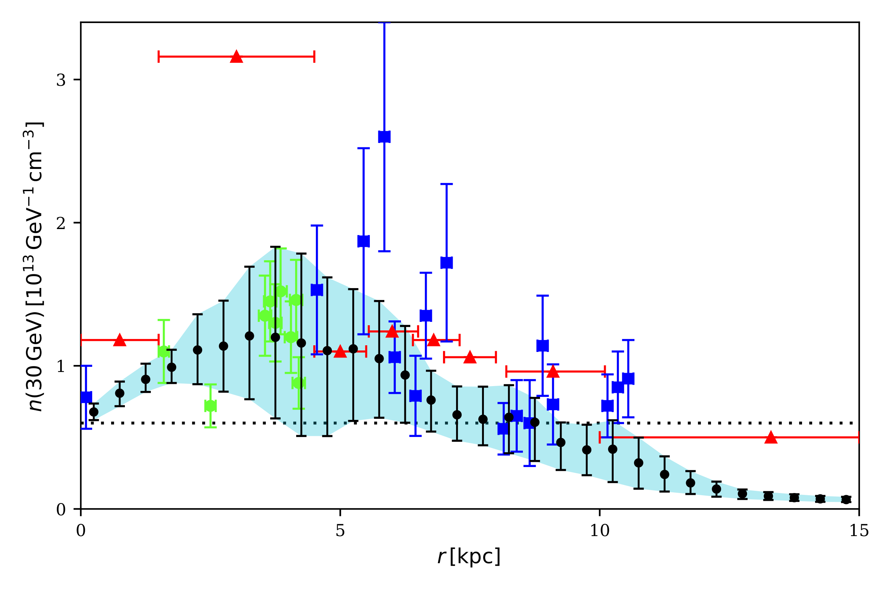
图注：Normalisation of the CRp spectrum at 30~GeV as a function of Galactocentric distance as derived by gamma-ray observations. Red triangles, green circles, and blue squares show measurements from \(\citet{Acero2016},\) \(\citet{Peron21},\) and \(\citet{Aharonian2020},\) respectively. The horizontal dotted line indicates the value measured locally by AMS--02 \(\citep{Aguilar2015}.\) Black points (with shaded band) show the posterior mean CRp density inferred in this work, with the band indicating the variations across positions at fixed Galactocentric radius. Figure adapted from \(\citet\)[see their Fig.~9, top panel]{Gabici2022}.
对应解读：对应“径向剖面或环平均 emissivity 图”和“太阳位置与 AMS-02 对比表或图”，也支撑关键结果中内银河中等增强、本地归一化与 AMS-02 相容的解读。
入选理由：这是最直接承载论文核心定量结论的图：横轴为银河心距，纵轴为30 GeV宇宙线质子谱归一化，包含本文后验均值、固定半径处空间变化带、文献伽马射线测量点以及AMS-02本地基准线。它同时检验径向梯度、太阳半径归一化和内银河增强幅度，比单纯二维密度图更适合支撑日报的物理结论。
来源与置信度：\(arxiv_source\)；high；\(arxiv_source\) / main.tex:figure[11]
Fig05
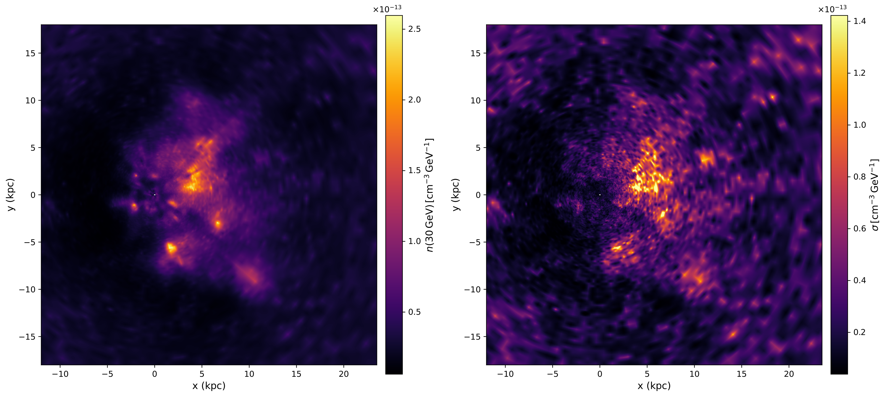
图注：Mean cosmic-ray density, $n_{\rm CR,mean}(30\,\mathrm{GeV})$, at $z=0$.
对应解读：对应“三维宇宙线质子密度切片图”和关键图表导读中关于宇宙线质子密度在银河平面内的重建结果。
入选理由：该图展示z=0银河中平面的30 GeV平均宇宙线密度，是读者理解三维层析重建主结果的入口。它能直接显示内银河增强是否平滑、动态范围是否有限，以及太阳附近相对于内盘的归一化水平，是论文最核心的空间重建图之一。
来源与置信度：\(arxiv_source\)；high；\(arxiv_source\) / main.tex:figure[5]
Fig06
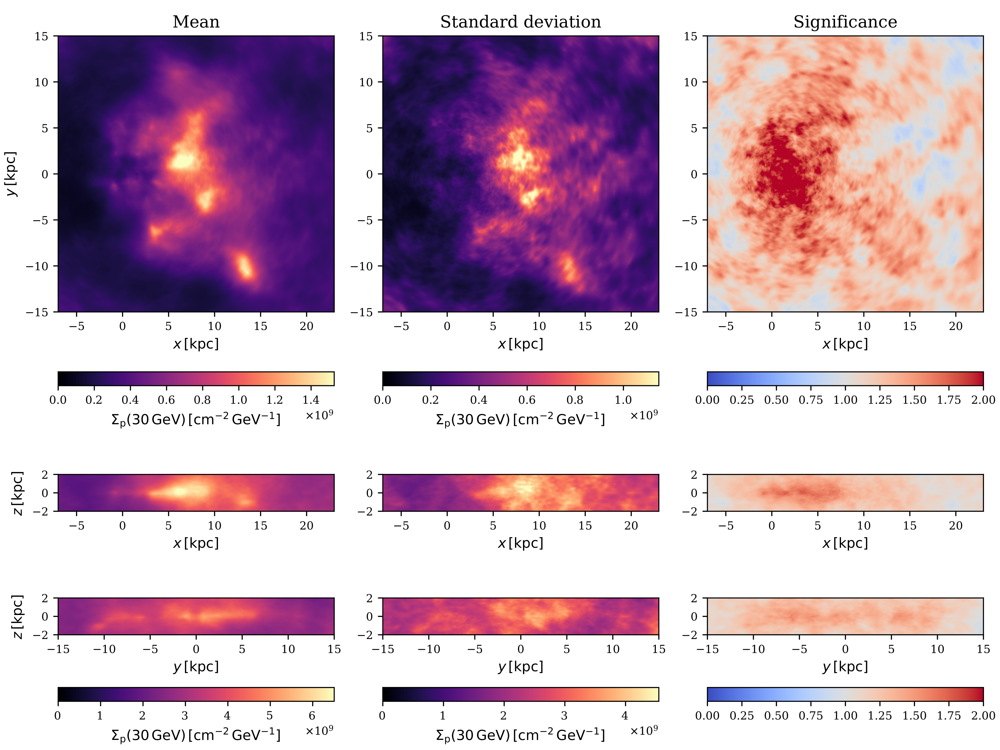
图注：Axis-integrated views of the reconstructed CRp distribution along the Cartesian axes. From left to right, the panels show the posterior mean, posterior standard deviation, and the corresponding significance. The significance is defined as the ratio of the axis-integrated mean to the axis-integrated standard deviation. The top row shows quantities integrated along the $z$-axis and displayed in the $x$--$y$ plane, while the middle and bottom rows show quantities integrated along the $y$- and $x$-axes and displayed in the $x$--$z$ and $y$--$z$ planes, respectively.
对应解读：对应“三维宇宙线质子密度切片图”和“后验不确定度或相对误差图”，也支撑模型拟合段落中关于后验均值、标准差和显著性的讨论。
入选理由：该图给出沿三个笛卡尔轴积分后的CRp分布，并同时展示后验均值、后验标准差和显著性，覆盖x-y、x-z、y-z三个投影视角。它比单一平面图更能检查垂直结构、远端银河约束强弱以及哪些区域主要由数据支持，适合解释三维反演的不确定性。
来源与置信度：\(arxiv_source\)；high；\(arxiv_source\) / main.tex:figure[6]
Fig01
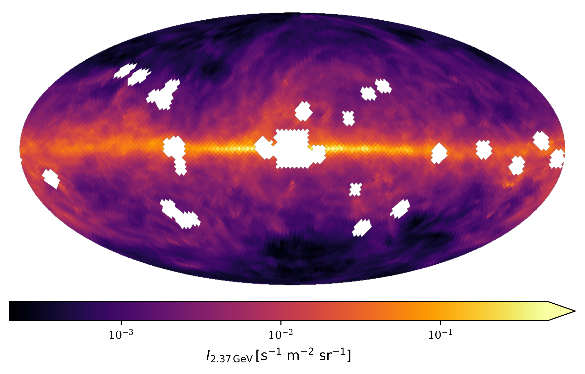
图注：Masked dust-correlated diffuse gamma-ray emission map in the energy range between 1.78 and 3.16~GeV used as input data for the inference. The map --as well as any other all sky map in this publication-- is shown in a Mollweide projection and downgraded to an angular resolution corresponding to $N_{\text{side}} = 32$.
对应解读：对应“输入γ射线图与气体投影图”和关键图表导读中的图1数据入口图。
入选理由：这是推断所用的尘埃相关弥散γ射线输入图，能帮助读者先看到观测约束的全天形态、银盘主导结构和高纬区域遮罩。日报中特别提醒不能把γ射线亮度峰直接解释为宇宙线峰，因此嵌入该图有助于区分观测亮度、气体柱密度和CRp密度之间的关系。
来源与置信度：\(arxiv_source\)；high；\(arxiv_source\) / main.tex:figure[1]
Fig09
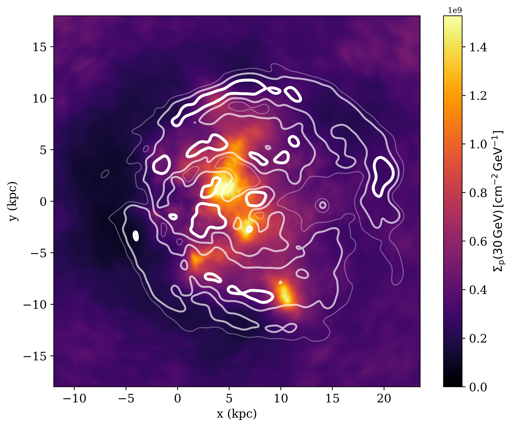
图注：Vertically integrated CRp density at 30\,GeV in the $x$--$y$ plane with overlaid total gas surface-density contours. The color map shows $\int n_{\rm CR}(30\,\mathrm{GeV})\,\mathrm{d}z$, while the white contours trace the total gas surface density at $\Sigma_{\rm gas} = 2.47,\ 4.35,$ and $9.01\,M_\odot\,\mathrm{pc}^{-2}$, corresponding to the 60th, 75th, and 97th percentiles of the gas surface-density distribution, respectively. Regions of strong spatial correspondence indicate areas where the CR reconstruction is supported by substantial gas content.
对应解读：对应“三维宇宙线质子密度切片图”中关于是否与气体结构过度相关的检查，以及模型拟合段落中的气体-宇宙线乘积退化。
入选理由：该图在垂直积分CRp密度图上叠加总气体面密度等值线，直接展示CR重建与气体分布的空间对应关系。它对判断重建是否真正反映CRp结构、还是受到气体模板和视线积分退化驱动尤其重要，科学诊断价值高于普通输入气体图。
来源与置信度：\(arxiv_source\)；high；\(arxiv_source\) / main.tex:figure[9]
Fig02
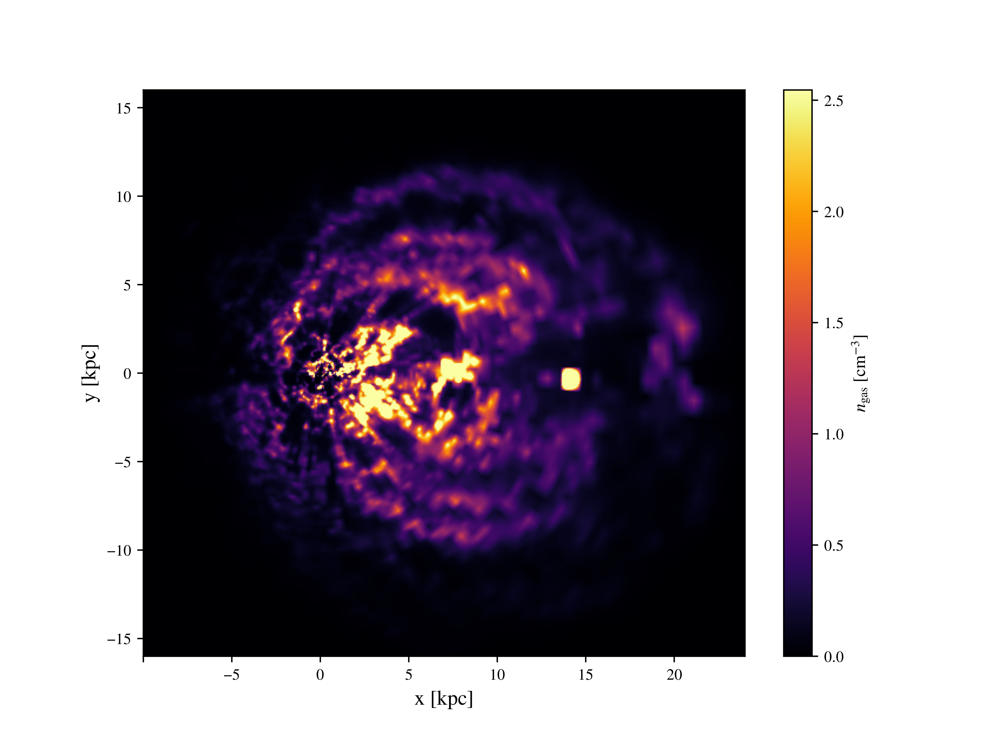
图注：Top-down view of the total Hydrogen density $n_\text{gas}$ at $z=0$ inferred by Söding25. The position of the Sun is at (0,0). Positive x points towards the Galactic centre. The corresponding resolution of the map depicted here differs from the original resolution of this map and is according to the resolution chosen for this work.
对应解读：对应“输入γ射线图与气体投影图”和关键图表导读中关于三维气体模型、坐标系、距离网格及太阳位置的说明。
入选理由：该图展示z=0处总氢气体密度的俯视分布，并标明太阳位置和指向银河中心的坐标方向。由于本文前向模型本质上依赖气体密度与CRp密度乘积再沿视线积分，气体模型是所有后续重建的关键系统误差来源，因此这张图适合作为理解反演输入和潜在退化的辅助图。
来源与置信度：\(arxiv_source\)；high；\(arxiv_source\) / main.tex:figure[2]
强相关工作
这项工作与传统银河弥散辐射建模密切相关，尤其是 \(GALPROP\)、\(DRAGON\) 和 \(Fermi\)-LAT 气体环 emissivity 分析。传统工作多从给定源分布和传播参数出发，预测宇宙线分布和 \(\gamma\) 射线天空；本文更像反问题：从处理后的 \(\gamma\) 射线形态和三维气体模型反推宇宙线质子密度。建议检索关键词包括 “Galactic cosmic-ray gradient problem”、 “Fermi-LAT diffuse gamma-ray emissivity”、 “cosmic-ray proton distribution Milky Way”、 “GALPROP diffuse emission”。
它也与银河中心超额和暗物质间接探测存在方法联系。任何内银河 \(\gamma\) 射线残差解释都依赖弥散前景，而宇宙线质子密度的内银河增强会改变强子背景水平。相反观点通常会强调气体模板系统误差、未解析点源和逆康普顿成分足以造成类似形态，因此本文结果需要与多能段谱信息、独立气体层析和点源人口模型交叉验证。建议检索关键词包括 “Galactic center excess diffuse model systematics”、 “interstellar gas tomography gamma rays”、 “Gaussian process field inference astrophysics”。
相似工作：
- https://arxiv.org/abs/2605.22739
- https://arxiv.org/abs/1202.4039
- https://arxiv.org/abs/1602.07246
基础理论 / 方法工作：
- https://arxiv.org/abs/0902.1081
- https://arxiv.org/abs/0804.2912
- https://arxiv.org/abs/1603.08149
相反观点 / 张力线索：
- https://arxiv.org/abs/1506.05104
- https://arxiv.org/abs/1704.03910
- https://arxiv.org/abs/1910.06356
2. The powerful shocks in RS Oph: NuSTAR X-ray data and a complete review
- 来源：arXiv / astro-ph.HE
- 链接：https://arxiv.org/abs/2605.21837v1
- 作者：Marina Orio, Gerardo Juan M. Luna, Ehud Behar, Rebecca Diesing, Jay Gallagher, Joanna Mikolajewska, Jan-Uwe Ness
- 评分：novelty 8/10，importance 8/10，relevance 10/10，final 9.70/10
- 推荐理由：RS Oph 2021爆发的NuSTAR硬X射线分析并结合Fermi和切伦科夫望远镜伽马射线结果，直接讨论新星冲击、粒子加速和GeV/TeV辐射不一致性，是高能伽马/冲击物理高度相关论文。
中文题目：RS Oph 中的强激波：NuSTAR 硬 X 射线数据与完整回顾
做了什么：这篇论文围绕复发新星 RS Oph 在 2021 年爆发中的激波物理展开：作者公布了一次此前未发表的 NuSTAR 观测，覆盖 \(3\text{--}79\,\mathrm{keV}\)，时间在光学峰值后约第 \(9\) 天，并把它放进 2021 年从 \(\gamma\) 射线到软、硬 X 射线的准同步监测以及 RS Oph 历次爆发的历史证据中重新分析。核心结论是：后来 Cherenkov 望远镜看到的 TeV 粒子加速激波，很可能也产生了 \(0.2\text{--}30\,\mathrm{keV}\) 的热 X 射线；但爆发后约一天内 Fermi 看到的强 GeV \(\gamma\) 射线峰，与同时期 X 射线热辐射并不匹配。作者因此主张早期存在一个贴近红巨星大气的强激波，其高能粒子在几 GeV 以上的粒子—粒子损失时间短于加速时间，使得 GeV 辐射很强而 X 射线要么因有效发射体积被湍流压缩而偏弱，要么被红巨星附近大柱密度和吸积尾迹严重吸收。
为什么重要：RS Oph 是少数能在同一次新星爆发中同时看到光学、X 射线、GeV 与 TeV 高能辐射的系统，且伴星是红巨星，周围有高密度风环境。它不是普通经典新星的简单放大版，而是研究非相对论激波、致密星风相互作用、粒子加速和吸收几何的天然实验室。论文的重要性在于把 NuSTAR 硬 X 射线谱加入完整时间线，直接检验“同一激波是否同时解释热 X 射线与非热 \(\gamma\) 射线”这一关键问题。
理论 / 观测 / 仪器方法价值：对理论而言，论文把激波温度、吸收柱密度、X 射线发射量、GeV/TeV 辐射和粒子损失时间尺度联系起来，给出了一套约束新星激波能量预算和粒子加速效率的物理框架。对观测而言，它强调准同步多波段数据的重要性：只看 \(\gamma\) 射线或只看 X 射线都可能误判激波位置、密度和遮蔽程度。对方法而言，NuSTAR 的硬 X 射线覆盖帮助区分高温热等离子体尾部、吸收效应和潜在非热成分，是软 X 射线仪器难以替代的诊断。
为什么应该关注：如果你关心新星是否能成为有效宇宙线加速器、致密双星周围风介质如何塑造高能辐射，或未来 T CrB 爆发该如何组织快速多波段观测，这篇文章值得读。它提醒我们：早期最亮的 \(\gamma\) 射线不一定对应最容易看到的 X 射线激波；发射区几何、红巨星风、吸积尾迹和湍流会把能量预算伪装得很复杂。
展开详细解读：文章讲解、背景、理论、重点章节、图表与相关工作
文章详细讲解
科学问题：RS Oph 是白矮星加红巨星的复发新星，爆发抛射物会撞入红巨星风和近伴星环境，产生强非相对论激波。2021 年爆发的特殊之处在于，从光学峰值后约第 \(1\) 天起，Fermi、Cherenkov 望远镜以及 X 射线卫星几乎同时追踪了高能辐射。问题不只是“有没有激波”，而是不同能段看到的是否为同一个激波、激波在系统中什么位置、为什么早期 GeV \(\gamma\) 射线如此强而 X 射线并没有按简单热激波模型同步增强。
作者怎么做：论文公布了此前未发表的 NuSTAR 观测，时间在 2021 年光学最大后第 \(9\) 天，能段为 \(3\text{--}79\,\mathrm{keV}\)。NuSTAR 对高温热等离子体的硬 X 射线连续谱和高能尾部特别敏感，因此能补上软 X 射线监测在高温端的缺口。作者还系统回顾 RS Oph 以往爆发中关于激波的证据，包括早期硬 X 射线、软 X 射线吸收变化、谱线宽度、光学和射电结构，并把这些历史资料与 2021 年密集监测进行比较。
关键结果：作者认为，产生 Cherenkov 望远镜探测到的高能粒子加速的激波，也能自然解释 \(0.2\text{--}30\,\mathrm{keV}\) 范围内观测到的热 X 射线通量。这说明至少在爆发数天后，热等离子体和非热粒子加速并非互不相关的两个过程，而可能是同一外向激波的不同观测面。相反，爆发后约第 \(1\) 天 Fermi 看到的大 GeV \(\gamma\) 射线通量与 X 射线观测不相容：若同一强激波在可见体积中产生热 X 射线，应当有更强或不同演化的 X 射线信号。作者因此提出早期强激波发生在接近红巨星大气的位置，局部密度极高，粒子—粒子碰撞损失很快，能高效产生 GeV \(\gamma\) 射线，但 X 射线发射可见体积可能被湍流强烈限制，或者沿视线被红巨星附近物质和吸积尾迹的高柱密度吸收。
局限和下一步：论文讨论了两种解释早期 X 射线偏弱的方案：有效发射体积小，或吸收柱密度极大。前者牵涉三维湍流、碎裂壳层和磁场放大，后者牵涉双星几何、红巨星风非球对称性和吸积尾迹遮挡，两者仅凭一条视线的 X 射线谱并不容易完全区分。下一步需要更早期、更高 cadence 的硬 X 射线观测，结合 TeV、GeV、射电成像和光学高分辨谱线速度场，建立时变三维辐射流体模型。作者还把 RS Oph 与其他长周期、演化伴星新星比较，并预测 T CrB 未来爆发的激波可能没有 RS Oph 这样高能，这为后续观测计划提供了可检验目标。
背景知识
RS Oph 属于共生型复发新星：一颗接近 Chandrasekhar 质量的白矮星从红巨星伴星吸积物质，积累到一定程度后发生热核失控，抛出高速物质。与普通经典新星不同，RS Oph 的抛射物不是进入稀薄星际介质，而是几乎立即撞上红巨星风和双星轨道尺度上的致密结构。因此它的早期高能辐射更多由外部相互作用决定，而不只是白矮星表面核燃烧的余辉。
历史上，RS Oph 每次爆发都显示出激波迹象：光学谱线很宽，射电结构快速膨胀，X 射线出现高温等离子体成分，并且吸收柱密度随时间显著变化。2006 年爆发已经被 Swift、RXTE、Chandra 和 XMM-Newton 等观测详细研究，但当时 GeV 和 TeV 监测能力、触发速度和覆盖连续性都不如 2021 年。2021 年爆发提供了第一次真正接近“从爆发初期开始的多信使式电磁高能时间线”的机会。
这个问题现在值得重新看，是因为新星已经被确认是 GeV \(\gamma\) 射线源，甚至少数新星能被地面 Cherenkov 望远镜看到 TeV 光子。过去人们常把新星看成相对低能的热核瞬变，而现在它们被纳入非相对论激波粒子加速的实验样本。RS Oph 的红巨星风密度高，碰撞时间尺度短，正好能检验粒子加速与辐射损失之间的竞争。
一个常见误区是把 X 射线亮度直接等同于激波功率。实际上，X 射线亮度取决于密度平方、温度、发射体积、吸收柱密度、非平衡电离状态以及电子和离子是否达到温度平衡。另一个误区是认为 GeV 和 TeV \(\gamma\) 射线只要时间上接近，就必然来自同一空间区。对于 RS Oph 这种轨道尺度上高度非均匀的系统，早期近红巨星激波、后期外向风激波、喷流样结构或赤道密度增强都可能在不同时间占主导。
基础理论 / 方法脉络
基本物理图像是高速新星抛射物以速度 \(v_{\rm s}\) 撞入红巨星风。强激波把上游动能转化为下游热能、湍动能、磁场能和非热粒子能。若激波足够强且近似绝热，离子温度可达到数到数十 \(\mathrm{keV}\)，在 X 射线中表现为热 bremsstrahlung 连续谱和高电离金属谱线；若激波还能进行扩散激波加速，则一部分质子或电子被加速到 GeV 或 TeV 能量，产生 \(\gamma\) 射线。
本文特别关心两个时间阶段。早期约第 \(1\) 天，Fermi 的 GeV 信号很强，但 X 射线并未按简单同源模型给出相应热辐射。稍晚阶段，Cherenkov 望远镜探测到高能辐射，而 X 射线热成分更容易与同一激波联系起来。这里的关键量包括激波温度 \(kT\)、吸收柱密度 \(N_{\rm H}\)、发射量 \(EM\)、未吸收通量 \(F_X\)、\(\gamma\) 射线光度 \(L_\gamma\)、粒子加速时间 \(t_{\rm acc}\) 和碰撞损失时间 \(t_{pp}\)。
NuSTAR 的作用在于观测硬 X 射线连续谱。软 X 射线能段容易被较小的 \(N_{\rm H}\) 强烈影响，而 \(3\text{--}30\,\mathrm{keV}\) 范围对高温热等离子体尾部更敏感，能较好约束 \(kT\) 和高能通量。若存在非热 X 射线尾部，NuSTAR 也比软 X 射线仪器更有机会发现；若没有显著非热尾部，也能限制电子加速或逆康普顿、非热 bremsstrahlung 的贡献。
主要退化关系来自 \(N_{\rm H}\)、\(kT\) 和 \(EM\) 的相互补偿：较高吸收会压低低能 X 射线，较高温度会增加硬尾，较大发射量会整体抬升谱。若观测只覆盖窄能段，三者容易混淆。对 \(\gamma\) 射线解释还存在 hadronic 与 leptonic 退化：质子—质子碰撞产生 \(\pi^0\) 衰变 \(\gamma\) 射线，电子则可通过逆康普顿或 bremsstrahlung 发光。RS Oph 高密度风环境使 hadronic 过程很有吸引力，但需要同时满足加速效率、碰撞损失和 X 射线热辐射约束。
公式与推导
第一步从强激波跃迁条件出发。对单原子理想气体且绝热指数 \(\gamma_{\rm ad}=5/3\)，强激波下游离子温度近似为
这里 \(k\) 是 Boltzmann 常数，\(T_{\rm s}\) 是激波后温度，\(\mu\) 是平均粒子量，\(m_p\) 是质子质量，\(v_{\rm s}\) 是激波速度。这个式子把 X 射线谱拟合得到的 \(kT\) 与光学或射电测得的膨胀速度联系起来，是判断热 X 射线是否来自同一激波的第一把尺子。
第二步估算红巨星风密度。若风近似稳态球对称，则半径 \(r\) 处密度为
其中 \(\dot M_{\rm w}\) 是红巨星质量损失率，\(v_{\rm w}\) 是风速，\(n_{\rm w}\) 是数密度。RS Oph 的早期激波半径接近双星尺度，此时 \(n_{\rm w}\) 可很高，既增强热 X 射线发射，也缩短 hadronic 损失时间。
第三步把热 X 射线亮度写成发射量形式：
这里 \(n_e\) 和 \(n_i\) 是电子和离子密度，\(\Lambda_E\) 是给定能段的冷却函数，依赖温度 \(T\) 和丰度 \(Z\)，\(EM=\int n_e n_i dV\) 是发射量。若 \(\gamma\) 射线要求很高密度和强激波，而观测到的 \(L_X\) 偏低，就必须降低可见 \(EM\)、增强吸收，或改变辐射机制。
第四步考虑吸收后的观测谱。源本征光子谱 \(S(E)\) 到达探测器前被光电吸收修正为
其中 \(\sigma(E)\) 是能量相关吸收截面，\(N_{\rm H}\) 是等效氢柱密度。低能 X 射线因 \(\sigma(E)\) 大而被强烈压低，NuSTAR 的硬能段可部分绕开这一问题，但若 \(N_{\rm H}\) 极端大，甚至几 keV 以上也会受影响。
第五步写出仪器计数模型。对能道 \(i\)，预测计数为
这里 \(t_{\rm exp}\) 是曝光时间，\(R_i(E)\) 是能量响应矩阵，\(A_{\rm eff}(E)\) 是有效面积，\(B_i\) 是背景计数。NuSTAR 谱拟合实际比较的是计数空间中的 \(C_i^{\rm mod}\) 与观测 \(C_i\)，而不是直接比较去卷积后的通量点。
第六步给出 Poisson 似然或 Cash 统计量：
当计数不高或背景复杂时，这比简单 \(\chi^2\) 更稳健。拟合 \(kT\)、\(EM\)、\(N_{\rm H}\) 和可能的非热分量时，应检查残差是否集中在低能吸收边、高能尾部或谱线区域。
第七步估算 hadronic \(\gamma\) 射线的损失时间。质子—质子碰撞时间可写为
其中 \(n\) 是靶物质密度，\(\sigma_{pp}\) 是非弹性碰撞截面，\(\kappa_{pp}\) 是非弹性能量损失比例，\(c\) 是光速。若早期靠近红巨星大气，\(n\) 很大，\(t_{pp}\) 可短到使高能质子在逃逸前快速辐射能量。
第八步比较扩散激波加速时间：
这里 \(E\) 是粒子能量，\(e\) 是元电荷，\(B\) 是磁场强度，\(\eta\geq 1\) 表示扩散相对 Bohm 极限的低效程度。论文关于早期强激波的解释可概括为：在几 GeV 以上若 \(t_{pp} 第九步把非热辐射与激波功率联系起来： 其中 \(\epsilon_{\rm CR}\) 是进入宇宙线的激波能量比例，\(f_{pp}\) 是碰撞辐射效率，\(A_{\rm sh}\) 是激波面积。若 \(L_\gamma\) 很高而由同一 \(L_{\rm sh}\) 产生的可见 \(L_X\) 低，就说明 \(A_{\rm sh}\)、可见体积、吸收或能量分配中至少有一项与简单球对称模型不同。 这类工作的谱拟合首先在 X 射线计数空间中进行。NuSTAR 的 \(3\text{--}79\,\mathrm{keV}\) 数据通常会与软 X 射线仪器结果互相参照，用吸收热等离子体模型描述连续谱和线辐射，核心拟合量包括 \(N_{\rm H}\)、\(kT\)、归一化或 \(EM\)、元素丰度，以及可能的多温度成分。对 RS Oph 这样快速演化的源，还必须把观测时间相对于光学峰值的相位纳入解释，而不能把不同天的数据简单合并。 统计上，低计数能道适合使用 Poisson 似然或 Cash 统计量，高计数分组后可用 \(\chi^2\) 作为近似。关键不是单一最佳拟合值，而是残差结构：若高能端系统性高于热模型，可能暗示更热成分或非热尾；若低能端低于模型，可能是吸收或校准问题；若谱线区残差明显，可能是丰度、非平衡电离或多温结构没有处理好。 参数退化尤其重要。\(N_{\rm H}\) 与 \(EM\) 可互相补偿：更大的吸收会要求更高本征亮度来解释观测计数。\(kT\) 与非热 power-law 尾部也会退化：有限信噪比下，一个更高温的热 plasma 可能模仿硬尾。若只有软 X 射线，温度上限不稳；若只有硬 X 射线，吸收和低温成分不稳。因此论文强调 NuSTAR 结果必须放在多波段时间序列中看。 从 \(\gamma\) 射线角度，模型拟合还涉及 hadronic 与 leptonic 场景的比较。hadronic 模型需要靶密度、宇宙线质子谱、最大能量和碰撞效率；leptonic 模型需要电子谱、磁场、光子场和 bremsstrahlung 靶密度。RS Oph 的高密度环境倾向支持 hadronic 解释，但如果磁场、红巨星辐射场或电子注入效率不同，仍可能在部分能段贡献显著。 模型可能失败的地方包括：假定球对称风、单温等离子体、单一吸收柱或单一激波面。真实系统可能有赤道密度增强、轨道尾迹、喷流样不对称结构、碎裂壳层和湍流混合层。对实际应用而言，最有用的不是把所有能段强行套进一个简化模型，而是用 X 射线温度和发射量约束热能库，用 \(\gamma\) 射线光度约束非热能库，再用吸收和时间演化判断激波所在位置。 数据和样本部分应先看 NuSTAR 观测的时间、曝光、能段、背景处理和与其他 2021 年观测的时间关系。关键问题是第 \(9\) 天的硬 X 射线谱代表哪一阶段的激波：它不是最早 Fermi 峰的同时观测，而是与后续更外层激波和 TeV 探测更相关。 方法部分重点看谱模型如何设置：是否采用单温或多温热等离子体、吸收模型是否允许高 \(N_{\rm H}\)、是否测试非热分量、NuSTAR 与其他仪器通量是否有交叉归一化。读者应特别留意作者如何把 \(0.2\text{--}30\,\mathrm{keV}\) 的热通量与 \(\gamma\) 射线时间线比较。 主结果部分要抓住两条判断：一是 Cherenkov 望远镜所指示的粒子加速激波与热 X 射线激波之间的一致性；二是早期 Fermi 强 GeV 通量与 X 射线观测之间的不一致性。前者支持同源激波解释，后者要求额外的几何、吸收或损失时间尺度解释。 讨论部分是论文最值得细读的地方。作者提出早期强激波靠近红巨星大气，粒子—粒子损失时间短于几 GeV 以上的加速时间，并讨论 X 射线偏弱的两种原因：湍流导致有效发射体积小，或大柱密度吸收。这里应关注作者对哪一种解释更偏好、依据是什么、是否存在可观测检验。 比较和预测部分把 RS Oph 放进长周期演化伴星新星的族群中，并讨论 T CrB。读者应把这部分当成观测策略建议：未来 T CrB 爆发若要验证预测，需要多早触发 Fermi、NuSTAR、Swift、NICER、地面 Cherenkov、射电和高分辨光谱。 多波段光变曲线：应检查光学峰后天数为横轴时，Fermi GeV、Cherenkov TeV、软 X 射线和 NuSTAR 硬 X 射线峰值是否同步，尤其看第 \(1\) 天 GeV 峰与 X 射线的错位。 NuSTAR 硬 X 射线谱和残差：看 \(3\text{--}79\,\mathrm{keV}\) 中高能端是否需要极高温热成分或非热 power-law，残差是否在高能端系统性偏正。 吸收柱密度随时间变化：检查 \(N_{\rm H}\) 是否快速下降，是否能支持早期强遮蔽情景；还要看不确定度是否足以区分星风吸收和吸积尾迹吸收。 激波温度或速度演化图：比较 X 射线温度推得的 \(v_{\rm s}\) 与光学谱线、射电膨胀或模型速度是否一致。 X 射线通量与 \(\gamma\) 射线通量比较图：看作者如何判断早期 Fermi 通量“不一致”，是绝对能量预算不匹配，还是时间演化斜率不匹配。 RS Oph 与其他共生或长周期新星比较表：检查系统参数，如轨道周期、伴星风密度、爆发复发时间、\(\gamma\) 射线探测情况和 X 射线峰值是否支持作者的族群解释。 T CrB 预测相关图或表：看预测依据是风密度、轨道尺度、抛射物速度还是历史爆发差异，避免把经验类比误读为精确预报。 图 1：建议首先寻找多波段时间线图。横轴通常应是光学最大后的时间，纵轴可能分别给出通量、计数率或归一化亮度。数据点若分属 Fermi、Cherenkov、Swift、NuSTAR 或其他 X 射线仪器，应注意不同纵轴单位不能直接比较。主要读法是看 GeV 峰、TeV 探测窗口和 X 射线热辐射增强是否同相；读图陷阱是把非同时数据点误认为同一激波状态。 图 2：NuSTAR 谱图应重点看能量 \(E\) 对计数谱或 unfolded 能谱的关系，以及下方面板的残差。模型线若为吸收热 plasma，低能端主要受 \(N_{\rm H}\) 控制，高能端主要受 \(kT\) 或非热尾控制。若残差在 \(10\text{--}30\,\mathrm{keV}\) 持续偏离，说明单温模型可能不足；但 unfolded 图有模型依赖，真正判断应看计数空间残差。 图 3：若论文给出 \(N_{\rm H}\)、\(kT\) 或 \(EM\) 的时间演化，应把它当作激波从致密内区向外传播的诊断。横轴为天数，纵轴为谱拟合参数，误差棒代表统计不确定度，可能还未包含系统误差。关键结论通常来自趋势而非单点：吸收下降说明视线变透明，温度下降可能说明激波减速或不同区域开始主导。 图 4：X 射线与 \(\gamma\) 射线能量预算对比图若存在，应看模型线是否把同一激波功率分配到热辐射和非热粒子。若早期 Fermi 点远高于热 X 射线约束允许的范围，就支持作者的“早期近红巨星强激波但 X 射线被隐藏或发射体积小”的解释。陷阱是忽视 \(\gamma\) 射线辐射效率 \(f_{pp}\) 和宇宙线效率 \(\epsilon_{\rm CR}\) 的不确定性。 图 5：系统比较图或表应检查 RS Oph、T CrB 和其他长周期新星的参数是否放在同一尺度上。坐标轴可能是轨道周期、风密度指标、峰值 X 射线亮度或 \(\gamma\) 射线探测强度。主要结论是激波现象可反推环境密度和几何；读图陷阱是样本数小、选择效应强，未探测 \(\gamma\) 射线并不等于没有粒子加速。 Fig06 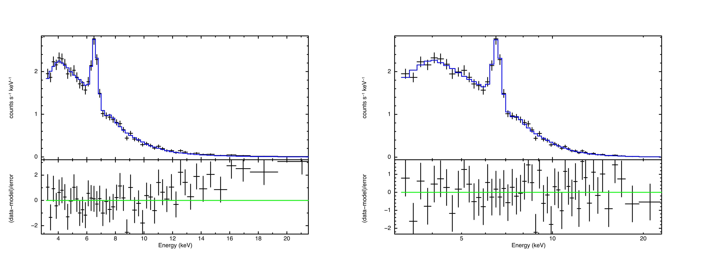模型拟合 / 应用方法
重点章节 / 结果段落怎么读
建议重点查看的图表
关键图表逐图导读
论文原图 / 可嵌入图片
图注：The spectrum observed on August 17 2021 with NuSTAR FPMB in a time interval overlapping with NICER, and the fit with the model shown in Fig. 4, with fixed N(H) of the partially covering absorber (see 2nd row in Table 1), with and without the power law component included in Model 2, last column of Table 1. Notice how the powerlaw improves the residuals at high energy.
对应解读：对应“NuSTAR 硬 X 射线谱和残差”以及模型拟合段落中关于高能端热成分与非热 power-law 退化的讨论。
入选理由：这张图明确比较了加入和不加入 power-law 成分时的 NuSTAR FPMB 谱拟合，并在图注中指出 power-law 改善高能残差，最直接支撑日报关于 10--30 keV 高能端残差、极高温热成分或非热尾的重点解读。
来源与置信度：\(arxiv_source\)；high；\(arxiv_source\) / rsnonumb.tex:figure[6]
Fig04
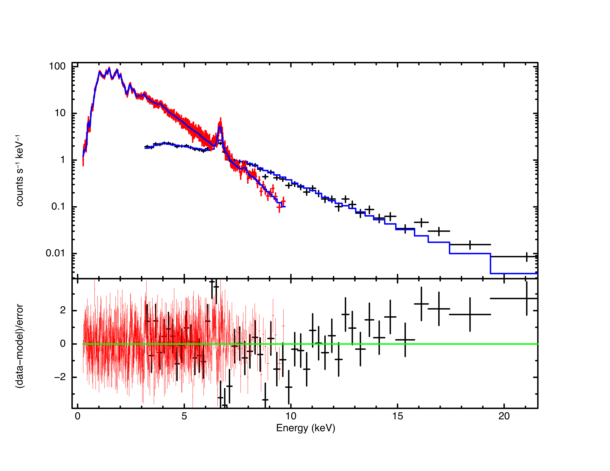
图注：The full-range spectrum observed on August 17 2021 with NICER and NuSTAR in the overlapping time interval, in the 0.25-25 keV range and (in blue) the fit with the three component BVAPEC model, shown in Table 1. The residuals of the fit are shown in the lower panel.
对应解读：对应“NuSTAR 谱图应重点看能量对计数谱或 unfolded 能谱以及下方面板残差”的逐图导读，也对应软 X 射线与 NuSTAR 联合谱拟合段落。
入选理由：该图给出 NICER 与 NuSTAR 在重叠时间内 0.25--25 keV 的联合谱和三成分 BVAPEC 模型残差，能够同时展示低能吸收、热等离子体多温结构和高能连续谱约束，比单一仪器图更适合说明谱拟合的物理诊断。
来源与置信度：\(arxiv_source\)；high；\(arxiv_source\) / rsnonumb.tex:figure[4]
Fig05
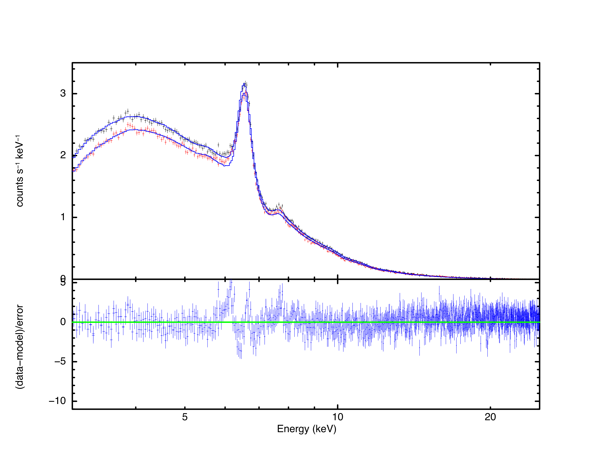
图注：The average NuSTAR FPMA (black) and FPMB (red) spectra avraged over the whole time 1.2 days, and a fit with two vapec components at temperature of 2.65 keV and 11.70 keV, respectively, with the parameters given in the first row of Table 1.
对应解读：对应“NuSTAR 硬 X 射线谱和残差”中关于 3--79 keV 硬 X 射线谱需要多温热等离子体的讨论。
入选理由：这张图展示整个 NuSTAR 观测平均后的 FPMA/FPMB 谱，并采用两个 vapec 温度成分拟合，其中包含约 11.70 keV 的高温成分，是判断硬 X 射线是否可由热激波解释的重要证据。
来源与置信度：\(arxiv_source\)；high；\(arxiv_source\) / rsnonumb.tex:figure[5]
Fig01
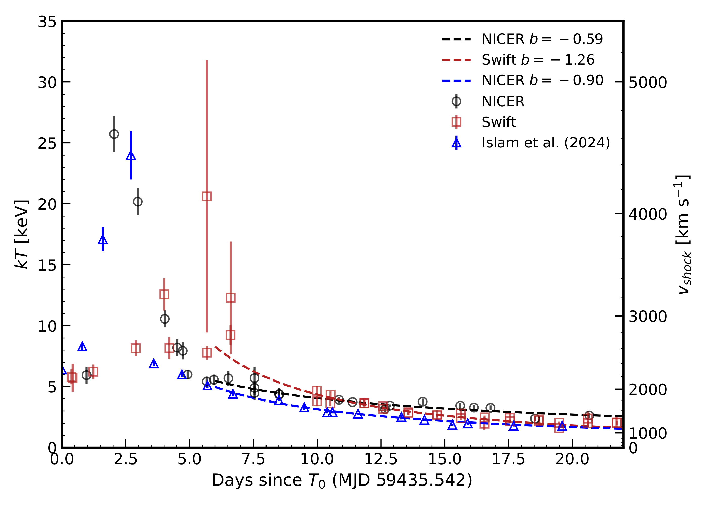
图注：The time evolution of the highest temperature obtained in the spectral fits by \(\citet{Page2022, Orio2023}\) and of the temperature in \(\citet{Islam2024}.\) From day 5, when the flux declined, a different trend in time - as shown in the inset where the slope is indicated as $b$ - was derived in each of the three papers, depending on the model adopted for the fit.
对应解读：对应“激波温度或速度演化图”和“若论文给出 kT 时间演化，应把它当作激波从致密内区向外传播的诊断”的逐图导读。
入选理由：该图汇总不同文献谱拟合得到的最高温度随时间演化，并展示 day 5 之后不同模型给出的衰减斜率差异，最适合支撑日报中关于温度下降、激波减速以及模型依赖性的讨论。
来源与置信度：\(arxiv_source\)；high；\(arxiv_source\) / rsnonumb.tex:figure[1]
Fig03
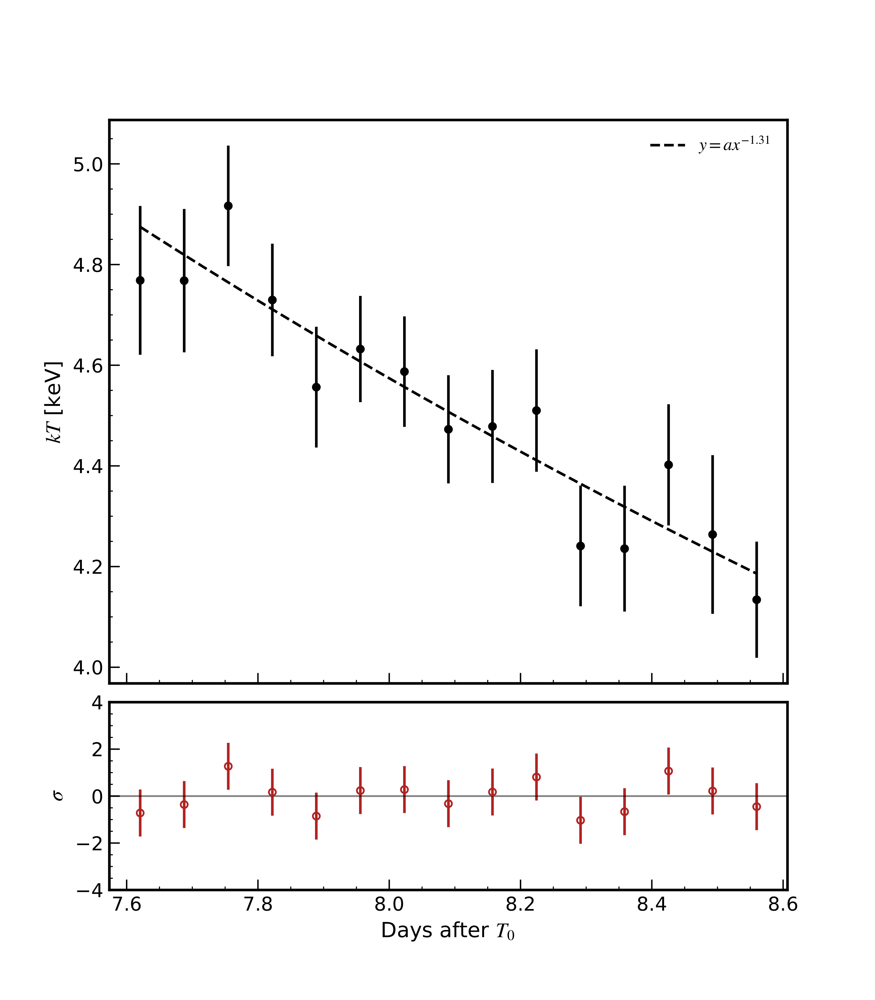
图注：Best fit temperature with one component APEC model, obtained for the single NuSTAR exposures between 2021 August 17 and 2021 August 18. The top panel shows how the trend can be fitted with t$^{-1.3}$. The residuals from this fit are shown in the bottom panel.
对应解读：对应“NuSTAR 硬 X 射线谱和残差”以及“kT 时间演化”的模型拟合解读，尤其是 NuSTAR 单次曝光内温度变化。
入选理由：该图给出 NuSTAR 单个曝光分段的一温 APEC 最佳拟合温度，并在下方面板显示相对 t^-1.3 趋势的残差，可用于检查短时间尺度内激波温度演化是否平滑以及单温模型是否足够。
来源与置信度：\(arxiv_source\)；high；\(arxiv_source\) / rsnonumb.tex:figure[3]
Fig02
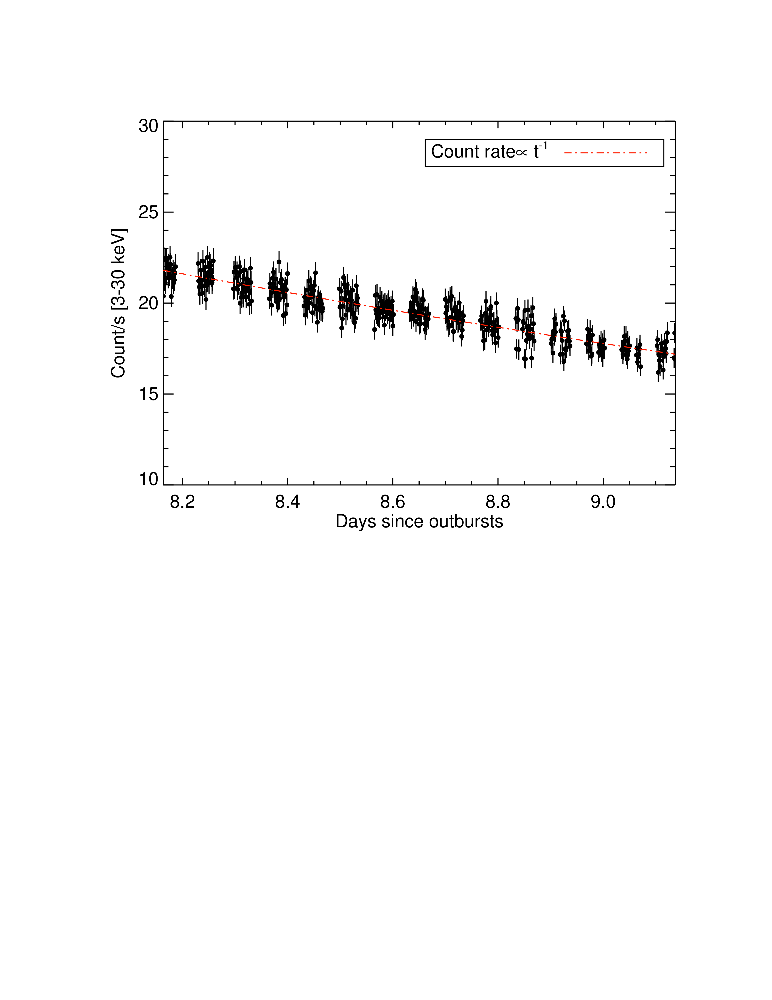
图注：{\(\em\) NuSTAR} FPMA light curve in the 3-30 keV energy range. The dot-dashed red line shows a power law fit: the count rate variation in time is proportional to $t^{-1}$. The FPMB lightcurve is exactly overlapping and we plot only one detector for clarity.
对应解读：部分对应“多波段光变曲线”中关于 NuSTAR 硬 X 射线峰值和时间演化的检查，但不包含 Fermi、Cherenkov 或软 X 射线同步对比。
入选理由：这张图只给出 NuSTAR 3--30 keV 光变曲线和 t^-1 衰减拟合，不能直接检验 GeV、TeV 与 X 射线错位，但仍能为第 9 天硬 X 射线热激波衰减提供时间域背景。
来源与置信度：\(arxiv_source\)；high；\(arxiv_source\) / rsnonumb.tex:figure[2]
强相关工作
这篇工作应放在两条文献线中阅读。第一条是 RS Oph 历次爆发的 X 射线和射电研究，特别是 2006 年爆发中 Swift、RXTE、Chandra、XMM-Newton 对早期硬 X 射线、后期超软源和吸收演化的监测。检索关键词可用 “RS Oph 2006 X-ray shock Swift Chandra”, “RS Ophiuchi NuSTAR 2021”, “recurrent nova symbiotic shock X-rays”。这些工作提供了判断 2021 年是否异常、哪些现象可重复的基线。
第二条是新星 \(\gamma\) 射线和粒子加速文献，包括 Fermi 发现经典新星 GeV 辐射、MAGIC 或 H.E.S.S. 对 RS Oph 的 TeV 探测，以及非相对论激波中 hadronic 与 leptonic 模型的争论。检索关键词可用 “nova gamma rays Fermi LAT”, “RS Oph MAGIC HESS TeV”, “hadronic leptonic nova shocks”, “particle acceleration non-relativistic shocks novae”。张力主要在于：GeV 辐射是否普遍由 hadronic 过程主导，X 射线为何常比简单激波模型预期弱，以及早期吸收和几何是否足以解释这种差异。
相似工作：
- https://arxiv.org/abs/2605.21837
- https://arxiv.org/pdf/2605.21837
基础理论 / 方法工作：
- https://ui.adsabs.harvard.edu/
- https://arxiv.org/search/astro-ph?query=RS+Oph+2006+X-ray+shock&searchtype=all
- https://arxiv.org/search/astro-ph?query=nova+gamma+rays+Fermi+LAT&searchtype=all
相反观点 / 张力线索：
- https://arxiv.org/search/astro-ph?query=hadronic+leptonic+nova+gamma+rays&searchtype=all
- https://arxiv.org/search/astro-ph?query=RS+Oph+TeV+gamma+rays+MAGIC+HESS&searchtype=all
3. Self-Supervised ConvLSTM for Fermi Large Area Telescope Transient Detection
- 来源：arXiv / astro-ph.HE
- 链接：https://arxiv.org/abs/2605.22112v1
- 作者：Alberto Garinei, Stefano Speziali, Alessandro Vispa, Andrea Marini, Sara Cutini, Emanuele Piccioni, Marcello Marconi, Francesco Longo
- 评分：novelty 8/10，importance 7/10，relevance 10/10，final 9.35/10
- 推荐理由：面向Fermi-LAT全天日尺度数据的自监督ConvLSTM瞬变伽马射线异常检测框架，直接涉及伽马射线时域天文学和仪器/数据分析方法；对GRB、耀变体和未知瞬变搜索有潜在复用价值。
中文题目：用于费米大面积望远镜瞬变探测的自监督 ConvLSTM 方法
做了什么：这篇文章把费米大面积望远镜（Fermi-LAT）的伽马射线瞬变搜索重新表述为一个时空异常检测问题：先用端到端仿真生成十年尺度的 LAT 类全天事件数据，再把事件整理成逐日的计数图和曝光图，训练一个自监督 ConvLSTM 网络去预测“正常天空”的时间演化。网络不需要逐个瞬变源的人工标签，而是通过重建误差寻找偏离基线的像素区域，并用训练集残差分布给出逐像素阈值，再用局部空间过滤压制孤立统计涨落。其主要结论是，这类时空深度学习框架可以在受控仿真环境中学习 LAT 全天数据的正常变化，并在真实逐日 LAT 图上标记出与耀发、伽马暴或强变源相符的局域、短时过量。
为什么重要：Fermi-LAT 已经运行多年，数据量巨大，传统瞬变搜索通常依赖预设源表、似然扫描、人工触发或针对特定时间尺度的管线。本文的重要性在于，它尝试建立一种不依赖完整标签集的通用异常检测基线：让模型学习曝光、背景和稳定源共同塑造的正常全天图像，再把剩余偏差作为瞬变候选。这对高能时域天文学很有吸引力，因为真正有趣的事件往往不是训练集中已经定义好的类别。
理论 / 观测 / 仪器方法价值：方法价值主要在三方面。第一，它把端到端 LAT 仿真、逐日全天图构建、时空神经网络和统计阈值化连接成一个可复现实验平台，适合系统比较不同异常检测策略。第二，ConvLSTM 保留空间邻近性并建模时间相关性，比逐像素时间序列或单日图像方法更贴近 LAT 扫描观测的结构。第三，它强调残差分布、逐像素阈值和空间连贯性过滤，说明机器学习输出必须转化为可诊断的统计量，才能进入实际瞬变候选筛选流程。
为什么应该关注：如果你关心的是 LAT 长时标数据库里是否还有漏掉的耀发、暗弱伽马暴、高纬暂现源或仪器异常，这篇文章值得看，因为它提供了一套从仿真校准到真实数据部署的框架。如果你做的是高能仪器、时域巡天或机器学习方法学，它也值得看：论文展示了如何把物理观测中的曝光不均匀、泊松计数噪声、空间点扩散函数和长期非平稳性转化成深度学习异常检测中的输入、残差、阈值和稳健性问题。
展开详细解读：文章讲解、背景、理论、重点章节、图表与相关工作
文章详细讲解
科学问题：Fermi-LAT 的瞬变现象包括活动星系核耀发、伽马射线暴、太阳活动、银河系暂现源以及可能的未知类别。传统搜索方法通常从候选位置、时间窗、能段和源模型出发，通过似然比寻找显著性过量；这在已知问题上很有效，但对长时间、全天、弱先验的异常搜索并不总是高效。本文要解决的问题不是替代物理似然分析，而是建立一个能自动从 LAT 类时空数据中学习“正常天空”的基线，并把偏离该基线的局域时变结构作为候选。
作者怎么做：他们先用 Fermi Science Tools 中的 gtobssim 生成十年尺度的合成宇宙，把模拟事件处理成逐日全天计数图和曝光图。这样做的关键是保留 LAT 数据的两类结构：空间上，源、弥散背景、曝光模式和点扩散函数共同决定图像形态；时间上，扫描策略、曝光变化和源变率会产生相关序列。随后作者使用 ConvLSTM 网络处理图像序列，让卷积层学习局部空间结构，让 LSTM 门控单元学习时间依赖。训练目标是重建或预测期望发射，而不是监督分类某个已知瞬变类别。
关键结果：模型训练后，每一天、每个像素都有预测图和观测图的差异，作者用均方残差图量化这种偏离。为了避免把噪声涨落误认为瞬变，他们从训练集残差分布中估计逐像素阈值；为了避免单像素偶然过量，他们进一步要求异常区域具有局部空间连贯性。部署到真实 Fermi-LAT 逐日图后，管线能标记局域且随时间变化的过量区域，这些区域可与强变源、耀发或伽马暴候选相联系。论文的核心贡献因此不是宣称发现了某个全新天体，而是给出一个可测试、可扩展的 LAT 类异常检测基准。
局限和下一步：这类方法的最大挑战是仿真到真实数据的域差异。真实 LAT 天空有源表不完备、弥散模型误差、太阳和月球伽马射线、仪器状态变化、数据质量切换、能量依赖点扩散函数变化等复杂因素；如果仿真没有覆盖这些效应，网络学到的“正常”可能与真实正常不一致。另一个限制是残差显著性与物理显著性并不等价，异常候选仍需要标准 LAT 似然分析确认。下一步应包括多能段建模、显式曝光归一化、与官方 transient pipeline 交叉验证、注入恢复测试、假阳性率校准，以及把候选输出转化为可用于快速跟进的概率评分。
背景知识
Fermi-LAT 是一台工作在高能伽马射线波段的宽视场成像探测器，自发射以来通过扫描模式积累了多年全天数据。它的优势是时间覆盖长、视场大、能段宽，适合发现全天范围内的变源和瞬变；困难则是每个像素的计数通常服从低计数泊松统计，且曝光随时间和天区变化，不能简单把两张计数图相减就解释为物理变亮。
高能瞬变搜索长期依赖似然分析。典型做法是在给定位置、时间窗和能谱假设下，比较含源模型与无源模型的似然，得到测试统计量。这个框架物理可解释、显著性定义清楚，但当搜索空间变得很大时，试验因子、计算量和模型选择会成为瓶颈。尤其对于未知类别或非标准时间行为，预定义模板可能限制发现效率。
机器学习进入这个问题的背景，是天文巡天正在从“单个候选的精细建模”转向“海量数据流中的优先级排序”。在光学巡天中，差分成像和异常检测已经很常见；在伽马射线天文中，类似思想要面对更强的泊松噪声、更宽的点扩散函数、更复杂的曝光矩阵以及能量依赖响应。本文选择自监督学习，是因为真实瞬变标签并不完备：没有一个训练集能覆盖所有可能的异常。
现在值得重新看这个问题，还因为 LAT 已进入长基线时代。十年以上的数据不仅提高了弱源统计量，也让长期系统误差、仪器非平稳性和源变率结构更突出。用长序列训练模型可以捕捉季节性曝光、扫描策略和稳定背景的统计模式；但这也带来误区：深度学习模型不是自动的显著性机器，它输出的异常分数只有在经过残差校准、注入测试和标准似然复核后，才有清晰的天体物理含义。
该领域常见误区包括：把计数过量直接等同于通量过量，忽略曝光；把神经网络残差直接等同于发现显著性，忽略多重检验；把仿真中表现良好的异常检测器直接搬到真实天空，忽略域偏移；以及把空间上孤立的高残差像素当作源，忽略点扩散函数和局部背景。本文至少在设计上意识到这些问题，因此引入曝光图、逐像素残差阈值和空间连贯性过滤。
基础理论 / 方法脉络
从物理图像看，LAT 观测到的是来自天空方向和能量区间的光子事件。对一个给定天区和时间窗，观测计数不是源本征亮度本身，而是天体通量、仪器有效面积、曝光时间、点扩散函数、能量响应和背景共同卷积后的结果。因此瞬变探测的基本任务，是判断某个局部时空区域的计数是否显著偏离由稳定源、弥散背景和正常曝光变化预期的水平。
在低计数高能天文学中，泊松统计是最自然的噪声模型。若像素 \(p\) 在日期 \(t\) 的期望计数为 \(\mu_{p,t}\)，观测计数 \(n_{p,t}\) 的涨落尺度不是常数，而近似随 \(\sqrt{\mu_{p,t}}\) 变化。这意味着用普通均方误差做残差时，高曝光或亮背景区域会主导训练；若不做归一化或逐像素阈值校准，银道面、亮源附近和高纬弱背景区域的异常分数不具备相同含义。
本文采用 ConvLSTM 的动机是，LAT 全天图不是一组彼此独立的像素时间序列。点扩散函数会把点源信号扩展到邻近像素，弥散背景有大尺度空间结构，曝光模式也具有空间相关性。卷积操作保留局部邻域信息，而 LSTM 的输入门、遗忘门和输出门允许模型在多日序列中记忆正常演化模式。与只看单日图像的卷积自编码器相比，ConvLSTM 更适合识别“今天相对过去几天不正常”的局部变化。
该方法的核心假设是：训练数据主要代表正常或可学习的天空行为，异常事件在残差空间中表现为局域、短时、空间连贯的偏离。如果训练集中包含大量强瞬变，模型可能把这些也学成正常模式；如果真实数据包含仿真未覆盖的仪器状态或背景成分，模型会把系统误差误判为异常。因此论文把受控仿真作为第一步很合理，但真实部署必须继续处理选择效应和系统误差。
观测和统计逻辑上，输入通常包括计数图和曝光图，输出是预测计数或重建图，再构造残差图。随后要在每个像素估计残差分布，给出阈值，并要求异常像素在空间上成团。这里的关键退化关系包括：源变亮与曝光误估的退化、弥散背景模型误差与宽角度残差的退化、点源耀发与附近多个像素共同过量的退化，以及真实伽马暴与数据质量异常在短时间窗中的退化。
公式与推导
第一步从计数过程出发。对像素 \(p\)、日期 \(t\)、能量区间 \(\Delta E\)，若天空光子通量为 \(\Phi(\Omega,E,t)\)，仪器曝光为 \(\mathcal{E}(\Omega,E,t)\)，点扩散函数为 \(P(p|\Omega,E)\)，则期望计数可写成
这里 \(\Omega\) 是天球方向，\(E\) 是能量，\(\Delta t\) 是一天左右的时间窗。这个式子说明，计数图必须和曝光、响应一起解释。
第二步使用泊松似然描述观测计数 \(n_{p,t}\)：
当 \(\mu_{p,t}\) 较小时，高斯近似不好；当 \(\mu_{p,t}\) 较大时，涨落尺度约为 \(\sqrt{\mu_{p,t}}\)。这就是为什么单纯的绝对残差 \(n_{p,t}-\mu_{p,t}\) 不能跨天区直接比较。
第三步把“正常天空”分解为稳定或缓变成分与异常成分：
其中 \(\mu^{\rm base}_{p,t}\) 包含弥散背景、稳定源和正常曝光变化，\(\delta\mu^{\rm tr}_{p,t}\) 表示瞬变或未建模变化。本文的 ConvLSTM 试图从历史图像序列中学习 \(\mu^{\rm base}_{p,t}\)，异常检测则寻找显著非零的 \(\delta\mu^{\rm tr}_{p,t}\)。
第四步可把神经网络预测写成
其中 \(f_{\theta}\) 是参数为 \(\theta\) 的 ConvLSTM，\(\mathbf{X}_{t}\) 可包含计数图、曝光图或其归一化组合，\(k\) 是输入历史长度。这个式子把时空异常检测连接到一个可训练的预测问题。
第五步是训练目标。若使用均方重建误差，可写为
其中 \(N_{\rm pix}\) 是像素数，\(N_{\rm time}\) 是训练日期数。这个损失直观、易优化，但物理上并不等同于泊松负对数似然，因此后续的逐像素残差校准很重要。
第六步定义残差或异常分数。本文强调像素级均方残差，可概括为
若希望接近泊松标准化，也可检查
其中 \(\sigma_{\rm sys,p,t}\) 表示曝光、背景或响应不确定性带来的系统方差。该量有助于判断残差是否只是高计数区域的自然涨落。
第七步从训练集估计逐像素阈值。若残差经验分布为 \(F_p(r)\)，给定假阳性概率 \(\alpha_{\rm FA}\)，阈值可写为
当 \(r_{p,t}>T_p\) 时，该像素在日期 \(t\) 被标记为候选异常。逐像素阈值的物理意义是承认不同天区的背景、曝光和模型误差不同。
第八步加入空间连贯性条件。令 \(\mathcal{N}(p)\) 是像素 \(p\) 的邻域，定义局部异常计数
只有当 \(C_{p,t}\ge m\) 时，候选才通过空间过滤，\(m\) 是最小连通像素数。这一步对应 LAT 点扩散函数造成的空间扩展，同时压制单像素统计尖峰。
第九步若要与传统源检验连接，可对候选区域计算似然比测试统计量
其中 \(\hat{\mu}^{\rm src}\) 是候选源模型的最大似然贡献。这个公式说明，机器学习管线给出的候选最好再进入物理似然分析，以获得更可解释的显著性和光谱参数。
模型拟合 / 应用方法
本文的拟合对象首先是神经网络参数 \(\theta\)，即 ConvLSTM 中卷积核、门控权重和输出层参数。训练数据是逐日全天图序列，目标是让模型在没有人工瞬变标签的情况下重建或预测正常发射。实践中需要决定输入窗口长度、像素化方案、能量范围、是否使用曝光图、损失函数、批量构造方式和训练集时间段。这些选择会影响模型到底学到天体物理变率、仪器扫描模式，还是两者的混合。
统计上，论文使用残差分布来定义异常阈值，而不是直接把网络输出解释为概率。这个选择比较稳健：训练集上的每个像素都有自己的残差经验分布，可以给出不同阈值，从而部分吸收银道面和高纬天区的噪声差异。读者应关注阈值是否在独立验证集上校准，假阳性率是否随天区、时间和曝光系统性变化，以及空间过滤后剩余候选的数量是否与预期一致。
主要退化关系包括源亮度变化与曝光误差的退化、弥散背景模型误差与大尺度残差的退化、太阳或月球经过与真正天体源的退化、以及数据质量问题与短时瞬变的退化。ConvLSTM 可以从时间上下文中压制一些周期性或可预测变化，但它不能自动知道某个异常来自天体还是仪器。因此候选后处理必须检查曝光图、质量标记、已知源表、太阳月球位置和标准 LAT 似然结果。
残差诊断应至少包括训练集、验证集和真实数据的残差分布比较；不同天区的残差分位数图；候选事件周围多日的残差时间序列；以及候选位置附近的空间残差形态。如果残差在银道面或亮源附近持续偏高，说明基线模型或输入归一化不足；如果真实数据整体残差分布比仿真宽，说明域偏移或系统误差没有被覆盖。
实际应用中，这类模型更适合作为候选生成器和优先级排序器，而不是最终发现判据。合理流程是：ConvLSTM 先在全天逐日图中给出候选区域和异常分数，然后用标准 Fermi-LAT 工具在候选时间窗和位置上做最大似然拟合，估计通量、谱指数、位置不确定性和测试统计量。这样既利用深度学习的全局筛选能力，也保留高能天文学对显著性和物理参数的严格要求。
重点章节 / 结果段落怎么读
数据与仿真部分应优先阅读。这里决定了“正常宇宙”包含什么：使用 gtobssim 的源模型、弥散背景、时间跨度、能量选择、扫描策略和事件处理方式都会直接影响网络学到的基线。如果仿真过于理想，真实数据部署时残差会被系统误差主导。
图像构建与预处理部分很关键。读者要看作者如何把事件表转换成逐日全天计数图和曝光图，采用何种像素化、投影、能段和时间 bin。若计数图没有按曝光或噪声尺度适当处理，网络损失和残差阈值会偏向亮区。
\(\nConvLSTM\) 架构与训练部分是方法核心。建议关注输入序列长度、网络深度、卷积核尺度、训练目标、验证策略和是否防止信息泄漏。对于瞬变搜索，不能让目标日期的信息以不合适方式泄漏到预测输入中，否则残差会被低估。
异常评分和阈值部分决定结果是否可用。应重点看逐像素残差分布如何估计，阈值对应何种假阳性水平，空间过滤半径或最小连通像素数如何选择，以及这些超参数对候选数量的影响。
真实 LAT 数据部署与讨论部分应作为物理检验来读。这里要看被标记的事件是否对应已知变源、耀发或伽马暴，是否有曝光异常或数据质量问题，以及作者是否用标准 LAT 分析或外部目录做交叉匹配。
建议重点查看的图表
-
合成 LAT 全天计数图与曝光图示例：检查银道面、亮源、曝光非均匀性是否看起来像真实 LAT 数据，尤其要看计数高低是否主要由曝光或真实天空结构驱动。
-
ConvLSTM 预测图与真实图对比：看模型是否只重建大尺度背景，还是也能跟踪稳定点源和缓慢变化；注意亮源附近是否有系统性欠拟合或过拟合。
-
残差图或均方误差图：检查异常是否局域成团，还是沿银道面、大曝光梯度或投影边界成片出现。后者通常提示系统误差。
-
训练集残差分布和逐像素阈值图：看不同天区阈值差异是否合理，残差尾部是否过宽，阈值是否被少数强异常污染。
-
空间过滤前后候选数量对比：检查局部过滤是否有效去掉孤立噪声，同时不会过度压制短时弱源。
-
真实数据候选事件的时间序列：看异常是否集中在少数日期，是否与曝光变化同步，是否有前后连续性和物理上合理的上升下降。
-
候选与已知源或伽马暴目录的交叉匹配表：看匹配半径、时间窗和偶然符合率，而不只是看是否能找到一个已知对象。
关键图表逐图导读
图 1：通常应展示数据流或管线框图。读者要看从 gtobssim 合成事件到逐日计数图、曝光图，再到 ConvLSTM 预测、残差阈值和空间过滤的每一步是否有明确输入输出。读图陷阱是把流程图理解成物理验证；流程完整不代表假阳性率已经校准。
图 2：若展示模拟全天计数图和曝光图，横纵轴多半是天球坐标或投影坐标，颜色表示计数或曝光。应检查银道面高计数区、点源结构和曝光梯度是否符合 LAT 扫描观测直觉。读图陷阱是颜色条动态范围很大时，高纬弱结构可能被淹没，需看对数色标或残差图。
图 3：若展示网络预测与目标图对比，关键是同一天同一投影下的观测图、预测图和差值图。模型线在这里不是传统曲线，而是预测图像。应关注亮点源附近是否出现环状残差、银道面是否有成片偏差、边界或投影接缝是否异常。
图 4：若展示残差分布或阈值，横轴可能是残差 \(r_{p,t}\) 或标准化残差 \(z_{p,t}\)，纵轴是频数、概率密度或分位数。应看尾部分布是否远离高斯或泊松预期，逐像素阈值是否足以处理非均匀背景。读图陷阱是全局直方图会掩盖局部天区的系统偏差。
图 5：若展示异常候选图，坐标轴是天空位置，颜色或标记表示超过阈值的像素。应看候选是否空间连贯、尺度是否接近 LAT 点扩散函数在该能段下的预期、是否靠近已知强变源或银道面复杂区域。孤立单像素热点通常不应被过度解读。
图 6：若展示真实 LAT 候选的多日演化，横轴是时间，纵轴可能是残差、计数、曝光归一化通量或异常分数。真正瞬变通常应表现为相对局域的时间峰值；若异常分数与曝光同步变化或在大天区同时出现，则更可能是仪器或背景建模问题。
论文原图 / 可嵌入图片
Fig05
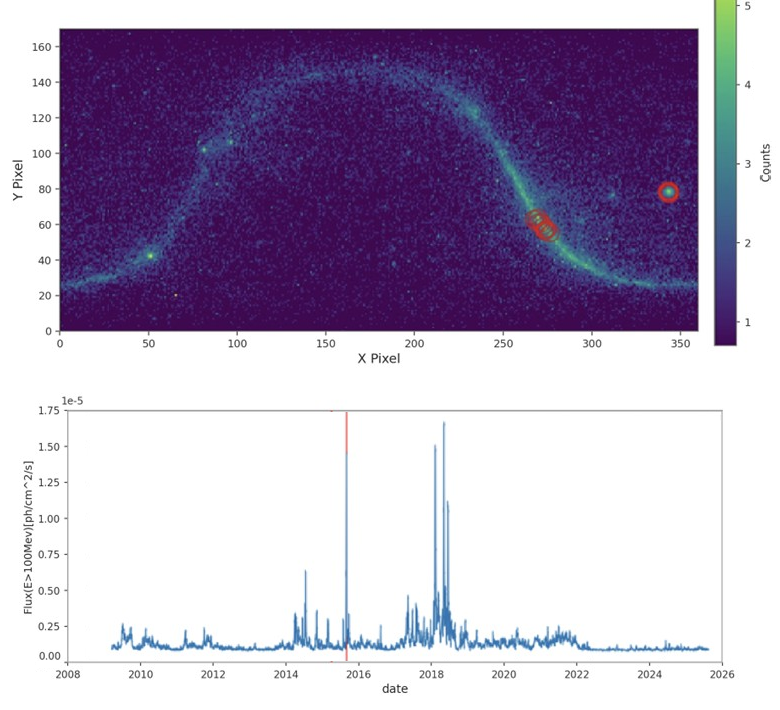
图注：Top panel: True sky with indicated the list of anomalies as red circles with the detection of an anomaly associated to 3C 279 (red circle above the galactic plane). Lower panel: 3C 279 weekly time bin light curve, the vertical red line indicates the time frame relative to the sky analyzed in the top panel.
对应解读：对应“真实数据候选事件的时间序列”、图 6 式候选多日演化，以及候选与已知强变源 3C 279 的关联解读。
入选理由：这是候选图中最直接支撑日报核心判断的一张：同一图内同时给出天空异常位置和 3C 279 周时间 bin 光变曲线，并用红线标出异常发生时刻，可检查异常是否对应真实变源活动，而不只是单日孤立热点。它比单纯全天图或训练损失更能说明 ConvLSTM 输出如何转化为天体物理候选。
来源与置信度：\(arxiv_source\)；high；\(arxiv_source\) / main.tex:figure[5]
Fig04
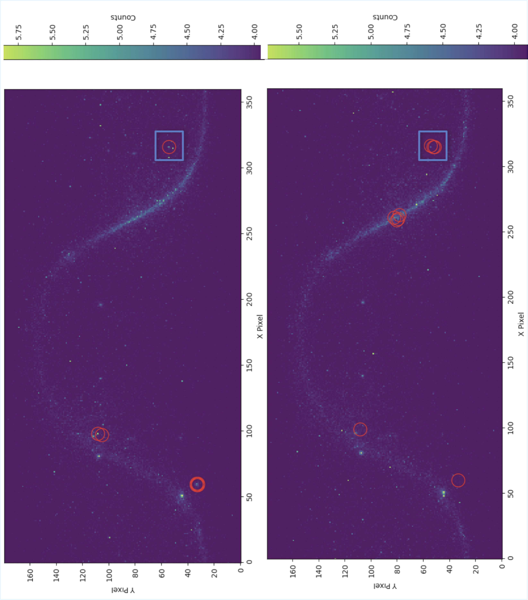
图注：True-sky maps showing the list of anomalies indicated by red circles, while the GRB localization is highlighted by a blue square superimposed on them. Top panel: 2008-09-16 time frame; bottom panel: 2008-09-17 time frame.
对应解读：对应“异常候选图”、图 5 式空间异常分布，以及“候选与伽马暴目录交叉匹配”的诊断。
入选理由：图中用红圈标出异常、蓝方框标出 GRB 定位，并比较 2008-09-16 与 2008-09-17 两个时间帧，最适合检查异常是否局域、是否与 GRB 时间和位置相符，以及是否具有短时瞬变特征。它直接支撑日报关于空间连贯性、已知瞬变交叉匹配和物理解释的讨论。
来源与置信度：\(arxiv_source\)；high；\(arxiv_source\) / main.tex:figure[4]
Fig03
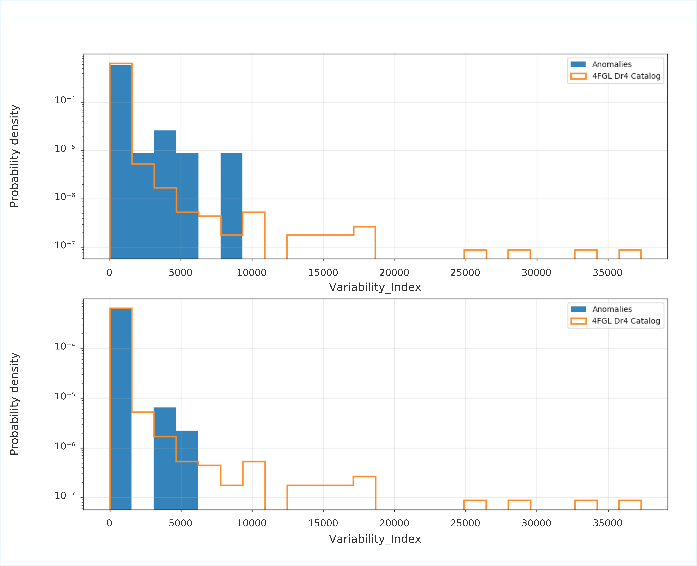
图注：Normalized histograms of Variability_Index variable for sources associated to the output of anomalies showed in step-filled blue superimposed with all 4FGL$-$DR4 catalog sources showed in orange. Top panel: cross correlation radius of 2 degrees; bottom panel: cross correlation radius of 1 degrees
对应解读：对应“候选与已知源或伽马暴目录的交叉匹配表/统计”和已知变源关联分析。
入选理由：该图比较异常关联源与全部 4FGL-DR4 源的 \(Variability_Index\) 分布，并给出 2 度和 1 度两种交叉匹配半径，能检验模型候选是否偏向高变源，而不是随机落在普通目录源附近。它对评估候选的天体物理可信度和匹配半径敏感性很关键。
来源与置信度：\(arxiv_source\)；high；\(arxiv_source\) / main.tex:figure[3]
Fig01
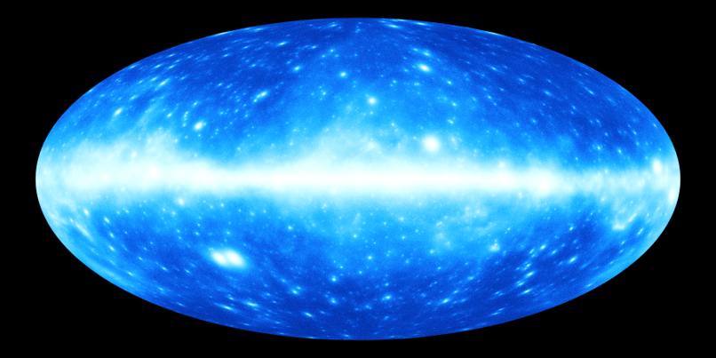
图注：All-sky counts map integrated over the full simulated period ($\sim$10 years) in Galactic coordinates (Mollweide projection). The bright band traces the Galactic diffuse emission, while localized enhancements correspond to simulated point sources.
对应解读：对应“合成 LAT 全天计数图示例”和图 2 式模拟天空结构检查。
入选理由：这是十年模拟全天计数图，展示银道弥散辐射带和模拟点源增强，可用于判断 gtobssim 合成天空是否具备 LAT 类数据的基本空间结构。虽然没有同时展示曝光图或逐日变化，但仍是验证训练输入物理合理性的基础图。
来源与置信度：\(arxiv_source\)；high；\(arxiv_source\) / main.tex:figure[1]
Fig02
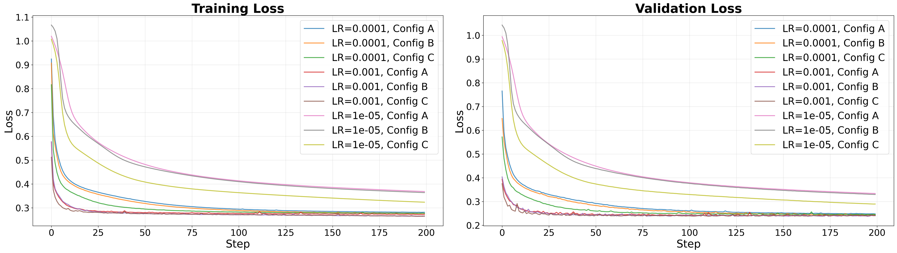
图注：Training loss (left) and validation loss (right) as a function of epoch. The decreasing trends indicate convergence and generalization, while the non-zero floor reflects irreducible counting noise in the counts channel and non-stationary observing conditions encoded in the exposure channel.
对应解读：对应模型训练与拟合段落中 ConvLSTM 参数收敛、训练集和验证集损失表现。
入选理由：训练/验证损失曲线能说明网络优化是否收敛、是否出现明显过拟合，并为后续残差阈值的可靠性提供背景。不过它不展示预测图、残差图、阈值图或候选物理性质，因此相对科学诊断价值低于异常地图和交叉匹配图。
来源与置信度：\(arxiv_source\)；high；\(arxiv_source\) / main.tex:figure[2]
强相关工作
这篇工作与传统 Fermi-LAT 瞬变搜索和源检测方法是互补关系。传统方法以泊松似然、源模型和测试统计量为核心，代表性检索关键词包括 “Fermi LAT transient search likelihood analysis”、 “Fermi LAT Flare Advocate”、 “Fermi LAT GRB catalog” 和 “Fermi LAT source detection TS”。本文则从无标签或弱标签的时空异常检测出发，适合做候选生成和异常排序，但最终仍需要与标准似然分析、源表和多波段信息交叉验证。
在机器学习方向，相关工作可检索 “gamma-ray anomaly detection deep learning”、 “ConvLSTM astronomical time domain”、 “self-supervised anomaly detection sky maps” 和 “Fermi-LAT machine learning transient”。相近思想也出现在光学巡天差分成像、引力波触发候选排序和高能中微子事件分类中。需要注意的张力是：机器学习异常分数追求发现未知偏离，而天体物理发现要求可校准显著性、可复现选择函数和可解释参数；这两者目标相近但并不等价。
基础理论方面，这篇文章依赖的不是新的辐射机制，而是高能计数数据的泊松统计、仪器响应卷积和时空序列建模。建议同时阅读 Fermi Science Tools 文档、LAT 仪器论文、LAT 源表论文以及 ConvLSTM 原始方法论文。若要批判性评估本文，应重点检索仿真到真实数据域适配、异常检测假阳性控制、泊松损失替代均方误差等关键词。
相似工作：
- https://arxiv.org/abs/2605.22112
- https://arxiv.org/abs/1506.04214
基础理论 / 方法工作：
- https://arxiv.org/abs/0902.1089
- https://arxiv.org/abs/1902.10045
- https://fermi.gsfc.nasa.gov/ssc/data/analysis/scitools/
相反观点 / 张力线索：
- https://arxiv.org/abs/0902.1089
- https://fermi.gsfc.nasa.gov/ssc/data/analysis/documentation/
4. Seyfert galaxy targets for KM3NeT neutrino telescope
- 来源：arXiv / astro-ph.HE
- 链接：https://arxiv.org/abs/2605.22336v1
- 作者：A. Neronov, D. Savchenko, M. Poleshchuk
- 评分：novelty 7/10，importance 8/10，relevance 9/10，final 9.05/10
- 推荐理由：面向KM3NeT构建Seyfert高能中微子目标清单，用于独立检验IceCube Seyfert/NGC 1068类信号；明确关联天体源、多信使高能天文学和中微子源搜索，优先级高。
中文题目：适合 KM3NeT 中微子望远镜检验的赛弗特星系目标清单
做了什么：这篇文章把 IceCube 已报告的赛弗特星系中微子信号，转化为一个可由 KM3NeT 独立检验的短目标清单。作者假设赛弗特星系的中微子光度与其内禀硬 X 射线光度成比例，并用 NGC 1068 与 NGC 4151 的 IceCube 谱形作为模板，估算南北天区主要近邻赛弗特星系在 KM3NeT 中的可探测性。结论很直接：若这种 X 射线—中微子标度关系成立，NGC 1068、NGC 4151、NGC 4945 与 Circinus 是最值得优先做点源搜索的四个目标；其中后三个或至少三个涉及康普顿厚遮蔽，使硬 X 射线内禀光度修正成为主要系统误差之一。
为什么重要：IceCube 对 NGC 1068 及赛弗特星系总体的结果若成立，意味着低功率活动星系核可以是高能中微子天空的重要组成，而不仅仅是耀变体或伽马射线明亮源。KM3NeT 位于北半球海底，对南天源有优良视场与角分辨能力，正好能检验 IceCube 对北天更敏感所留下的样本偏置。该文的重要性不在于提出复杂新模型，而在于把一个宽泛的“赛弗特星系群体信号”压缩成低试验因子的、可执行的目标列表。
理论 / 观测 / 仪器方法价值：对观测而言，这篇文章给 KM3NeT 提供了一个先验目标清单，可用于优化点源搜索、堆叠分析和试验因子控制。对理论而言，它把中微子产生与内禀硬 X 射线辐射联系起来，强调核区宇宙线加速、遮蔽环境和辐射场密度之间的关系。对方法而言，论文展示了如何从 IceCube 模板源外推到其他活动星系核，并把不确定性集中到距离、硬 X 射线吸收修正、谱形假设和探测器有效面积上。
为什么应该关注：如果你关心高能中微子的源族鉴别，这篇文章值得看，因为它告诉你未来几年 KM3NeT 最可能在哪些具体天体上给出“确认或否定”。如果你做活动星系核物理，它提醒你：康普顿厚核区可能并非只是电磁观测的麻烦，也可能是强子相互作用和中微子产生的关键环境。如果你做数据分析，它是一个很好的案例：通过物理先验缩小搜索空间，牺牲一点模型无关性，换取显著性和解释力。
展开详细解读：文章讲解、背景、理论、重点章节、图表与相关工作
文章详细讲解
科学问题：IceCube 已经在 NGC 1068 方向发现显著的高能中微子超额，并有工作声称赛弗特星系群体在缪子中微子通道中出现可统计检出的信号。但 IceCube 的缪子轨迹分析对北天源尤其敏感，而许多近邻、明亮、被遮蔽的活动星系核位于南天。核心问题是：如果赛弗特星系确实按某种活动星系核功率标度产生中微子，KM3NeT 应该优先盯哪些源，才能以最小试验因子独立检验这个源族假说。
作者怎么做：论文采用了一个有意简化但可操作的假设，即源的中微子光度随内禀硬 X 射线光度标度。硬 X 射线被当作活动星系核中心引擎功率的近似代理，而不是用观测到的软 X 射线或伽马射线通量直接排序，因为这些波段更容易受吸收、喷流选择效应或再处理影响。作者用 NGC 1068 与 NGC 4151 的 IceCube 数据所对应的中微子谱作为模板，然后把模板按各候选赛弗特星系的内禀硬 X 射线光度和距离缩放，估计到达地球的中微子通量，再结合 KM3NeT 的天空覆盖和灵敏度判断哪些源可检出。
关键结果：在这种标度假设下，最突出的目标不是一个很长的目录，而是四个源：NGC 1068、NGC 4151、NGC 4945 与 Circinus。NGC 1068 是 IceCube 已报告的代表性源，自然是基准；NGC 4151 是近邻、硬 X 射线明亮且被用作另一种谱模板的源；NGC 4945 与 Circinus 位于南天且足够近、内禀活动星系核功率高，对 KM3NeT 尤其关键。作者强调，这个短清单的意义是降低多目标搜索中的试验因子，使 KM3NeT 可以在相对清晰的统计框架下做独立检验。
局限和下一步：最大局限来自两层外推。第一，硬 X 射线光度是否真的与中微子光度线性相关仍未被证实；它可能取决于核区气体柱密度、黑洞质量、吸积率、日冕结构、磁场和宇宙线禁闭时间。第二，NGC 1068 和 NGC 4151 的中微子谱形是否能代表其他赛弗特星系也未知，尤其是康普顿厚源的真实内禀 X 射线光度存在较大系统误差。下一步应是 KM3NeT 对这四个源进行预注册式点源或堆叠搜索，并在有足够曝光后检验通量排序、谱指数和能量截止是否与硬 X 射线标度一致。
背景知识
赛弗特星系是近邻宇宙中最常见的活动星系核类型之一，通常没有强烈指向地球的相对论喷流，因此过去在高能中微子源讨论中常被耀变体、伽马暴和星暴星系盖过。NGC 1068 的 IceCube 结果改变了这个局面：一个伽马射线并不极端明亮、但核区被强烈遮蔽的赛弗特星系，可能有相当强的中微子输出。这迫使人们重新考虑活动星系核日冕、盘风、遮蔽环或核星暴区中的强子加速。
历史上，活动星系核中微子模型常分成几类：喷流内的光强子过程、吸积盘和日冕附近的光强子过程、核区气体中的质子—质子碰撞、以及更大尺度星暴或外流中的强子相互作用。赛弗特星系的困难在于，它们通常没有耀变体那样显眼的非热喷流信号；但优势是核区辐射场和气体密度很高，可以为宇宙线提供高相互作用效率。高能中微子一旦逃出，能直接穿过遮蔽物质，因此可能揭示电磁波看不清的核区过程。
观测背景上，IceCube 位于南极，利用地球屏蔽大气缪子时，对来自北天的上行缪子中微子有很强的点源能力；南天源的高能分析则要面对更强的大气缪子背景和能量阈值问题。KM3NeT 位于地中海，几何上与 IceCube 互补，对南天源有长时间上行可见窗口，特别适合检验 NGC 4945、Circinus 这类南天近邻活动星系核。也就是说，若 IceCube 的赛弗特信号不是偶然涨落，KM3NeT 应该能在不同系统误差和不同天空区域给出关键交叉验证。
为什么现在值得重新看：一方面，IceCube 对 NGC 1068 的点源发现把赛弗特星系从“理论上可能”推到“观测上可检验”；另一方面，KM3NeT 正进入能对天体中微子源进行竞争性搜索的阶段。此时建立先验目标清单非常重要，因为盲搜天空会产生巨大的试验因子，而完全后验地挑选源又容易引入统计偏差。
该领域常见误区之一是把伽马射线暗弱等同于中微子暗弱。对康普顿厚或高辐射密度核区来说，伴随强子过程产生的高能伽马射线可能在源内被吸收并级联到低能，而中微子可以自由逃逸。另一个误区是把观测硬 X 射线通量直接当作内禀功率；对于康普顿厚源，柱密度和反射模型会显著改变内禀硬 X 射线光度估计，从而直接影响中微子通量预测。
基础理论 / 方法脉络
物理图像可以从活动星系核中心区域开始。超大质量黑洞吸积释放引力能，形成紫外—X 射线辐射场、热电子日冕、遮蔽尘气环以及可能的盘风或弱喷流。如果其中有质子或原子核被加速到高能，它们会与核区光子或气体碰撞，产生带电和中性介子。带电介子衰变给出中微子，中性介子衰变给出伽马射线；但在高密度辐射场中，伽马射线更容易被吸收，中微子则保留了强子过程的直接信息。
本文不试图建立完整的核区加速模型，而采用经验标度：中微子光度与内禀硬 X 射线光度相关。这个假设背后的直觉是，硬 X 射线来自靠近中心引擎的日冕或再处理辐射，能够追踪吸积功率；若宇宙线加速功率占吸积功率的比例在同类赛弗特星系中大致相近，中微子输出就应与硬 X 射线输出同阶标度。这里的关键不是证明线性关系，而是把它作为可检验的观测预测。
关键量包括源距离、内禀硬 X 射线光度、候选中微子谱模板、探测器有效面积、观测时间和背景率。对点源搜索来说，真正进入显著性的不是总光度本身，而是折算到地球的能量微分通量以及该通量在 KM3NeT 有效面积上的卷积。由于中微子探测概率随能量强烈变化，谱形的硬软会显著改变可探测性；同样的积分能量通量，硬谱源通常更容易在高能背景较低区间被检出。
仪器和统计逻辑上，KM3NeT 主要通过切伦科夫光重建中微子诱发的缪子轨迹。轨迹事件角分辨较好，适合点源搜索；但事件数少、背景来自大气中微子和误重建大气缪子，所以需要非平凡的似然分析。一个短的先验目标清单可以减少在天空位置、源列表和谱参数上反复扫描带来的后验惩罚，这是本文方法价值的核心之一。
主要退化关系来自两个方向。天体物理上，硬 X 射线内禀光度、吸收柱密度、反射成分和源几何之间退化明显，特别是康普顿厚源。统计上，中微子谱归一化与谱指数、能量截止和有效面积系统误差会互相补偿；当事件数很低时，一个高能事件就可能显著改变最佳拟合谱形。因此读者应把论文给出的四源清单理解为“在当前模板和标度下最有希望检验的目标”，而不是对真实中微子光度的精确排序。
公式与推导
第一步是把中心引擎功率与可观测硬 X 射线联系起来。若某赛弗特星系的内禀硬 X 射线光度为 \(L_{\rm X}\)，假设中微子总光度按幂律标度为
这里 \(\eta_{\nu}\) 是在参考光度 \(L_{{\rm X},0}\) 处的中微子产生效率，\(s=1\) 对应本文主要使用的线性标度。这个式子表达的不是微观必然律，而是把候选源按内禀活动星系核功率排序的经验模型。
第二步是把模板源外推到目标源。若模板源为 \(0\)，其距离为 \(d_0\)、内禀硬 X 射线光度为 \(L_{{\rm X},0}\)、微分中微子通量为 \(\Phi_{\nu,0}(E)\)，则目标源 \(i\) 的地球处通量可写成
其中 \(E\) 是中微子能量，\(d_i\) 是目标源距离。这个方程是论文预测清单的骨架：近而硬 X 射线内禀明亮的源会排在前面。
第三步需要指定谱形。点源中微子模板通常可写成幂律或带截止幂律，例如
这里 \(\Phi_0\) 是枢轴能量 \(E_{\rm piv}\) 处的归一化，\(\gamma\) 是谱指数，\(E_{\rm cut}\) 是可能的截止能量。NGC 1068 型模板和 NGC 4151 型模板的差别会通过 \(\gamma\) 与 \(E_{\rm cut}\) 改变 KM3NeT 的预期事件数。
第四步是把通量转化为探测事件数。对观测时间 \(T\)，KM3NeT 在源方向 \(\Omega_i\) 的有效面积为 \(A_{\rm eff}(E,\Omega_i)\)，预期信号数为
这个式子说明为什么天空位置重要：同一通量的源，由于可见时间、地球吸收、重建质量和探测器几何不同，\(A_{\rm eff}\) 会不同。
第五步是背景估计。若在角窗口 \(\Delta\Omega\) 和能量范围内的大气背景微分率为 \(b(E,\Omega_i)\)，预期背景数可近似写成
其中 \(R(\psi\mid E)\) 是角响应或点扩散函数，\(\psi\) 是事件与源方向的角距离。角分辨越好，\(\Delta\Omega\) 内背景越低，点源搜索越有利。
第六步是似然。对第 \(j\) 个事件的方向和能量观测量 \(x_j\)，未分箱点源似然常写成
其中 \(n_s\) 是拟合信号事件数，\(S_j\) 是源信号概率密度，\(B_j\) 是背景概率密度，\(N\) 是总事件数。该式连接了源通量预测与实际显著性评估。
第七步用检验统计量衡量是否有源信号。常见形式为
其中 \(\hat n_s\) 与 \(\hat\gamma\) 是最大似然估计。若源清单在分析前固定，显著性校正只需针对少数目标，而不是整个天空扫描。
第八步是理解试验因子。若单个目标的局部 \(p\) 值为 \(p_{\rm local}\)，对 \(N_{\rm trial}\) 个近似独立目标的全局 \(p\) 值可近似为
这正是四源清单的统计意义：把 \(N_{\rm trial}\) 从大量活动星系核或全天天区压缩到 \(4\)，可以显著提高一个真实弱信号的发现效率。
第九步是康普顿厚源的系统误差。观测到的硬 X 射线通量 \(F_{\rm X,obs}\) 与内禀通量 \(F_{\rm X,int}\) 可用吸收修正因子表示为
这里 \(N_{\rm H}\) 是氢柱密度，\(\theta\) 表示几何或视向参数，\(C_{\rm abs}\) 依赖反射和透射模型。因为 \(\Phi_{\nu,i}\) 随 \(L_{{\rm X},i}\) 缩放，\(C_{\rm abs}\) 的误差会几乎直接传播到预期中微子事件数。
模型拟合 / 应用方法
这类工作的拟合对象可以分成两层。第一层是电磁侧的内禀硬 X 射线光度估计，需要从观测谱中分离吸收、反射、散射和可能的星暴贡献。对于康普顿薄源，简单吸收幂律模型可能已经足够；对于 NGC 1068、NGC 4945 和 Circinus 这样的康普顿厚源，内禀光度强烈依赖环面几何、柱密度分布和反射模型，因此必须把电磁侧系统误差作为中微子预测的不确定性源。
第二层是中微子侧的谱模板拟合。论文采用 NGC 1068 或 NGC 4151 对应的 IceCube 谱作为模板，本质上固定或半固定了谱指数、归一化和可能的能量尺度，再按硬 X 射线光度与距离缩放。真正进入 KM3NeT 搜索时，常见做法会是以源位置固定、谱指数可固定或可扫描的未分箱似然，拟合信号事件数 \(n_s\) 并计算检验统计量。若目标清单事先确定，最终显著性只需对四个源或少数模板做校正。
参数退化非常关键。中微子归一化与谱指数之间存在明显退化：较软的谱可以在低能给出较多事件，但更容易被大气背景淹没；较硬的谱在高能区背景少，却可能因为事件数太低而统计不稳定。源距离误差通常不是主导，但内禀硬 X 射线光度、康普顿厚修正、模板谱形和 KM3NeT 有效面积系统误差会共同决定预期事件数范围。
残差诊断不能只看总事件数。一个可信的点源信号应在方向残差上集中于源点扩散函数内，在能量分布上比背景更硬，并且在不同重建质量或事件选择下保持稳定。如果某个候选源的超额主要来自少数低能、角距离较大的事件，那么即使最大似然给出非零 \(n_s\)，物理解释也应谨慎。相反，如果少数高能事件方向良好且与模板谱一致，它们会对显著性有较大贡献。
模型可能失败的方式包括：中微子光度并不随硬 X 射线线性标度；中微子主要来自星暴环而非活动星系核核区；康普顿厚源的内禀 X 射线光度被高估或低估；或者 NGC 1068 本身是特殊个例，不代表赛弗特总体。因此实际应用时，四源清单最好同时用于单源搜索和联合堆叠搜索：单源搜索检验个体强源，堆叠搜索检验源族标度关系。
重点章节 / 结果段落怎么读
数据和样本部分应重点看作者如何定义赛弗特星系候选目录，以及哪些硬 X 射线目录或内禀光度估计被采用。读者需要特别留意康普顿厚源的处理，因为这直接决定 NGC 4945 和 Circinus 的排序是否稳健。
方法部分的核心是中微子通量缩放。应检查作者如何从 NGC 1068 与 NGC 4151 的 IceCube 谱模板出发，按硬 X 射线光度和距离外推到其他源。这里要问两个问题：谱形是否固定，归一化如何定义，以及是否考虑不同源之间可能的吸积态差异。
结果部分应看可探测源清单是怎样产生的。最重要的结论是四个目标 NGC 1068、NGC 4151、NGC 4945 和 Circinus，而不是一个长表。读者应检查其他近邻明亮活动星系核为什么落选：是距离太远、内禀硬 X 射线较弱、KM3NeT 视场不利，还是模板假设导致预期事件数不足。
讨论部分应重点读不确定性。作者明确讨论了 NGC 1068、NGC 4945 和 Circinus 的康普顿厚性质，这会影响硬 X 射线内禀光度和中微子预测。还应关注他们如何看待 IceCube 与 KM3NeT 的互补性，以及短清单降低试验因子的统计价值。
如果论文有表格或附录，建议把源的距离、硬 X 射线光度、预测中微子通量和 KM3NeT 可探测性指标逐项核对。对这类目标选择论文，附表往往比文字结论更能显示结论是否由少数假设驱动。
建议重点查看的图表
-
候选赛弗特星系的硬 X 射线光度—距离或通量排序图：应看四个入选源是否明显高于其他源，还是只在误差条内略有优势。
-
预测中微子通量谱图：应比较 NGC 1068 模板与 NGC 4151 模板在 KM3NeT 敏感能区内的差别，尤其是高能端斜率和截止是否主导可探测性。
-
KM3NeT 灵敏度或发现潜力曲线与源预测通量的叠图：应看预测曲线是在灵敏度之上、接近边界，还是需要乐观系统误差才能被检出。
-
源天空位置图：应看四个目标相对 KM3NeT 可见天空、赤纬和上行事件窗口的位置，理解为什么南天近邻源特别重要。
-
康普顿厚源的硬 X 射线内禀光度不确定性表：应看 \(N_{\rm H}\)、反射模型和内禀光度区间是否足以改变目标排序。
-
试验因子或目标数对显著性的影响诊断：若有，应看从全目录缩小到四源清单后，全局显著性改善有多大。
关键图表逐图导读
图 1：如果论文给出源样本的天空分布图，横轴通常是赤经，纵轴是赤纬，点的大小或颜色可能表示内禀硬 X 射线光度或预测中微子通量。读图时应关注 NGC 1068、NGC 4151、NGC 4945 与 Circinus 是否处在 KM3NeT 有利的可见区域。陷阱是不要把天空位置图误读为显著性图；它只说明几何可见性和候选分布。
图 2：若有硬 X 射线光度与距离或预测通量排序图，横轴可能是源名、距离或 \(L_{\rm X}/d^2\)，纵轴为预测通量代理量。关键是看四个目标是否在排序上形成清晰头部。如果误差条很大，尤其是康普顿厚源的内禀光度修正很大，那么目标排序应理解为模型依赖结论。
图 3：若有中微子能谱模板图，横轴应为中微子能量，纵轴为能量加权通量，例如 \(E^2\Phi_\nu\)。数据点或阴影区可能来自 IceCube 对 NGC 1068 或 NGC 4151 的谱约束，模型线则是缩放到其他源后的预测。读图重点是 KM3NeT 敏感区内曲线高度，而不是低能或极高能处外推得多远。
图 4：若有 KM3NeT 灵敏度对比图，横轴通常为能量或源赤纬，纵轴为通量灵敏度或发现通量。应看每个源的预测通量相对于灵敏度曲线的位置，以及采用 NGC 1068 模板和 NGC 4151 模板时结论是否一致。陷阱是灵敏度曲线通常依赖曝光时间、事件选择和假设谱指数，不能跨分析配置直接比较。
图 5：若有康普顿厚不确定性相关表图，应检查 \(N_{\rm H}\)、内禀 \(L_{\rm X}\) 和反射主导程度。对 NGC 4945 和 Circinus，这些修正可能把预测事件数移动一个显著比例，因此读者应把它当作系统误差核心，而不是边缘注释。
图 6：若论文展示了预期事件数或显著性随观测时间变化的图，横轴通常为 KM3NeT 曝光时间，纵轴为 \(\mu_s\)、检验统计量或发现概率。关键是看四个源中哪些能在现实曝光时间内达到可检验水平，哪些只是长期累积后可能接近阈值。
论文原图 / 可嵌入图片
Fig01
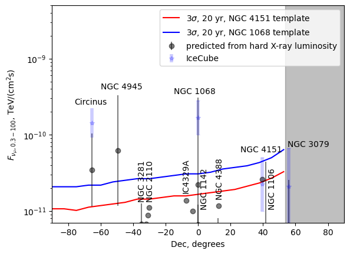
图注：Expected neutrino flux from Seyfert galaxies in $0.3-100$~TeV energy range, estimated from Eq.~\(\ref{eq:fnu}.\) Vertical bars indicate uncertainties derived from uncertainties of measurements of intrinsic luminosity for Compton-thick sources. Red and blue lines show KM3Net $3\sigma$ detection thresholds for 20 years of exposure for two different spectral templates discussed in the text. Gray shading shows the visibility constraint of KM3NeT in the track observation mode.
对应解读：对应“建议重点查看的图表”中的硬 X 射线标度后的预测中微子通量排序、KM3NeT 灵敏度/发现阈值叠图、天空可见性约束，以及康普顿厚源内禀光度不确定性；也对应关键图表导读中的图 2、图 3、图 4 和图 5 的核心内容。
入选理由：这是全文最关键的综合诊断图：同时给出赛弗特星系在 0.3–100 TeV 的预期中微子通量、康普顿厚源由内禀光度测量带来的误差条、两种谱模板下 KM3NeT 20 年 3σ 检出阈值，以及 track 模式可见性灰区。它直接支撑日报关于四个目标源为何被筛出、NGC 1068/NGC 4151 模板差异是否影响可探测性、NGC 4945 与 Circinus 的系统误差是否会改变排序、以及 KM3NeT 是否能独立验证 IceCube 赛弗特信号的主要解读。
来源与置信度：\(arxiv_source\)；high；\(arxiv_source\) / jheap.tex:figure[1]
Fig02
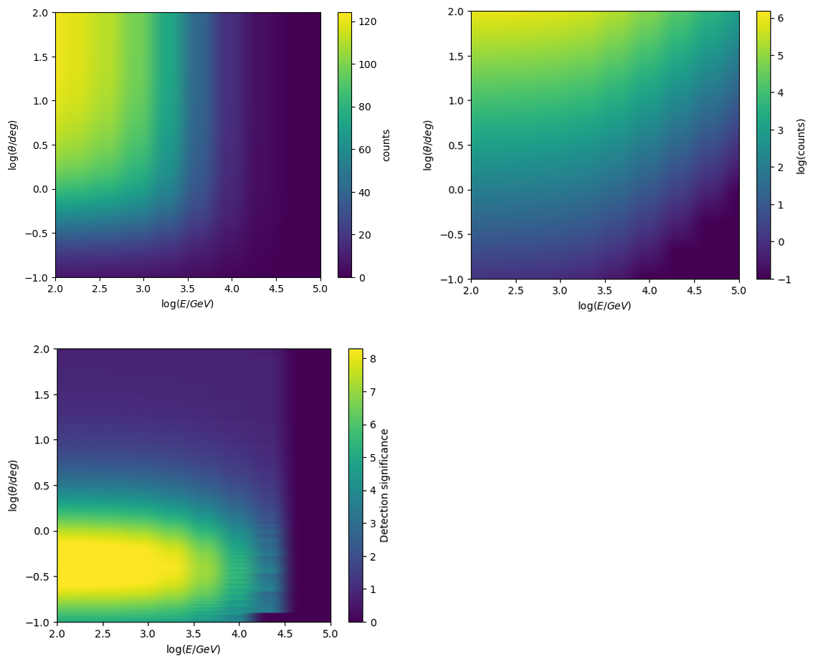
图注：Left: cumulative source counts for NGC~1068 ($\epsilon=1$ template) as a function of energy threshold $E$ and radius of the signal extraction circle $\theta$. Middle: cumulative background counts in the same representation. Right: Detection significance in the same representation.
对应解读：对应“建议重点查看的图表”中的预期事件数或显著性诊断，也对应关键图表导读图 6 以及模型拟合段落中关于信号事件数、背景、角半径、能量阈值和检出显著性的讨论。
入选理由：该图虽然只针对 NGC 1068 模板情形，但提供了比总通量更接近实际点源搜索的统计量：随能量阈值和信号提取角半径变化的累计信号数、背景数和检出显著性。它有助于解释日报中强调的不能只看总事件数，而要看能量选择、方向窗口和背景抑制如何共同决定 KM3NeT 检出能力；科学价值低于 Fig01，但可作为搜索策略和显著性形成机制的补充图。
来源与置信度：\(arxiv_source\)；high；\(arxiv_source\) / jheap.tex:figure[2]
强相关工作
这篇工作直接连接到 IceCube 对 NGC 1068 的点源结果，以及随后关于赛弗特星系群体是否贡献弥散天体中微子背景的讨论。相似工作通常会以 NGC 1068 为模板，比较活动星系核日冕模型、遮蔽核模型、星暴核区模型和弱喷流模型。建议检索关键词包括 “IceCube NGC 1068 neutrino source”、“Seyfert galaxies neutrino emission”、“AGN corona neutrinos” 和 “Compton-thick AGN neutrinos”。
基础理论方面，应把这篇文章放在活动星系核强子模型和中微子点源统计分析的交叉处看。它没有解决宇宙线在哪里加速的问题，而是提出一个可被 KM3NeT 快速检验的经验目标选择方案。相反观点主要包括：NGC 1068 可能是特殊源；中微子信号可能来自核星暴而非活动星系核；硬 X 射线光度可能不是中微子光度的好代理；以及 IceCube 的赛弗特群体相关性可能受样本选择或后验试验影响。检索关键词可用 “NGC 1068 starburst neutrino alternative”、“IceCube Seyfert stacking analysis trial factor”、“hard X-ray luminosity neutrino correlation AGN”。
相似工作：
- https://arxiv.org/abs/2211.09972
- https://www.science.org/doi/10.1126/science.abg3395
- https://arxiv.org/abs/2209.07361
基础理论 / 方法工作：
- https://arxiv.org/abs/1304.5356
- https://arxiv.org/abs/1807.08816
- https://arxiv.org/abs/1911.02561
相反观点 / 张力线索：
- https://arxiv.org/abs/2307.03093
- https://arxiv.org/abs/2308.06068
5. Quasi-Simultaneous Broadband Spectral Energy Distributions of a Sample of Fermi Blazars -- I. Correlation Results
- 来源：arXiv / astro-ph.HE
- 链接：https://arxiv.org/abs/2605.22179v1
- 作者：Yi Zhong, Zhujian Wan, Rui Xue, Hubing Xiao, Dingrong Xiong, Ze-Rui Wang
- 评分：novelty 7/10，importance 7/10，relevance 10/10，final 9.05/10
- 推荐理由：构建93个Fermi blazar的准同时多波段SED并分析峰参数、blazar sequence和GeV能段时滞，多波段伽马射线AGN研究高度相关；样本研究虽非突破性，但实用价值较高。
中文题目：Quasi-Simultaneous Broadband Spectral Energy Distributions of a Sample of Fermi Blazars -- I. Correlation Results
做了什么：本篇论文已通过推荐筛选，但自动详细解读生成失败。可先根据题目和摘要判断阅读优先级：Blazars' non-thermal emission shows rapid variability across all wavelengths, so spectral energy distributions (SEDs) built from quasi-simultaneous data are crucial for revealing the jets physical properties. In this work, we construct quasi-simultaneous broadband SEDs for 93 Fermi blazars (56 FSRQs, 35 BL Lacs, and 2 blazar candidates of uncertain type), fit both peaks with cubic functions to allow for potential asymmetries, and examine correlations among key parameters. Our main results are summarized as follows: (1) We find that synchrotron peak frequency and curvature are only weakly related, suggesting that charged particles are accelerated by mixed acceleration mechanism. (2) The blazar sequence is confirmed in the observer's frame through negative correlations of both the bolometic luminosity $\log L_{\rm bol}$ and the Compton dominance $\log Y$ with the synchrotron peak frequency $\log ν_{\rm syn}^{\rm peak}$. After correcting for Doppler boosting, a weak positive correlation emerges between $\log L_{\rm bol}$ and $\log ν_{\rm syn}^{\rm peak}$. FSRQs and BL Lacs exhibit distinct correlation patterns within the blazar sequence, indicating differences in cooling mechanisms. (3) Using variability time lags between 0.1-1 GeV and 1-300 GeV light curves, we estimate lower limits of Doppler factors for 4 sources, providing a jet-speed diagnostic anchored directly to the $γ$-ray emission zone.
为什么重要：这篇论文在今日候选中通过了本地推荐阈值，说明它与当前高能天体物理兴趣方向或质量标准较匹配；详细内容建议优先查看原文摘要、结论和图表。
理论 / 观测 / 仪器方法价值：由于 LLM 摘要 JSON 解析失败，本节保留为安全占位，不编造论文未确认的公式、图号或链接。
为什么应该关注：日报仍保留这篇论文，是为了避免单篇摘要失败导致整份日报缺失。请把它作为需要人工快速复核的高优先级候选。
展开详细解读：文章讲解、背景、理论、重点章节、图表与相关工作
文章详细讲解
本文的科学问题可以概括为三个层次。第一，准同时宽波段 SED 能否给出比非同时档案 SED 更可靠的双峰参数？第二，这些参数之间是否支持经典耀变体序列，即 \(L_{\rm bol}\) 和康普顿优势 \(Y\) 随 \(\nu_{\rm syn}^{\rm peak}\) 升高而降低？第三，在考虑多普勒增强后，观测到的序列是否仍然是内禀物理序列，还是主要由喷流指向和速度造成？摘要给出的结果表明：观测者框架中序列被确认，但多普勒修正后 \(\log L_{\rm bol}\) 与 \(\log\nu_{\rm syn}^{\rm peak}\) 反而出现弱正相关，这一点是全文最值得仔细核查的张力结果。
方法上，作者为 93 个 Fermi 耀变体构建准同时 SED，并分别对同步峰和逆康普顿峰用三次函数拟合。三次函数的优点是可允许峰两侧不对称，而传统二次抛物线在 \(\(\log\nu-\log\)
u \(F_\nu\)) 空间默认峰形近似对称，可能低估峰位置和曲率的不确定性。应重点检查作者是否在拟合前将所有数据统一到相同宇宙学、是否做了红移和 K 修正、是否区分 flux SED 与 luminosity SED、是否给出了峰参数误差传播，以及是否对 SED 采样稀疏的源设置质量标记。
关键结果之一是同步峰频率与曲率只有弱相关。若电子加速由单一随机加速过程控制，常会预期峰频率与谱曲率之间存在较清晰的反相关或相关趋势，因为更高效的加速可产生更宽的电子能谱并把峰推到更高频率。但弱相关说明样本中可能存在混合机制：不同源的磁场、多普勒因子、冷却环境、注入历史和多辐射区叠加共同决定峰形。读者应检查该弱相关是否在 FSRQ 和 BL Lac 子样本中一致，是否受峰频率分类，即 LSP/ISP/HSP，或受数据点数量影响。
另一个核心结果是耀变体序列在观测者框架中体现为 \(\log L_{\rm bol}\) 与 \(\log Y\) 对 \(\log\nu_{\rm syn}^{\rm peak}\) 的负相关。这里的读法应非常谨慎：\(L_{\rm bol}\) 依赖距离和多普勒增强，\(Y\) 依赖两峰峰值或积分光度比，而 \(\nu_{\rm syn}^{\rm peak}\) 本身也受 \(\delta\) 蓝移。若所有量都含有 \(\delta\) 或红移选择效应，相关性显著不等于内禀因果关系。摘要中提到多普勒修正后 \(\log L_{\rm bol}\) 与 \(\log\nu_{\rm syn}^{\rm peak}\) 转为弱正相关，这提示低峰高光度的经典图像至少部分可能来自观测增强、外部冷却和样本选择的共同作用。
FSRQ 与 BL Lac 的不同相关模式应作为物理讨论的重点。FSRQ 的强外部辐射场可增强 EC 分量并提高 \(Y\)，同时通过辐射冷却降低高能电子峰值；BL Lac，尤其 HSP BL Lac，外部场弱，SSC 或同步辐射尾更显著，峰频率可更高。若论文显示两类源在同一参数平面占据不同区域，读者应区分“类别间差异造成的总体序列”和“每类内部的连续演化”。这可以通过分类型相关、偏相关、分层回归或重采样检验来判断。
局限性方面，本文是“I. Correlation Results”，说明其重点是经验相关而非完整辐射模型拟合。三次函数不能直接给出磁场、电子谱指数、辐射区大小和能量密度；康普顿优势也不能唯一判别 SSC/EC。γ 射线滞后给出的多普勒因子下限只适用于 4 个源，统计代表性有限。下一步最自然的修复是：对同一样本做一/多区 leptonic SED 建模，与经验峰参数交叉验证；用分层贝叶斯模型同时处理测量误差、红移、分类和多普勒因子缺失；用模拟注入恢复实验评估三次函数峰参数在稀疏 SED 中的偏差。
背景知识
耀变体是活动星系核中喷流几乎指向视线方向的一类源，其观测辐射被相对论性多普勒增强显著放大。它们的宽波段谱能量分布通常呈现双峰结构：低能峰从射电到光学/紫外或 X 射线，通常归因于喷流中相对论电子的同步辐射；高能峰从 X 射线到 GeV/TeV γ 射线，通常解释为逆康普顿辐射，种子光子可以来自喷流自身的同步光子场，也可以来自吸积盘、宽线区或尘埃环等外部辐射场。本文研究对象是 93 个 Fermi 耀变体，包括 56 个 FSRQ、35 个 BL Lac 和 2 个类型不确定候选体，核心目标不是对单个源做精细物理建模，而是用准同时宽波段 SED 的峰参数做群体相关性研究。
历史上“耀变体序列”是该领域最有争议也最常用的经验框架之一。经典图像认为从高光度 FSRQ 到低光度 BL Lac，同步峰频率逐渐升高，而总辐射光度和康普顿优势降低；这被解释为强外部辐射场导致的强冷却会把电子能谱峰推向较低能量。问题在于，这个序列可能混入了样本选择效应、红移不完备、非同时数据拼接、不同活动态比较、以及多普勒因子差异。因此，使用准同时 SED 数据重新检查峰频率、峰光度、曲率、康普顿优势之间的相关性，是判断“序列”究竟是物理序列还是观测偏差的重要步骤。
本文题目中的“quasi-simultaneous”非常关键。耀变体在射电、光学、X 射线和 γ 射线波段均可快速变源，如果把多年档案中的非同时测量简单拼成一条 SED，得到的峰频率、峰光度和两峰比值可能对应不同喷流状态，进而制造虚假相关或抹平真实相关。准同时 SED 的价值在于尽量让两个辐射峰代表同一活动态下的粒子分布和辐射环境。不过，准同时不等于严格同时：不同波段观测窗口、γ 射线积分时间、射电响应滞后、宿主星系污染和吸收修正都会留下系统误差，阅读时要检查作者如何定义时间窗口以及如何处理缺测波段。
还需要避免一个常见误区：用三次函数拟合 SED 双峰并不等于作者已经采用了某个唯一的辐射机制模型。三次函数主要是经验参数化工具，用来在 \(\log \nu-\log \nu F_\nu\) 平面估计峰频率、峰值、曲率或非对称性；它比简单抛物线更灵活，但物理解释也更间接。若论文报告同步峰频率和曲率只有弱相关，这不能直接推出某一种单一加速机制被证实，而更合理的表述是：简单单机制、单参数控制的图像不足以解释全部样本，可能需要随机加速、激波加速、磁重联、冷却和多区叠加共同作用。
本文还有一个值得单独关注的点：作者使用 0.1–1 GeV 与 1–300 GeV 光变曲线之间的时间滞后来估计 4 个源的多普勒因子下限。这类约束直接锚定 γ 射线辐射区，比从射电 VLBI 表观速度或一日尺度变源亮温推断多普勒因子更接近高能辐射区；但它通常只给下限，并且强烈依赖滞后测量的显著性、光变采样、能带选择、辐射区尺寸假设和 γγ 吸收或冷却时标解释。
基础理论 / 方法脉络
理解本文首先要从喷流的相对论增强开始。喷流等离子体以洛伦兹因子 \(\Gamma\) 运动，视线夹角 \(\theta\) 很小时，多普勒因子 \(\delta=[\Gamma(1-\beta\cos\theta)]^{-1}\) 可显著大于 1。观测频率、时间尺度和光度分别被蓝移、压缩和增强，因此同一个本征电子分布在不同 \(\delta\) 下会出现在不同的观测峰频率和峰光度位置。本文在讨论观测者框架中的耀变体序列以及多普勒修正后的相关性时，正是在区分“喷流动力学投影效应”和“内禀辐射物理差异”。
同步辐射峰由电子能谱、磁场强度和多普勒因子共同决定。若辐射区中电子洛伦兹因子为 \(\gamma\)，磁场为 \(B\)，则特征同步频率近似随 \(\nu_{\rm syn}\propto \delta B\gamma^2/(1+z)\) 缩放。同步峰频率因此不是一个纯粹的粒子加速指标；它也受磁场、冷却强度、红移、多普勒因子和 SED 拟合方式影响。本文报告同步峰频率与曲率弱相关，读者应把它理解为对“能谱形状是否由单一加速参数控制”的统计检验，而不是直接从一条相关线反推出完整加速理论。
高能峰通常由逆康普顿过程产生。若种子光子来自同步辐射本身，则称为 SSC；若来自宽线区、尘埃环、吸积盘或其他外部场，则称为 EC。FSRQ 往往具有强发射线和较强外部辐射场，电子冷却更强，康普顿优势 \(Y\) 通常较大；BL Lac 的外部场较弱，尤其高同步峰 BL Lac 可表现出较高 \(\nu_{\rm syn}^{\rm peak}\) 和较低 \(Y\)。因此，本文把 FSRQ 与 BL Lac 分开比较相关性是必要的，因为把两类源混在一起可能得到由分类差异驱动的总体相关，而非每类内部的连续物理关系。
本文的观测量大体包括两峰的峰频率、峰值 luminosity 或 flux、玻尔ometric luminosity、曲率/非对称性参数、康普顿优势以及 γ 射线能带滞后。经验三次函数拟合可以在 \(x=\log\nu\)、\(y=\log(\nu F_\nu)\) 空间描述峰附近的非对称形状，峰位置由一阶导数为零给出，曲率由二阶导数刻画。相关性分析则应关注 Spearman 或 Kendall 等非参数秩相关、红移共同距离效应、分类控制、以及多普勒修正前后斜率和显著性的变化。
关键系统误差包括：非同时性残余造成峰值偏移；光学波段的宿主星系、吸积盘或宽线污染；X 射线波段可能同时包含同步尾和康普顿低能端；γ 射线能谱积分对活动态敏感；红移未知或不确定会影响 luminosity；多普勒因子样本不完整会造成选择偏差。阅读本文时应不断追问：某个相关性是在观测框架中出现，还是在源静止系/喷流共动系中仍然存在？它是否由 FSRQ 与 BL Lac 的类别分离主导？是否在剔除极端源、未知红移源或低质量 SED 后仍稳健？
公式与推导
可以从相对论喷流的基本变换开始。喷流速度为 \(\beta c\)、洛伦兹因子为 \(\Gamma=(1-\beta^2)^{-1/2}\)、视线夹角为 \(\theta\) 时，多普勒因子为
观测频率和时间尺度满足 \(\nu_{\rm obs}=\delta \nu'/(1+z)\)、\(t_{\rm obs}=(1+z)t'/\delta\)，其中撇号表示喷流共动系。这是理解本文“观测框架相关”和“多普勒修正后相关”差异的第一步。
同步辐射的特征频率可写成近似缩放式
其中 \(B'\) 是共动磁场，\(\gamma_{\rm p}\) 是主要贡献峰辐射的电子洛伦兹因子。该式说明 \(\nu_{\rm syn}^{\rm peak}\) 同时受粒子能量、磁场和多普勒因子控制，因此不能把峰频率直接等同为加速效率。
高能逆康普顿峰在 Thomson 近似下满足
其中 \(\nu_{\rm seed}\) 为种子光子频率；若在共动系表达，还需区分 SSC 与外部康普顿的场变换。该关系用于检查同步峰和 IC 峰是否可由同一电子能量尺度解释，但在 Klein-Nishina 区或强外部场中会失效或需要修正。
观测 SED 常在对数平面参数化。令
本文使用三次函数分别拟合两峰附近形状，可写为
峰位置由一阶导数为零给出：
因此候选峰位置为
并需选择落在对应辐射峰数据覆盖范围内且二阶导数为负的根。二阶导数
可作为局部曲率或峰宽诊断；不同论文可能把曲率定义为该值的相反数、绝对值或归一化形式，阅读时必须核对具体定义。
峰 luminosity 与观测 flux 的连接通常为
其中 \(d_L\) 为光度距离，\(K(z)\) 为依赖谱指数的 K 修正；若直接在 \(\nu L_\nu\) 表示，可近似写作
但严格处理需注意观测频率与本征频率的红移对应。玻尔ometric luminosity 可由 SED 积分估计：
或在对数频率上写成 \(\int \nu F_\nu d\ln\nu\)。
康普顿优势常定义为高能峰与同步峰的比值，例如
或用积分 luminosity 比表示。若采用峰值比，\(Y\) 更反映两峰最高点相对强度；若采用积分比，\(Y\) 更接近辐射能量预算。不同定义对 FSRQ 与 BL Lac 的比较会产生可见差异。
经验相关可写为线性回归形式
或
观测框架中的经典序列对应 \(\beta<0\) 和 \(\beta_Y<0\)。摘要指出多普勒修正后 \(\beta\) 变为弱正，这要求读者核查 luminosity 和频率是否按一致规则去增强，例如近似 \(\nu'\sim (1+z)\nu_{\rm obs}/\delta\)、\(L'\sim L_{\rm obs}/\delta^p\)，其中 \(p\) 依赖连续喷流或离散 blob 以及谱指数。
γ 射线滞后约束多普勒因子下限通常基于尺寸和透明度/冷却时标论证。最基本的变源尺寸约束为
若两个 γ 射线能带的滞后 \(\Delta t_{\rm obs}\) 被解释为共动系中冷却、传播或逃逸时间差，则可写成 \(\Delta t'\simeq \delta\Delta t_{\rm obs}/(1+z)\)。论文给出的是多普勒因子下限，读者应检查其具体推导是否依赖 γγ 透明度、冷却时间或辐射区大小；不同假设下下限的物理含义并不相同。
模型拟合 / 应用方法
本文的拟合对象主要不是完整物理 SED 模型，而是两峰的经验形状参数。实际拟合量应包括同步峰和逆康普顿峰的 \(\(\log\)
\(u_{\rm peak}\))、\(\log(\nu F_\nu)_{\rm peak}\) 或对应 luminosity、局部曲率/非对称性参数，以及由两峰得到的 \(L_{\rm bol}\) 和康普顿优势 \(Y\)。三次函数在对数空间的系数本身通常不具备直接物理意义，真正进入科学解释的是由导数求出的峰位置、峰值和曲率。
似然或统计量方面，若论文采用常规最小二乘，读者应检查是否对不同波段误差进行加权。SED 数据的误差并非同质：γ 射线 flux 点可能来自时间积分和谱模型，射电/光学点可能有校准误差和变源误差，X 射线点可能有吸收修正不确定性。理想情况下，拟合应最小化
\(\chi^2=\sum_i[(y_i-y_{\rm model}(x_i))/\sigma_i]^2\)，并对峰参数做协方差或 bootstrap 误差传播；如果论文只给最佳拟合曲线而无误差，相关性显著性需要保守看待。
残差诊断应至少包括三类。第一，峰附近残差是否系统偏正或偏负，若同步峰左侧和右侧残差符号相反，说明三次函数仍不能描述真实非对称性。第二，连接区残差是否显示低能峰尾和高能峰低端相互污染，特别是 X 射线段在 BL Lac 中可能属于同步尾，在 FSRQ 中可能属于 IC 起始。第三，离群源是否对应低数据点数、强活动态、未知红移或分类不确定；这些离群源可能主导曲率—峰频率或序列相关。
参数退化是本文必须警惕的问题。三次函数系数 \(a,b,c,d\) 强相关，峰位置由二次方程根给出，因此小的系数误差可能在数据覆盖不足时放大为大的峰频率误差。\(L_{\rm bol}\) 与 \(\nu_{\rm syn}^{\rm peak}\) 又共同依赖红移和多普勒因子；\(Y\) 同时依赖同步峰和 IC 峰拟合质量。多普勒修正引入新的退化：采用的 \(\delta\) 是否来自同一辐射区？连续喷流和离散 blob 的增强指数 \(p\) 不同，修正后的相关斜率会随假设变化。
系统误差方面，准同时窗口的定义可能是最大误差源之一。射电辐射来自更大尺度区域，通常滞后于光学/γ 射线；把射电点与高能活动态拼接可能低估或高估低频峰侧形状。光学/UV 可能含吸积盘蓝包、宽线、尘埃消光和宿主星系；γ 射线谱可能受能量分段统计不足影响。对 FSRQ，外部康普顿和热盘成分会使经验双峰分解不唯一；对 HSP BL Lac，TeV 数据缺失或 EBL 吸收会影响高能峰位置。
相关性拟合也需要诊断。除了给出 Pearson/Spearman/Kendall 系数，最好检查偏相关控制红移、分类型回归、删一法 jackknife、bootstrap 斜率分布和测量误差回归。若 \(\log L_{\rm bol}\) 与 \(\log\nu_{\rm syn}^{\rm peak}\) 的负相关在全样本显著，但在 FSRQ 和 BL Lac 内部分别不显著，那么结论应表述为“类别分离支持序列图像”，而不是“每类源内部连续序列被证实”。若多普勒修正后弱正相关只有边缘显著，应强调其提示意义而非定论。
重点章节 / 结果段落怎么读
-
引言部分应重点阅读作者如何界定“准同时 SED”的必要性，以及他们如何回顾耀变体序列争议。好的读法不是只记住“序列是否存在”，而是列出以往非同时 SED、样本选择、多普勒增强和分类混合分别会造成哪些偏差，再看本文声称改进了哪一项。
-
样本与数据构建部分应逐项核查 93 个源的选择标准、时间窗口、波段覆盖、红移可用性和分类来源。尤其要看 FSRQ 与 BL Lac 的红移分布是否不同，BCU 是否参与主要相关分析，以及缺测波段是否通过插值、外推或剔除处理。所有后续相关性都依赖这些基础选择。
-
SED 拟合方法部分是技术核心。应检查三次函数如何分别拟合同步峰和康普顿峰，峰位置和曲率如何从拟合系数导出，误差如何估计，是否对峰附近数据不足的源给出质量控制。若没有残差图或 bootstrap 误差，读者应把峰参数相关性视为需要复现验证的结果。
-
相关性结果部分应分表阅读：先看全样本，再看 FSRQ 和 BL Lac 子样本；先看观测框架，再看多普勒修正后框架；先看秩相关显著性，再看回归斜率和散点。重点是判断每条相关是否由类别间分离、少数极端源、红移共同距离效应或多普勒因子缺失驱动。
-
γ 射线滞后与多普勒因子部分应独立于 SED 经验相关来读。需要确认 0.1–1 GeV 与 1–300 GeV 光变曲线的滞后测量方法、显著性评估、以及从滞后到 \(\delta_{\rm min}\) 的物理假设。由于只有 4 个源，结论应被理解为方法展示和个例约束，而非全样本统计规律。
-
讨论与结论部分应关注作者如何解释“观测框架负相关”和“多普勒修正后弱正相关”的并存。最有价值的阅读方式是把每个解释对应到可检验预言：例如外部冷却强的源应有更大 \(Y\)、更低 \(\nu_{\rm syn}^{\rm peak}\)；多普勒主导的相关应在修正后显著减弱；混合加速机制应表现为曲率—峰频率关系散点很大且分类依赖明显。
建议重点查看的图表
-
样本与分类分布图：应检查 93 个源按 FSRQ、BL Lac、BCU 以及 LSP/ISP/HSP 的分布，红移分布是否严重不同，FSRQ 是否集中在高红移高光度端。若没有显式图，也应在表格中核查这些分布，因为它们直接影响 luminosity 相关。
-
代表性准同时 SED 拟合图：应看横轴是否为 \(\log\nu\)，纵轴是否为 \(\(\log\)
u \(F_\nu\)) 或 luminosity；同步峰和逆康普顿峰是否分别由三次函数覆盖；数据点的时间窗口、误差棒、上限和非同时档案点是否有不同符号。重点看峰附近是否有足够数据支撑，而不是由外推决定。 -
峰频率—曲率相关图：应检查 \(\(\log\)
u_{\rm syn}^{\rm peak}) 与同步峰曲率参数的散点、拟合线、置信带和 Spearman/Kendall 系数。若弱相关由少数 HSP 或极端 FSRQ 驱动，结论强度需要下调。 -
耀变体序列相关图：应看 \(\log L_{\rm bol}\) 对 \(\(\log\)
u_{\rm syn}^{\rm peak})、\(\log Y\) 对 \(\(\log\)
u_{\rm syn}^{\rm peak}) 的散点图，是否区分观测框架和多普勒修正后框架。要特别比较修正前负相关与修正后弱正相关的斜率、显著性和误差。 -
FSRQ 与 BL Lac 分样本图：应检查总体相关是否在两个子样本内仍存在。若总体趋势主要由两类源云团之间的间隔造成，而每类内部相关很弱，则物理解释应偏向类别差异和选择效应，而非统一连续序列。
-
康普顿优势相关图：应看 \(Y\) 的定义是峰值比、积分光度比还是高低能峰 luminosity 比；不同定义会改变散点和物理含义。还要检查外部康普顿主导的 FSRQ 是否单独拉高 \(Y\)。
-
γ 射线光变滞后与多普勒因子诊断图：对 4 个源应查看 0.1–1 GeV 与 1–300 GeV 光变曲线、互相关函数或滞后概率分布。重点看滞后峰是否显著、是否受采样空洞或单次耀发控制，以及多普勒因子下限对滞后误差的敏感性。
-
残差或拟合质量诊断表：应寻找三次函数拟合的 \(\chi^2\)、残差、bootstrap 误差或质量标记。若论文没有系统展示残差，读者应在复现时补做，因为峰参数相关性对拟合误差非常敏感。
关键图表逐图导读
图 1 若为样本或代表性 SED 展示，应先看横轴是否覆盖射电到 γ 射线的完整频率范围，纵轴是 \(\nu F_\nu\) 还是 \(\nu L_\nu\)。同步峰和逆康普顿峰应分别位于低能和高能波段，三次函数线若只在峰附近绘制，说明其用途是经验峰定位而非全谱物理模型。陷阱是：峰频率可能由少数数据点或外推决定，尤其当光学/UV 缺口、X 射线连接段或 γ 射线统计较弱时，曲率和峰值会高度不稳定。
图 2 若为 \(\log\nu_{\rm syn}^{\rm peak}\) 与曲率的相关图，应读三个层次：散点的总体趋势、FSRQ/BL Lac 的分布是否分离、以及拟合线相对于散点宽度是否真正有解释力。若论文给出 Spearman 系数或 p 值，应同时看样本量和子样本显著性。残差上若高峰 BL Lac 系统性偏离，可能表示三次函数曲率并不是统一的加速曲率指标，而是混合了冷却、吸收、不同状态和多区叠加。
图 3 若为耀变体序列图，例如 \(\log L_{\rm bol}\) 或 \(\log Y\) 对 \(\(\log\)
u_{\rm syn}^{\rm peak})，应重点比较观测框架和多普勒修正后的两套关系。坐标轴若是观测频率和观测 luminosity，负相关可能部分来自 (
\(\delta\))、红移和 flux limit；若修正后斜率变弱甚至反号，则说明原始序列不是单纯内禀关系。陷阱是把总体样本的负相关直接解释为单个耀变体演化轨迹；实际上 FSRQ 与 BL Lac 的群体差异、选择函数和红移覆盖常常足以制造类似趋势。
图 4 若展示康普顿优势 \(Y\) 与峰频率或 luminosity 的关系，应先确认 \(Y\) 的定义。若使用峰值比，高能峰拟合误差会强烈影响 \(Y\)；若使用积分比，则频率覆盖不足和外推范围更重要。模型线或回归线旁的离群点尤其值得看：高 \(Y\) 低 \(\nu_{\rm syn}^{\rm peak}\) 的源多半是外部康普顿强的 FSRQ，而低 \(Y\) 高峰源多半是 HSP BL Lac，但个别反例可能提示异常活动态或分类问题。
图 5 若展示 γ 射线能带光变和滞后，应看光变曲线的时间 bin、误差、缺测区间和耀发形态。互相关函数若只有一个宽峰或多个相近峰，滞后并不稳健；若滞后由单次强耀发支配，则多普勒因子下限不能代表长期平均喷流速度。残差或不确定度读法上，应关注滞后置信区间如何传播到 \(\delta_{\rm min}\)，以及低能/高能 γ 射线能带是否存在不同统计权重导致的偏置。
论文原图 / 可嵌入图片
（未提供 verified figure；为避免编造图片链接，本节只在能确认官方图片 URL 或成功提取论文原图时嵌入图片。）
强相关工作
相关工作可沿三条线索检索。第一条是经典耀变体序列与反序列/选择效应讨论，关键词包括 blazar sequence、synchrotron peak frequency、Compton dominance、FSRQ BL Lac、selection effects、Doppler beaming。应从早期提出 \(L_{\rm bol}\)、\(Y\) 与 \(\nu_{\rm syn}^{\rm peak}\) 反相关的经验工作读起，再看后续用 Fermi 样本、TeV BL Lac 和多波段监测重新评估序列是否由样本选择造成的论文。
第二条是准同时 SED 与经验峰参数测量。检索 quasi-simultaneous SED、broadband SED fitting、log-parabolic spectrum、cubic polynomial fitting、SED curvature 等关键词，可以找到使用 Swift、Fermi、Planck、WISE、OVRO、VLBI 或地面光学监测构建宽波段 SED 的工作。本文的三次函数拟合应与常见的 log-parabola 或二次多项式方法比较：三次函数更能描述非对称峰，但也更容易在稀疏数据中产生不稳定峰位置。
第三条是粒子加速与谱曲率关系。相关基础包括随机加速、能量依赖加速概率、激波加速、磁重联和辐射冷却对电子谱曲率的影响。检索 synchrotron peak curvature、log-parabolic electron distribution、stochastic acceleration blazars、particle acceleration curvature correlation，可以帮助判断本文“弱相关意味着混合加速机制”的解释是否与理论预期一致。
第四条是多普勒因子估计方法。除本文使用 γ 射线能带滞后估计下限外，常见方法还有 VLBI 表观超光速运动、射电变源亮温、SED 模型拟合、γγ 透明度、equipartition brightness temperature 等。检索 Doppler factor blazars gamma-ray time lag、VLBI Doppler factor、variability Doppler factor，可比较不同方法是否指向同一辐射区。若本文的 4 个源下限与射电或 SED 模型值存在张力，应进一步检查高能区与射电区是否空间分离。
张力线索方面，重点找那些认为耀变体序列主要由观测选择、红移不完备或多普勒增强造成的论文，以及那些在高同步峰 FSRQ、极端 BL Lac 或 changing-look blazar 中发现异常位置的工作。这些源往往落在经典 \(Y-\nu_{\rm syn}^{\rm peak}\) 或 \(L_{\rm bol}-\nu_{\rm syn}^{\rm peak}\) 平面的边缘，是检验本文相关性稳健性的最佳对照样本。
相似工作：
（未提供）
基础理论 / 方法工作：
（未提供）
相反观点 / 张力线索：
（未提供）
6. Magnetar Fireballs and Short Bursts: Curved Spacetime Lensing, QED Effects, High-Energy Spectra and Polarization, and Energy-Time Impulse Responses
- 来源：arXiv / astro-ph.HE
- 链接：https://arxiv.org/abs/2605.22323v1
- 作者：Zorawar Wadiasingh, Hoa Dinh Thi, Constantinos Kalapotharakos, Kun Hu, Matthew G. Baring, Alice K. Harding, George Younes, Sebastien Guillot
- 评分：novelty 8/10，importance 8/10，relevance 8/10，final 9.00/10
- 推荐理由：磁星短暴和火球的GR透镜、QED效应、高能谱和偏振联合模型，面向未来高能偏振观测；物理内容丰富，可能影响磁星爆发现象解释和任务诊断策略。
中文题目：磁星火球与短暴：弯曲时空透镜、量子电动力学效应、高能谱和偏振，以及能量—时间脉冲响应
做了什么：这篇文章建立了一套用于解释磁星短暴的高级火球模型，把广义相对论光线弯曲、磁化光球中的偏振辐射转移、磁场中光子分裂吸收、以及磁层真空双折射放进同一个计算框架。作者用受限磁通管中的热火球几何来计算能谱、线偏振和随能量变化的 Stokes 脉冲响应，并讨论直接像、引力透镜延迟像、恒星遮挡造成的时间缺口和 Shapiro 加 Rømer 延迟等可观测结构。主要结论是：多数几何下火球辐射应有很高线偏振；高能谱截止和偏振随视角、足点位置、磁通管形状及光子分裂假设强烈变化；模型可自然再现磁星短暴常见的双黑体谱表象，并可解释 SGR 1935+2154 在 2020 年 4 月与亮射电暴相关的特殊短暴，倾向于足点接近磁极且视线可能近似沿磁轴。
为什么重要：磁星短暴过去常被当作经验谱拟合问题处理，例如用双黑体或截止幂律描述。这篇工作的重要性在于把短暴的谱、偏振和时间结构都连接到同一个物理图像：强磁场约束的火球、弯曲时空中的多路径传播、以及 QED 真空效应。这样一来，未来的高时间分辨率 X 射线探测器和偏振仪不只是测一个温度或硬度，而可能反推出爆发足点、磁场拓扑、视角，甚至中子星的质量和半径组合。
理论 / 观测 / 仪器方法价值：对理论而言，它给出了磁星短暴从局部光球辐射到远处观测量的闭合前向模型，可用于检验受限火球、光子分裂和真空双折射的相对作用。对观测而言，它明确提出了可寻找的诊断量：能量依赖的线偏振、偏振角摆动、直接像与延迟像叠加、遮挡缺口、时间 caustics，以及随自转相位变化的高能截止。对仪器和方法而言，它说明下一代高能任务和偏振仪需要联合处理能谱、时间分辨光变和 Stokes 参数，而不是把短暴积分成一个平均谱。
为什么应该关注：如果你关心磁星短暴、快速射电暴关联、强磁场 QED 或中子星致密性测量，这篇文章值得看，因为它把许多过去分散讨论的效应组织成了可直接与数据比较的响应函数语言。它也提醒我们：同一个平均能谱可能对应很不同的几何和传播历史；只有加入偏振和毫秒级时间结构，才可能打破短暴模型中的关键退化。
展开详细解读：文章讲解、背景、理论、重点章节、图表与相关工作
文章详细讲解
科学问题：磁星短暴通常持续约 \(0.01\text{--}1\,\mathrm{s}\)，辐射峰值在 \(10\text{--}100\,\mathrm{keV}\)，从现象上看像一个小而热的瞬态高能源。但真正的问题是，观测到的谱和光变到底有多少来自爆发等离子体本身，有多少来自中子星强引力和超强磁场传播效应。特别是在 \(B\sim 10^{14}\text{--}10^{15}\,\mathrm{G}\) 的磁星环境中，光子不只是沿直线逃逸；它们会被弯曲时空改变路径，会在磁化介质中带有各向异性和偏振，会受到 QED 过程如真空双折射和光子分裂的影响。本文要回答的是：如果短暴来自被磁通管约束的热火球，那么远处观测到的谱、偏振和时间响应应长什么样。
作者怎么做：文章构建了一个前向模型，从磁星表面附近的受限磁通管火球出发，设定足点位置、磁通管几何、火球温度和发射各向异性，再把局部发射的偏振强度沿弯曲时空中的光线传播到远处观测者。模型纳入了广义相对论光弯曲、恒星表面遮挡、传播时间延迟、磁化光球中的偏振依赖辐射、磁层真空双折射导致的偏振冻结，以及磁场中光子分裂造成的高能衰减。输出不是单一平均谱，而是随能量和时间变化的 Stokes 响应函数，因此可以模拟短暴在不同自转相位、不同视角下的光变、硬度和偏振。
关键结果：作者预测多数火球构型会产生强线偏振，尤其当真空双折射让光子的偏振态在磁层中绝热传播并在较大半径冻结时，来自不同表面区域的偏振方向不会完全相互抵消。模型还给出多种几何诊断：同一爆发可出现直接像和由引力透镜形成的延迟像；中子星表面会遮挡部分路径，造成响应中的时间缺口；Shapiro 延迟与 Rømer 几何延迟叠加，可在某些视角产生时间 caustics。谱方面，光子分裂和发射角分布能显著改变高能截止，导致同样火球温度在观测上表现为不同硬度。作者还指出，这类物理模型可以再现短暴经验上常见的双黑体谱形，而不必把两个黑体简单理解为两个独立热区。
局限和下一步：这项工作仍是模型驱动而非对大量样本的全贝叶斯反演。火球几何、磁场结构、局部辐射转移、光子分裂通道和等离子体状态都有理想化假设；不同几何和 QED 参数之间也可能严重退化。下一步最自然的是把这些响应函数嵌入实际数据分析管线，对高信噪比短暴做时间分辨谱偏振联合拟合，并在多个自转相位上寻找重复的几何模式。对 SGR 1935+2154 这类同时牵涉高能短暴和射电暴的事件，模型可用于检验高能足点是否与射电发射区共享磁场结构。
背景知识
磁星是拥有超强磁场的中子星，表面偶极场典型可达 \(10^{14}\text{--}10^{15}\,\mathrm{G}\)，其短暴被认为来自磁层重联、地壳破裂或磁应力快速释放。短暴的 X 射线和软伽马辐射持续时间短、能量高，常以成群形式出现。由于短暴时间尺度短且计数统计常有限，过去很多研究主要依赖经验谱模型，如双黑体、光薄热轫致辐射或截止幂律。
历史上，磁星巨耀发的脉动尾被解释为被闭合磁力线囚禁的热等离子体火球。短暴能量比巨耀发小得多，但物理上可能是同一类受限火球的缩小版本。关键困难在于，短暴的发射区域靠近中子星表面，引力红移和光线弯曲不可忽略；同时局部磁场接近或超过 QED 临界场 \(B_{\rm Q}=m_e^2c^3/(e\hbar)\)，普通辐射转移直觉会失效。
观测背景在最近几年变得更有推动力。SGR 1935+2154 在 2020 年 4 月的高能短暴与明亮毫秒射电暴相关，使磁星短暴与快速射电暴物理发生直接联系。与此同时，IXPE、eXTP、AMEGO-X、COSI、STROBE-X 类概念和其他高时间分辨率高能任务使短暴偏振和精细时间结构不再只是理论话题。只看平均能谱会丢失路径延迟、遮挡和偏振角旋转这些信息。
一个常见误区是把双黑体拟合中的两个温度直接等同于两个物理黑体表面。本文提醒读者，弯曲时空传播、各向异性发射、光子分裂吸收和偏振选择效应可以把一个复杂火球投影成类似双黑体的经验谱。另一个误区是认为高偏振一定要求高度有序的单一区域；在磁星中，真空双折射可在较大尺度上统一偏振方向，使扩展区域也保留高净偏振。
基础理论 / 方法脉络
基本物理图像是：磁星短暴在闭合磁力线附近释放能量，形成温度约为数到数十 \(\mathrm{keV}\) 的电子—正电子—光子火球。强磁场给等离子体施加强约束，使火球沿磁通管分布而非自由球对称膨胀。局部辐射从磁化光球逃逸，强度依赖发射方向和偏振模式，因此远处观测量从一开始就不是简单的各向同性黑体。
中子星紧致性使传播问题必须用广义相对论描述。光子从半径 \(R\) 附近出发到无穷远会经历引力红移、光线弯曲和 Shapiro 延迟。光线弯曲扩大了可见表面区域，也让背面或边缘火球有机会形成透镜延迟像。恒星实体表面又会遮挡部分路径，因此时间响应中可能出现缺口，而不是平滑衰减。
强磁场 QED 是本文模型的另一个核心。磁化真空具有双折射性质，不同偏振本征模的折射率不同，光子的偏振矢量会随局部磁场方向绝热演化，直到某个偏振限制半径之后冻结。磁场还允许光子分裂，尤其对高能光子更有效，从而改变硬 X 射线和软伽马谱的截止形状。不同光子分裂选择定则会给高能谱带来可观差异。
观测上，本文强调要从平均光谱转向能量—时间—偏振的联合响应。Stokes 参数 \(I\)、\(Q\)、\(U\)、\(V\) 可以描述总强度、线偏振方向和圆偏振；对多数高能偏振仪，最直接可测的是线偏振度和偏振角。若把火球看成一个短促输入，传播和几何会产生脉冲响应函数；真实短暴光变可看作内禀释放历史与这个响应函数的卷积。
主要退化包括火球温度与红移的退化、发射面积与距离的退化、几何视角与磁足点位置的退化、光子分裂吸收与内禀温度分布的退化，以及偏振度与仪器调制因子系统误差的退化。本文的价值正是指出，时间延迟结构和能量依赖偏振能在一定程度上打破这些退化。
公式与推导
第一步从局部热火球的辐射强度出发。若局部共动系中辐射近似热分布，光子能量为 \(E_{\rm em}\)，温度为 \(T\)，则比强度可写为
这里 \(A(\mu,\psi)\) 表示磁化光球导致的角向和偏振各向异性，\(\mu\) 是相对局部法线或磁场方向的方向余弦，\(\psi\) 表示偏振本征模。若 \(A=1\)，就是普通黑体；本文关心的是 \(A\neq 1\) 时的谱和偏振投影。
第二步加入引力红移。对 Schwarzschild 近似，紧致星质量为 \(M\)，发射半径为 \(r\)，远处能量为
这里 \(g\) 同时改变光子能量和到达率。Liouville 定理给出沿测地线不变量
这说明相同局部温度在远处表现为较低颜色温度，且强度按 \(g^3\) 变换。
第三步是从局部面元积分到观测通量。若面元为 \(dS\)，发射角余弦为 \(\mu_{\rm em}\)，距离为 \(D\)，透镜映射的立体角为 \(d\Omega_{\infty}\)，则
其中 \(\mathcal{L}\) 是光线弯曲和像放大的因子，\(\alpha\) 表示发射方向。本文的直接像和透镜延迟像，本质上来自同一面元可通过不同测地线路径贡献到积分。
第四步是传播时间。到达时间可分为几何 Rømer 延迟和引力 Shapiro 延迟，形式上可写为
其中 \(\hat{\boldsymbol{k}}\) 是传播方向，\(\boldsymbol{r}\) 是发射位置，\(b\) 是冲量参数。不同路径的 \(\Delta t\) 不同，使瞬时发射在远处变为有宽度、有峰、有缺口的脉冲响应。
第五步可把几何传播写成响应核。对 Stokes 分量 \(S_a\in\{I,Q,U,V\}\)，若内禀释放历史为 \(L(t)\)，则
这里 \(R_a\) 是能量—时间—偏振响应函数，\(\Theta\) 包含质量、半径、视角、磁轴倾角、足点、火球几何和 QED 选项。本文所谓 reverberation-style analysis 就是希望从观测的 \(S_a(E,t)\) 反推 \(R_a\) 的结构。
第六步描述真空双折射。若两种偏振本征模折射率差为 \(\Delta n\)，光子角频率为 \(\omega\)，绝热传播要求相位积累快于磁场方向变化，即
这里 \(\phi_B\) 是投影磁场方向，\(s\) 是路径长度。满足该条件时，偏振方向跟随磁场演化；当 \(\Gamma_{\rm ad}\sim 1\) 时偏振冻结。这个过程可减少不同发射点偏振相消，提高远处净线偏振。
第七步给出光子分裂对高能光子的光深。若分裂衰减系数为 \(\kappa_{\rm sp}(E,B,\theta_B)\)，沿路径的光深为
其中 \(\theta_B\) 是光子动量与磁场夹角。因为 \(\kappa_{\rm sp}\) 对能量和磁场很敏感，高能截止可成为磁场强度、发射高度和分裂选择定则的诊断。
第八步连接到可拟合观测量。线偏振度和偏振角由
若模型能同时解释 \(I(E,t)\)、\(\Pi_L(E,t)\) 和 \(\chi(E,t)\)，就比只拟合平均谱更能约束几何。
第九步是统计比较。对计数数据，若第 \(i\) 个能量—时间—调制相位 bin 的预测计数为 \(\lambda_i(\Theta)\)，观测计数为 \(n_i\)，Poisson 对数似然可写为
这里 \(\lambda_i\) 应由模型通量卷积仪器响应、有效面积、曝光和偏振调制函数得到。这一式子说明未来真正检验本文模型时，需要在计数空间而非去卷积通量空间比较。
模型拟合 / 应用方法
这类模型拟合的核心参数可分为四组。第一组是中子星参数，如质量 \(M\)、半径 \(R\) 和自转相位；它们控制红移、光线弯曲、可见面积和时间延迟。第二组是几何参数，如磁轴相对自转轴倾角、观测者倾角、火球足点经纬度、磁通管开角和高度。第三组是辐射参数，如温度分布、发射面积、局部角分布和偏振模式占比。第四组是传播物理参数，如真空双折射处理、光子分裂通道和磁层场结构。
实际拟合不应只对积分谱做 \(\chi^2\) 或 C-stat 拟合。更合理的是在探测器计数空间中联合拟合能量、时间和偏振调制相位，把模型 Stokes 响应通过仪器响应矩阵、有效面积、背景模型和偏振调制因子转换成预测计数。对于短暴，背景在短时间窗内可能可近似为常数或低阶多项式，但仪器死时间、脉冲堆积、饱和和触发选择会成为关键系统误差。
退化关系非常多。温度升高可被更强红移或更高光子分裂吸收部分抵消；更大的发射面积和更远距离在通量归一化上退化；近磁极足点和近 pole-on 视角都可能产生较小的相位调制；多个火球片区的叠加可能伪装成一个宽温度分布或双黑体。偏振能打破一部分退化，因为不同几何对偏振角随时间的变化预测不同，而光子分裂主要影响能谱硬端。
残差诊断应重点看三类特征。第一，平均谱的高能端是否出现系统性过量或亏损，这关系到光子分裂和温度分布。第二，时间残差是否在某些能段出现延迟峰、缺口或非对称尾部，这关系到直接像和透镜像。第三，Stokes 残差是否表现为 \(Q\) 与 \(U\) 的相干偏差，而不是随机噪声；这种偏差可能说明磁场几何或偏振冻结半径假设不对。
模型可能失败的场景也很清楚。如果短暴主要来自非热粒子束、磁层电流片或相对论喷流，而不是热受限火球，那么热光球模型会在高能谱、快速变率和偏振角行为上同时出问题。如果局部磁场远离简单偶极或通管几何非常破碎，单一足点模型会给出错误的透镜和相位关系。若事件有强烈多脉冲内禀活动，传播响应与源时间结构也会混淆，需要多事件或多相位联合约束。
重点章节 / 结果段落怎么读
数据和动机部分应先看作者如何定义磁星短暴问题，以及为什么 SGR 1935+2154 的 2020 年 4 月事件是关键案例。重点不是事件编年史，而是它把短暴火球模型与射电暴关联、未来偏振观测和几何反演联系起来。
模型设置部分最重要。读者应关注火球被放在什么样的磁通管中、足点如何参数化、局部发射强度和偏振如何给定，以及哪些假设来自绝热受限火球。这里决定了后面所有谱和偏振预测的物理含义。
广义相对论传播和响应函数部分是本文方法的核心。建议重点看作者如何处理光弯曲、恒星遮挡、多像、传播时间延迟以及能量—时间 Stokes 响应。这里的结果决定短暴是否能做类似 reverberation mapping 的分析。
QED 效应部分要把真空双折射和光子分裂分开读。前者主要重塑偏振，后者主要影响高能谱截止；二者都依赖磁场强度和路径，但对观测量的作用不同。读者应注意作者比较了哪些光子分裂假设，以及这些假设如何改变高能预测。
结果和应用部分应重点看参数扫描，而不是只看单个最佳模型。文章强调预测对视角、足点和火球形状高度敏感，因此大方差本身就是结果。关于 SGR 1935+2154 的讨论应理解为广义一致性检验，而不是唯一反演解。
讨论和展望部分说明未来观测该如何检验模型。特别要关注作者对高质量数据约束中子星质量半径、爆发足点和磁场几何的判断，以及他们指出哪些系统误差会限制这种反演。
建议重点查看的图表
-
火球和磁通管几何示意图：应看足点位置、磁轴、视线、自转相位和通管高度如何定义，因为这些角度会直接进入谱、光变和偏振预测。
-
光线传播或多像响应图：应检查直接像与透镜延迟像的到达时间差、是否有恒星遮挡缺口、以及延迟结构如何随紧致性或视角改变。
-
模型能谱图：应看低能热峰、高能截止、双黑体经验形状的再现程度，以及不同光子分裂假设之间的分歧是否大于仪器统计误差。
-
偏振度随能量或时间变化图：应看 \(\Pi_L\) 是否在宽能段维持高值，是否在高能端出现转折，以及真空双折射开关前后的差别。
-
偏振角随自转相位或时间变化图：应关注 \(\chi\) 是否有平滑摆动、突变或多像叠加造成的跳变；这些比单个平均偏振度更能约束几何。
-
SGR 1935+2154 事件比较图：应看模型对谱形、峰值能段和可能视角的约束是否依赖某个单一假设，尤其要检查残差是否集中在高能端或峰后尾部。
-
参数扫描或角度依赖图：应看不同视角、足点纬度和通管开角是否产生可区分的观测族，而不是只产生归一化变化。
关键图表逐图导读
图 1：通常应是模型几何导图，横轴和纵轴可能不是数据坐标，而是展示中子星、磁轴、火球磁通管、观测方向和光线路径。读图时要确认角度定义：观测者倾角、磁轴倾角、足点磁纬度和自转相位是否相互独立。陷阱是把示意图中的二维投影当成真实三维对称性；实际偏振和遮挡对三维方位角很敏感。
图 2：若展示光线弯曲或传播延迟，坐标轴常是到达时间或相位对发射位置、发射角或像序。数据点或曲线代表不同路径贡献。关键是看直接像与延迟像是否分离，以及是否存在 caustic，即许多发射位置压缩到相近到达时间。读图陷阱是只看峰值强度而忽视缺口；遮挡造成的无信号区对几何约束同样重要。
图 3：若展示模型能谱，横轴一般为光子能量，纵轴为 \(E F_E\)、\(\nu F_\nu\) 或计数谱。不同颜色线可能表示不同光子分裂选项、视角或火球几何。主要结论应从高能截止和热峰宽度读出，而不是只看归一化。陷阱是把类似双黑体的曲线当成两个真实黑体；在本文框架中它可能是传播和角分布投影后的表象。
图 4：若展示线偏振度，横轴可能是能量、时间或自转相位，纵轴是 \(\Pi_L\)。应看真空双折射开启后曲线是否整体抬升，以及高能端是否因光子分裂或模式选择出现变化。若有置信带，应比较不同模型带之间是否明显分离；若分离小于未来仪器系统误差，则诊断能力有限。
图 5：若展示偏振角 \(\chi\)，重点不是绝对零点，而是随时间或相位的相干变化。多像叠加可能造成偏振角快速旋转或跳变，局部火球几何则可能给出较平滑摆动。读图陷阱是忽略 \(180^\circ\) 退化；偏振角残差需要按 Stokes 空间理解，不能简单线性相减。
图 6：若展示能量—时间 Stokes 响应图，可把它当作短暴的传播指纹。横轴为时间延迟，纵轴为能量，颜色为 \(I\)、\(Q\) 或 \(U\) 强度。应看不同能段的峰值是否同步、硬光子是否更早或更晚、以及延迟像是否在偏振上与直接像不同。陷阱是把所有时间结构归因于源活动；本文强调其中一部分可能是传播响应。
图 7：若展示 SGR 1935+2154 的应用，坐标应包括观测谱或光变与模型曲线。关键是看近磁极足点和近 pole-on 视角为何能解释该事件，以及模型在哪些能段仍有偏差。不要把该图理解成唯一最佳几何；它更像是说明某类几何与观测 broadly consistent。
论文原图 / 可嵌入图片
Fig10
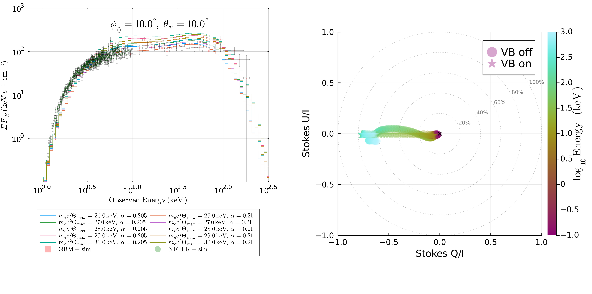
图注：Left panel: Comparison between the model spectra and the simulated NICER+{\it{Fermi}}-GBM data for the FRB-associated burst \(\citep{2021NatAs...5..408Y}.\) Right panel: $Q-U$ trajectories as a function of energy on a logarithmic scale, shown for VB off (filled circles) and VB on (filled stars), obtained using $\alpha = 0.21$ and $m_ec^2\Theta_{\rm max} = 29$~keV. The fixed parameters are $\phi_0 =10^\circ$, $\theta_v = 10^{\circ}$, $\theta_0 = 5^\circ$, $\Delta \theta_0 = \Delta\phi_0 = 0.1^\circ$, $M=1.5 \,M_\odot$, $r_\star = 12$~km, $B_p^{\rm flat} = 10$, $\eta = 0$, and splitting $\perp\rightarrow \parallel\parallel$ only.
对应解读：“SGR 1935+2154 事件比较图”与模型拟合段落中关于近磁极足点、近 pole-on 视角、谱形和 Stokes/偏振约束的讨论。
入选理由：这是最直接对应日报第 6 类重点图的候选图：左图把 FRB 相关的 SGR 1935+2154 短暴模拟 NICER+Fermi-GBM 数据与模型谱比较，右图给出随能量变化的 Q-U 轨迹并区分真空双折射开关。它同时支撑谱形、视角、光子分裂假设和偏振诊断，比单纯模型示意图更接近可观测检验。
来源与置信度：\(arxiv_source\)；high；\(arxiv_source\) / \(Burst_Lensing_I.tex\):figure[10]
Fig09
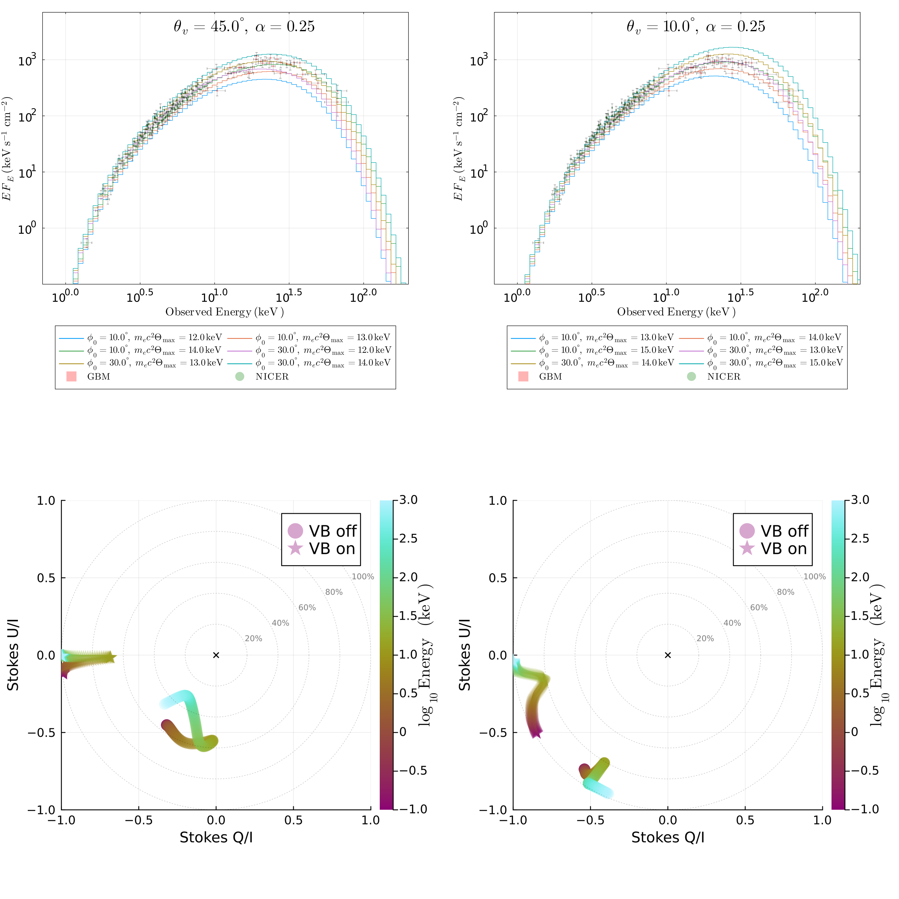
图注：Top panels: Comparison between the simulated spectra and that of a SGR~1935+2154 burst observed simultaneously with NICER and Fermi GBM \(\citep{2021NatAs...5..408Y}.\) Two viewing angles are considered: $\theta_v = 45^{\circ}$ (top left panel) and $\theta_v = 10^{\circ}$ (top right panel). Bottom panels: $Q-U$ trajectories as a function of energy on a logarithmic scale, shown for VB off (filled circles) and VB on (filled stars), obtained using $\phi_0 = 30^{\circ}$ and $m_ec^2\Theta_{\rm max} = 13$~keV for $\theta_v = 45^{\circ}$ (bottom left panel) and $\theta_v = 10^{\circ}$ (bottom right panel). The PD is indicated by the concentric gray dotted circles. The fixed parameters are $\theta_0 = 25^\circ$, $\Delta \theta_0 =3^{\circ}$, $ \Delta\phi_0 = 6^\circ$, $M=1.5 \,M_\odot$, $r_\star = 12$~km, $B_p^{\rm flat} = 10$, $\alpha = 1/4$, $\eta = 0$, and splitting $\perp\rightarrow \parallel\parallel$ only. See text for details.
对应解读：“SGR 1935+2154 事件比较图”“偏振度随能量变化图”以及模型拟合段落中关于不同视角退化和 Q-U 残差诊断的讨论。
入选理由：该图比较 SGR 1935+2154 观测谱与两个视角下的模拟谱，并在下方面板展示 VB off/on 的能量依赖 Q-U 轨迹和偏振度圆环。它比一般谱图更能说明几何视角如何同时改变能谱和偏振，是解释‘broadly consistent 而非唯一最佳几何’的关键图。
来源与置信度：\(arxiv_source\)；high；\(arxiv_source\) / \(Burst_Lensing_I.tex\):figure[9]
Fig03
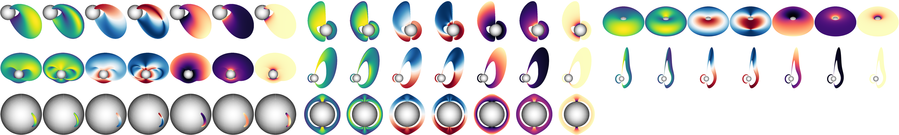
图注：Diverse mosaic of ray-traced flux tubes, illustrating how geometry controls local transfer quantities and observables. In each row (one fireball setup), the columns show normalized color maps of observed delay $\Delta t_{\rm obs}$, surface normal zenith cosine $\boldsymbol{\hat{k}\cdot \hat{n}_{\cal S}}$, photon magnetic cosine $\boldsymbol{\hat{k}\!\cdot\!\hat{B}}$, photon magnetic azimuth angle $\cos\phi_{kB}$, accumulated polarization-averaged splitting optical depth $\log \tau_{\rm ave}$, gravitational redshift factor $1+z$, and local field strength $|\boldsymbol{B}|$. Across rows, only the surface footpoint ellipse parameters are varied, with $M=1.5\,M_\odot$ and $r_\star=12$ km fixed. The first seven rows are viewing angle $\theta_v=60^\circ$, and the last row is $\theta_v=90^\circ$. The 5th and 6th cases with limited footpoint area near the pole seem to be most compatible with spectral phenomenology of magnetar SBs (see \S\ref{sec:results}).
对应解读：“光线传播或多像响应图”“参数扫描或角度依赖图”以及关于直接像、延迟像、遮挡、红移和光子分裂光深的逐图导读。
入选理由：该图以多列地图同时给出观测延迟、表面投影、光子与磁场夹角、磁方位角、光子分裂光深、红移因子和局部磁场强度，是理解本文前向模型如何把火球几何转化为谱、时间和偏振响应的核心诊断图。它比单一几何示意图包含更多可直接进入模型输出的物理量。
来源与置信度：\(arxiv_source\)；high；\(arxiv_source\) / \(Burst_Lensing_I.tex\):figure[3]
Fig07

图注：{\(\bf\) Top:} Suite of panels at $12$~keV varying $\theta_v \in \{6^\circ,...,90^\circ\}$ and $\phi_0 \in \{0^\circ,...,180^\circ \}$ with $\theta_0 = 18^\circ$, $\Delta \theta_0 = \Delta\phi_0 = 2^\circ$, $M=2.0 \,M_\odot$, $r_\star = 12$~km, $B_p^{\rm flat} = 10$, $\alpha = 1/3$, $m_e c^2 \Theta_{\rm max} = 30$~keV, $\eta = 0$, and splitting $\perp\rightarrow \parallel\parallel$ only. {\(\bf\) Bottom:} Attendant time-integrated snapshot spectra for each case. This demonstrates that geometric changes can lead to strong spectral and apparent luminosity variations. There is strong geometric and visibility enhancement of luminosity of bursts behind the NS, compared to those in the foreground that can occult high luminosity low altitude regions of the burst. The high luminosity outlier $\theta_v = 20^\circ$ and $\phi_0 = 180^\circ$ is a result of surface grazing trajectories near the back and lensed polar footpoints that are strongly beamed along $\boldsymbol{B}$.
对应解读：“模型能谱图”“参数扫描或角度依赖图”以及关于不同视角、足点方位导致谱和表观 luminosity 大幅变化的解读。
入选理由：该图系统扫描观测角和足点方位，上方面板展示几何可见性，下方面板给出对应时间积分谱，直接支撑日报中‘不同视角、足点纬度和通管开角是否产生可区分观测族’的判断。它也展示了遮挡和引力透镜增强如何改变高能谱形与亮度。
来源与置信度：\(arxiv_source\)；high；\(arxiv_source\) / \(Burst_Lensing_I.tex\):figure[7]
Fig06
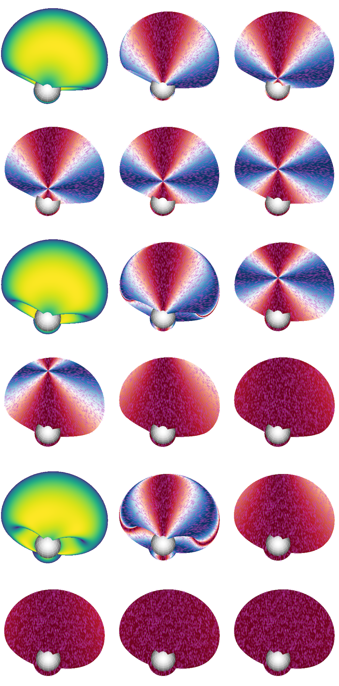
图注：Energy-dependent polarization angle transport with and without VB for three near pole-on geometries (rows) for $B = 10$, $M = 1.7 \,M_\odot$ and $r_\star = 12$~km with viewing angles of $\theta_v = \{ 5^\circ, 15^\circ, 30^\circ \}$ (top to bottom). In each row, the first column shows $\boldsymbol{\hat{k}\cdot\hat{n}_{\cal S}}$ and the second shows $\cos 2\chi$ with VB disabled. The remaining columns show $\cos 2\chi$ with VB enabled at 0.1, 1, 10, and 100~keV. Comparing columns within each row demonstrates how adiabatic VB reorganizes polarization angle structure in a strongly energy-dependent manner for polar viewing angles, approaching the VB-off case at low energies and on-axis views. The color scale indicates $\cos 2\chi$ at the IP, along with a random sample of overlaid polarization angle vectors. As the VB polarization recoupling radius becomes large compared to the emission region, the polarization vectors become more aligned (bottom row panels).
对应解读：“偏振角随自转相位或时间变化图”“偏振度随能量变化图”以及关于真空双折射开关前后偏振结构改变的讨论。
入选理由：该图明确比较 VB 关闭与开启后，在 0.1、1、10、100 keV 不同能量下的偏振角结构，适合说明真空双折射如何重排偏振方向并产生强能量依赖。它直接对应日报中强调的偏振角跳变、平滑摆动和 VB 诊断能力。
来源与置信度：\(arxiv_source\)；high；\(arxiv_source\) / \(Burst_Lensing_I.tex\):figure[6]
Fig08
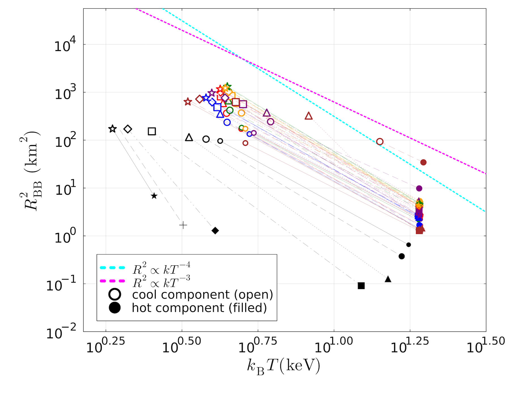
图注：Two-BB phenomenological decomposition of the synthetic spectra presented in Figure~\(\ref{fig:7x7panels}.\) The high temperature component has dissimilar dispersion of its hot-BB temperature than the cool component. This is a natural outcome of atmosphere anisotropy, projection and self-occultation for the fixed temperature models in Figure~\(\ref{fig:7x7panels}.\)
对应解读：“模型能谱图”以及详细解读中关于模型可再现短暴经验双黑体谱形、但不应把双黑体简单解释为两个真实热区的讨论。
入选理由：该图把 Fig07 的合成谱做双黑体经验分解，正好支撑日报中关于‘双黑体只是传播、角分布和自遮挡投影后的表象’这一重点。它比普通谱线图更适合解释经验拟合参数与真实火球物理之间的差异。
来源与置信度：\(arxiv_source\)；high；\(arxiv_source\) / \(Burst_Lensing_I.tex\):figure[8]
强相关工作
这篇工作与磁星巨耀发 trapped fireball 模型是一脉相承的，但把对象推进到更常见、能量更低、统计上更丰富的短暴。它也与磁星表面热斑脉冲轮廓建模相似：二者都利用中子星紧致性导致的光弯曲和自转调制；不同之处在于短暴有毫秒到秒级瞬态响应，并且强磁场 QED 效应对高能谱和偏振更突出。可检索关键词包括 “magnetar trapped fireball”, “magnetar short bursts spectra”, “neutron star light bending polarization”, “vacuum birefringence magnetar”。
相反或有张力的观点主要来自非热磁层模型、相对论外流模型，以及把短暴谱完全当作经验双黑体的解释。如果未来观测发现短暴高能端呈明显非热幂律且偏振角快速无规则变化，纯热受限火球模型会受挑战。SGR 1935+2154 与 FRB 200428 的关联还引入了射电发射区位置问题：高能短暴足点接近磁极是否必然对应射电束方向，目前并没有定论。建议检索 “SGR 1935+2154 FRB 200428 X-ray burst”, “photon splitting magnetars”, “QED vacuum birefringence X-ray polarimetry”, “magnetar burst double blackbody”。
相似工作：
- https://arxiv.org/abs/2605.22323
- https://arxiv.org/abs/2005.10828
- https://arxiv.org/abs/2005.11071
基础理论 / 方法工作：
- https://ui.adsabs.harvard.edu/abs/1995MNRAS.275..255T/abstract
- https://ui.adsabs.harvard.edu/abs/1992ApJ...395..250P/abstract
- https://ui.adsabs.harvard.edu/abs/2002ApJ...574..332O/abstract
相反观点 / 张力线索：
- https://arxiv.org/abs/2005.12164
- https://arxiv.org/abs/2005.10324
7. PIC simulations of nonrelativistic high-Mach-number oblique shocks propagating in a turbulent medium
- 来源：arXiv / astro-ph.HE
- 链接：https://arxiv.org/abs/2605.21986v1
- 作者：Karol Fulat, Eloise Moore, Mahmoud Alawashra, Michelle Tsirou, Artem Bohdan, Takanobu Amano, Martin Pohl
- 评分：novelty 8/10，importance 8/10，relevance 8/10，final 9.00/10
- 推荐理由：首次系统用2D3V PIC模拟研究高马赫数斜激波与预存湍流相互作用，显示湍流增强非热电子加速；对SNR激波、宇宙线注入和粒子加速微物理具有较高相关性。
中文题目：湍流介质中非相对论高马赫数斜激波的 PIC 模拟
做了什么：这篇论文用二维三速度分量的电子—离子粒子模拟研究非相对论、高马赫数斜激波在已有上游压缩湍流中传播时，电子前兆区和电子加速如何改变。核心问题是：通常理想化的均匀上游介质会不会低估斜激波中反射电子、哨声波不稳定性和非热电子形成的效率。作者加入相对幅度约为 \(15\%\) 的上游压缩湍流，发现湍流会增强磁场涨落、促成更大的非线性结构，使电子前兆区更短但更热；到模拟末期，含湍流情形产生的非热电子更多、能量更高，并占据更大的总能量份额。
为什么重要：无碰撞激波是超新星遗迹、星系团激波、日球层激波和喷流环境中粒子加速的基本场所，但电子注入一直是弥散激波加速理论的薄弱环节。斜激波处的电子能否逃回上游、激发波动并继续增能，很强地依赖局地磁场几何和上游涨落。这篇工作的重要性在于它不再把上游当作完全平滑背景，而是把更接近星际介质的压缩湍流放进全动力学电子—离子模拟中，直接检验湍流对电子前兆区和非热尾巴的影响。
理论 / 观测 / 仪器方法价值：对理论而言，它提示电子注入效率不能只由平均激波倾角和平均马赫数决定，上游湍流导致的局地 \(\theta_{Bn}\)、磁镜条件和波—粒相互作用会改变加速路径。对观测而言，它为为什么某些高马赫数激波有更强射电同步辐射或更硬电子谱提供了微观机制线索。对方法而言，这篇文章展示了把预先存在的可控湍流场与电子—离子 PIC 激波模拟耦合起来的做法，可作为后续多尺度混合模拟和合成辐射诊断的基准。
为什么应该关注：如果你关心宇宙线电子从热池进入弥散激波加速的“第一步”，这篇论文值得看。它说明即使只有中等幅度的上游压缩湍流，也可能系统性改变前兆区长度、波动谱和非热电子能量预算。换句话说，很多从均匀上游模拟得到的电子注入结论，放到真实星际介质或星系团等离子体中可能需要重新标定。
展开详细解读：文章讲解、背景、理论、重点章节、图表与相关工作
文章详细讲解
科学问题：文章关注的是非相对论高马赫数斜无碰撞激波中的电子加速。垂直激波附近，磁场几何通常使电子难以沿磁力线返回上游；斜激波则允许一部分被反射或预加速的电子进入上游，形成电子前兆区，并通过流束或温度各向异性激发哨声波等电磁波动。问题在于，过去很多 PIC 模拟把上游介质设为均匀背景，而真实星际介质、日球层和超新星遗迹前方都存在密度和磁场涨落。作者要问的是：已有压缩湍流是否会改变哨声波不稳定性的出现、非线性结构尺度、电子前兆区热化，以及最终非热电子的数目和能量份额。
作者怎么做：他们进行二维空间、三维速度的电子—离子 PIC 模拟，研究非相对论高马赫数斜激波。模拟中保留电子和离子的动力学自由度，因此能够解析电子尺度波动、反射电子分布以及微观不稳定性。关键设置是对照两类上游：一类为较理想化的平滑上游，另一类包含预先存在的压缩湍流，湍流相对幅度取约 \(15\%\)，这是基于星际介质估计的量级。这样可以把湍流本身的影响与激波自发产生的前兆区波动区分开。
关键结果：论文摘要给出的主结论是，上游湍流会影响哨声波不稳定性的产生和演化，增强磁场涨落幅度，并形成更大的非线性结构。这些结构反过来改变反射电子的轨道和驻留时间，使电子前兆区相对更短，但电子温度更高。到模拟末期，含预存湍流的情形出现更多非热电子，电子能达到更高能量，并且非热电子携带的总能量比例更大。这说明湍流不是可忽略的“背景噪声”，而是直接参与电子注入和早期加速的动力学因素。
局限和下一步：这类 PIC 模拟不可避免受限于二维几何、有限盒子、有限演化时间、可能降低的离子—电子质量比以及可实现的尺度分离。二维湍流和三维湍流在级联、磁力线随机游走和波模耦合上并不等价，因此该结论还需要三维或更大尺度混合模拟检验。下一步最自然的方向包括扫描湍流幅度、相关长度、激波倾角和马赫数，检验非热电子效率是否存在可参数化的标度律；同时生成合成同步辐射或 X 射线诊断，把微观电子谱与超新星遗迹和日球层激波观测联系起来。
背景知识
研究对象是无碰撞激波。所谓无碰撞，并不是没有粒子相互作用，而是库仑碰撞平均自由程远大于激波厚度，动量和能量的耗散主要通过集体电磁场、等离子体不稳定性和波—粒相互作用完成。天体环境中的强激波通常具有高声速或阿尔芬马赫数，能够把上游有序流动能转化为热能、磁场涨落和非热粒子能量。
历史上，离子在强激波中的反射和弥散激波加速相对容易理解，因为离子回旋半径大、惯性强，更容易跨越激波并采样上下游速度差。电子的问题更难：电子质量小、回旋半径短，需要先从热池获得足够能量，才能进入类似一阶费米加速的循环。这就是所谓电子注入问题。斜激波和准垂直激波中，激波漂移加速、磁镜反射、哨声波散射等机制都可能参与电子预加速。
观测背景来自多个尺度。地球弓激波和日球层激波能用原位探测直接看到电子前兆区、波动和反射电子；超新星遗迹和星系团激波则主要通过射电同步辐射、X 射线细丝或伽马射线约束电子分布。观测经常显示激波环境并不平滑，上游存在密度团块、磁场扰动和湍流级联。因此，把均匀上游模拟直接外推到真实天体系统，可能漏掉重要的电子散射和局地几何效应。
这个问题现在值得重新看，是因为全动力学 PIC 模拟的尺度和物理保真度已经能同时处理电子尺度波动和离子控制的激波结构，并且可以加入更真实的初始湍流。过去常见误区之一是把湍流只看成宏观输运中的扩散系数，而忽视它在电子尺度通过改变局地磁场倾角和波增长率来触发微观不稳定性。另一个误区是把平均激波倾角当作唯一控制量；实际中，局地 \(\theta_{Bn}\) 的涨落可能让同一平均斜激波同时包含准平行、斜向和准垂直片段。
基础理论 / 方法脉络
基础物理图像可以从激波参考系看起：上游等离子体以超磁声速度流入激波，跨越一个由电磁场支撑的薄层后被压缩、减速并加热。因为库仑碰撞不够快，耗散必须由反射粒子激发的波动和自洽电磁场完成。电子的轨道由洛伦兹力控制，若激波面附近磁场增强，部分电子会被磁镜反射，并在激波运动电场中获得能量。
斜激波的关键量是磁场与激波法线之间的夹角 \(\theta_{Bn}\)。当 \(\theta_{Bn}\) 接近垂直时，粒子沿磁力线返回上游更困难，但激波漂移加速更有效；当 \(\theta_{Bn}\) 较小，反射粒子更容易沿磁场逃逸到上游并形成前兆区。本文讨论的斜激波处于两者之间，因此对局地磁场扰动特别敏感：预存湍流会让局地 \(\theta_{Bn}\) 在空间上起伏，从而改变反射概率和前兆区结构。
哨声波不稳定性通常与电子流束、温度各向异性或相对于背景等离子体的漂移有关。反射电子进入上游后，其速度分布不再是单一麦克斯韦分布，而可能在速度空间中形成束状成分或环束结构。这些非平衡分布为电磁波增长提供自由能，产生的波动又散射电子，调节其俯仰角、驻留时间和能量增长。本文发现已有压缩湍流会增强磁场涨落和非线性结构，说明激波自发不稳定性与外加湍流之间存在耦合。
从方法上看，PIC 模拟用宏粒子采样电子和离子分布函数，用网格求解电磁场，再通过粒子—网格插值实现自洽演化。它的优势是无需预设闭合的输运方程，能够直接跟踪非热尾巴从热池中长出来。常见系统误差包括有限粒子数导致的数值噪声、有限盒子截断长波湍流、二维几何限制波矢方向、降低质量比改变电子和离子尺度分离，以及边界条件对前兆区长度的影响。解读结果时要区分物理湍流增强的涨落与数值噪声或有限时间暂态。
公式与推导
第一步是用无碰撞等离子体的单粒子动力学建立基础尺度。电子或离子在自洽电磁场中的运动满足
这里 \(s\) 表示粒子种类，\(q_s\)、\(\mathbf{p}_s\)、\(\mathbf{v}_s\) 分别是电荷、动量和速度，\(\mathbf{E}\) 与 \(\mathbf{B}\) 是电场和磁场。PIC 模拟的核心就是让大量宏粒子按此式运动，同时由粒子电荷和电流反推场。
第二步是说明激波强度。常用的阿尔芬马赫数为
其中 \(u_1\) 是上游流速，\(v_A\) 是上游阿尔芬速度，\(B_1\)、\(n_1\)、\(m_i\) 分别为上游磁场、数密度和离子质量。高 \(M_A\) 表示上游动能远大于磁张力可平滑传输的能量，因而更容易产生强反射、强波动和有效加热。
第三步是斜激波几何。平均激波倾角定义为
其中 \(\hat{\mathbf{n}}\) 是激波法线方向。若上游存在湍流，实际进入反射条件的是局地磁场 \(\mathbf{B}=\mathbf{B}_0+\delta\mathbf{B}\)，于是局地角度 \(\theta_{Bn}(\mathbf{x})\) 会空间变化。这是本文物理图像的关键入口。
第四步是用压缩湍流幅度刻画外加扰动。可写成
其中 \(B_0\) 是平均磁场，\(\delta B_{\rm rms}\) 是磁场扰动的均方根幅度。这个式子不只是初始条件说明，它也告诉读者湍流足以让局地磁镜比和局地 \(\theta_{Bn}\) 出现可观变化，但又不是完全非线性的强湍流极限。
第五步是磁镜反射条件。若电子磁矩近似守恒，
其中 \(p_\perp\) 是垂直于磁场的动量，\(m_e\) 是电子质量。电子从弱磁场区进入强磁场区时，垂直能量增加、平行动量降低；若 \(p_\parallel\) 降到零就会反射。湍流改变局地 \(B\) 的峰值和梯度，因此会改变反射电子数量。
第六步是激波漂移加速的能量增益。粗略地，粒子在运动电场中漂移时能量变化为
这里 \(K\) 是动能，\(\Delta y\) 是沿漂移方向的位移。若湍流和波动延长或改变电子在激波附近的漂移路径，就会影响预加速效率。
第七步是前兆区不稳定性的自由能来源。可把电子分布近似分成背景和反射束两部分：
当 \(f_{\rm beam}\) 带来相对漂移或温度各向异性时，电磁波可从分布函数梯度中获得增长。本文关心的哨声波就是这种电子尺度不稳定性的重要候选。
第八步是能量预算和非热尾巴诊断。电子能量分布常用热成分加非热尾巴来刻画，例如
这里 \(T_e\) 是电子温度，\(p\) 是非热谱指数，\(E_{\rm inj}\) 是注入能量阈值，\(\Theta\) 是阶跃函数。论文所说“更多、更高能、能量份额更大”的非热电子，可以通过 \(A_{\rm nt}\)、最高能量和非热能量积分共同诊断。
第九步是非热能量份额。一个直接的可观测模拟量为
其中分子是超过注入阈值的电子能量，分母是所选区域内电子总能量或全粒子总能量，具体归一化取决于论文定义。比较有无上游湍流时的 \(\epsilon_{e,\rm nt}\)，就是检验湍流是否提高电子注入效率的核心诊断。
模型拟合 / 应用方法
这篇工作本质上是数值实验而非传统观测拟合，但仍然存在“模型—参数—诊断”的拟合逻辑。模型参数包括平均激波倾角 \(\theta_{Bn}\)、阿尔芬马赫数 \(M_A\)、上游等离子体 \(\beta\)、电子—离子质量比、湍流幅度 \(\delta B_{\rm rms}/B_0\)、湍流相关长度以及模拟盒大小。作者通过固定大部分参数、改变是否加入预存湍流来做控制实验，从而把差异归因于上游湍流。
拟合量或诊断量主要不是单个最优参数，而是分布函数、能谱、空间剖面和波动谱。电子能谱可用热分布加幂律或截断幂律近似描述，以估计电子温度、非热尾巴归一化、谱指数和最大能量。电子前兆区长度可从上游电子能量密度、反射电子密度或磁场涨落随距离的衰减剖面中定义；不同定义可能给出略不同结果，因此读者应看作者是否做了稳健性检查。
残差诊断在这类模拟中体现在“对照差异是否超过数值噪声和随机相位差”。如果湍流场相位、粒子装载噪声或有限盒子影响很大，那么单次模拟的差异可能不具有普适性。理想情况下，应比较多个时间片、多块空间区域，或多个随机种子下的统计量，例如磁场涨落均方根、非热电子数目和能量份额的时间演化。若论文只展示一个种子，读者应把结果理解为明确的物理示例，而不是完整参数空间的标定。
主要退化关系包括湍流幅度与局地激波倾角变化的退化、湍流相关长度与前兆区长度的退化、马赫数与反射效率的退化，以及电子尺度波动与离子尺度压缩结构之间的耦合退化。比如更强湍流可能增加反射电子，也可能因更强散射使电子更快返回激波或被热化；同一个“非热电子更多”的结果可能来自更高注入率，也可能来自更长的加速驻留时间。实际应用到超新星遗迹或星系团时，还需要把微观效率转换为宏观输运模型中的注入项和扩散系数。
重点章节 / 结果段落怎么读
数据与模拟设置部分应优先阅读。重点看作者如何构造激波、采用什么维度和速度空间、边界条件如何设置、电子—离子质量比和网格分辨率是多少，以及上游压缩湍流的幅度、谱形和相关尺度如何定义。这些技术细节直接决定结论能否推广到真实天体环境。
方法与诊断部分要看作者如何定义电子前兆区、反射电子和非热电子。不同阈值会影响“前兆区更短”和“非热电子更多”的定量说法。还要看他们如何分离预存湍流、激波压缩放大的涨落和由反射电子驱动的新生波动，尤其是哨声波不稳定性的识别标准。
主结果部分应围绕三条线阅读：第一，磁场和密度结构在有无湍流时如何不同；第二，电子分布函数和能谱如何随时间演化；第三，电子前兆区的长度、温度和波动强度如何改变。摘要中的核心结论都应在这些图和剖面中得到支持。
讨论部分值得关注作者对天体外推的谨慎程度。应看他们是否讨论二维限制、有限盒子、有限时间、质量比和湍流参数选择对结果的影响。若有附录或稳健性检验，应特别检查数值收敛、能量守恒、粒子数噪声和不同区域统计是否支持主文判断。
建议重点查看的图表
-
模拟几何与初始条件图：看激波法线、平均磁场方向、\(\theta_{Bn}\)、上游湍流区域和边界条件，确认“斜激波”和“预存压缩湍流”的定义。
-
磁场或密度二维图：比较有无湍流时上游前兆区的 \(\delta B/B_0\)、压缩结构和非线性波包大小，注意是否只是颜色条范围造成视觉差异。
-
波动谱或频率—波数诊断：检查哨声波不稳定性的识别是否清楚，波模是否落在合理色散关系附近，以及湍流是否改变增长位置或波矢方向。
-
电子相空间图：看反射电子束、热核和高能尾巴如何分布，尤其是沿磁场方向速度与位置的相关性，这能直接说明前兆区为何变短或变热。
-
电子能谱随时间演化图：比较热峰、高能尾和最高能量，注意非热阈值 \(E_{\rm inj}\) 的选取以及尾部是否受有限粒子数影响。
-
能量预算表或曲线：看非热电子携带能量份额、场能增长和离子能量变化，确认电子非热增强不是总能量归一化或选区变化导致的假象。
-
前兆区长度和温度剖面：沿激波法线检查电子温度、反射电子密度和磁场涨落随距离的变化，重点看“更短但更热”的结论是否在多个时间片成立。
关键图表逐图导读
图 1：通常应是模拟设置或初始条件示意。横轴和纵轴多半对应模拟平面坐标，箭头标出上游流速、平均磁场和激波法线。读图时要确认 \(\theta_{Bn}\) 是相对法线定义，而不是相对激波面定义；还要看湍流是只在上游初始化，还是会通过边界持续注入。
图 2：若展示磁场强度或密度的二维快照，坐标轴应为空间位置，颜色表示 \(|\mathbf{B}|\)、\(B_z\) 或密度压缩。模型线可能标出激波位置或前兆区边界。主要结论应是含湍流情形产生更强涨落和更大尺度非线性结构。读图陷阱是颜色条自动缩放会夸大差异，所以要检查两组图是否使用同一归一化。
图 3：若为波动谱图，横轴可能是波数 \(k\) 或沿激波法线的位置，纵轴可能是频率 \(\omega\) 或谱功率。应查看谱功率是否与哨声波色散预期相符，而不是单纯宽带压缩湍流。若作者叠加理论色散线，重点看增强区域是否出现在电子前兆区内。
图 4：若为电子相空间图，横轴常是位置，纵轴是速度分量或动量分量，颜色为相空间密度。反射电子应表现为从激波向上游延伸的稀疏高能结构。含湍流情况下如果前兆区更短，应看到高能电子空间延展缩短；如果更热，应看到热核宽度或高能散布增加。
图 5：若为电子能谱，横轴为电子能量，纵轴为粒子数或能量加权分布，通常采用对数坐标。需要比较有无湍流曲线在热峰和尾部的差异。读图时不要只看最高能量点，因为尾端粒子数少、噪声大；更可靠的是尾部归一化、斜率和能量积分是否同时增加。
图 6：若为时间演化或能量预算，横轴为模拟时间，纵轴为非热电子数目、平均能量、\(\epsilon_{e,\rm nt}\) 或场能。关键是看湍流情形的增强是否持续增长，还是只在某个短暂时间窗出现。若曲线末期仍未饱和，说明论文结论更适合描述早期加速阶段，而不是最终稳态效率。
论文原图 / 可嵌入图片
Fig01
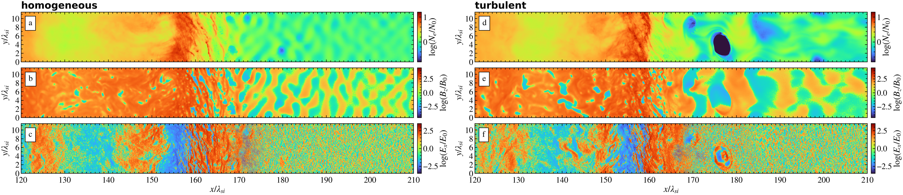
图注：Maps of the electron number density (panels a and d), the $z$-component of the magnetic (panels b and e), and the $x$-component of electric fields (panels c and f) at an oblique shock with pre-existing upstream density fluctuations (run $\text{T}$, panels d,e, and f) and with a homogeneous upstream medium (run $\text{H}$, panels a,b, and c), both at $t\approx 18\,\Omega_i^{-1}$. For the $B_z$ map, the initial upstream field was subtracted. The scaling of the fields is logarithmic and sign preserving, e.g., for $B_x/B_0$ it is $\text{sgn}(B_x)\cdot[2+\log \{\text{max}(10^{-2},|B_x|/B_0)\}]$.
对应解读：对应“建议重点查看的图表”第2项，以及“关键图表逐图导读”中图2关于有无湍流时二维磁场/密度快照的比较。
入选理由：这张图直接并排比较均匀上游 run H 与含预存湍流 run T 的电子数密度、磁场涨落和电场结构，是支撑论文核心结论“湍流增强磁场涨落并产生更大尺度非线性结构”的首要证据。caption 明确说明了场量归一化和符号保持对数色标，也正好回应日报中提醒的颜色条与视觉差异问题。
来源与置信度：\(arxiv_source\)；high；\(arxiv_source\) / Fulat-et-\(al_oblique-turb.tex\):figure[1]
Fig06
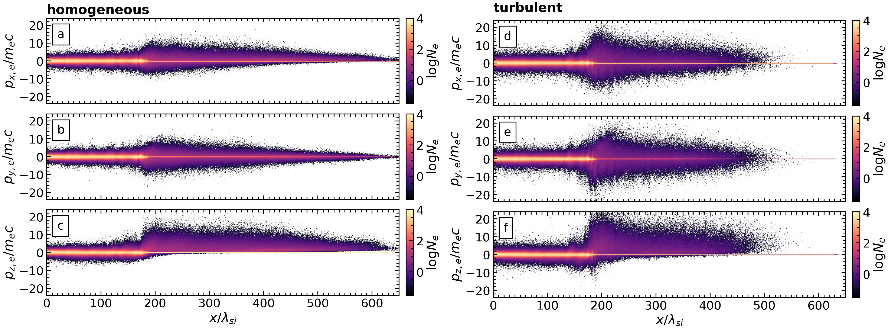
图注：Electron phase-space distributions for run $\text{H}$ (panels a,b, and c) and run $\text{T}$ panels (d,e, and f) at time $t \approx 20 \Omega_i^{-1}$.
对应解读：对应“建议重点查看的图表”第4项，以及“关键图表逐图导读”中图4关于电子相空间、反射电子束和高能尾巴空间分布的解读。
入选理由：电子相空间分布最直接展示反射电子在前兆区中的位置—动量结构，可用来判断含湍流情形下电子前兆区为何更短、电子分布为何更热或更弥散。它比单纯的密度图更接近粒子加速机制本身，是解释反射电子动力学变化的关键图。
来源与置信度：\(arxiv_source\)；high；\(arxiv_source\) / Fulat-et-\(al_oblique-turb.tex\):figure[6]
Fig09
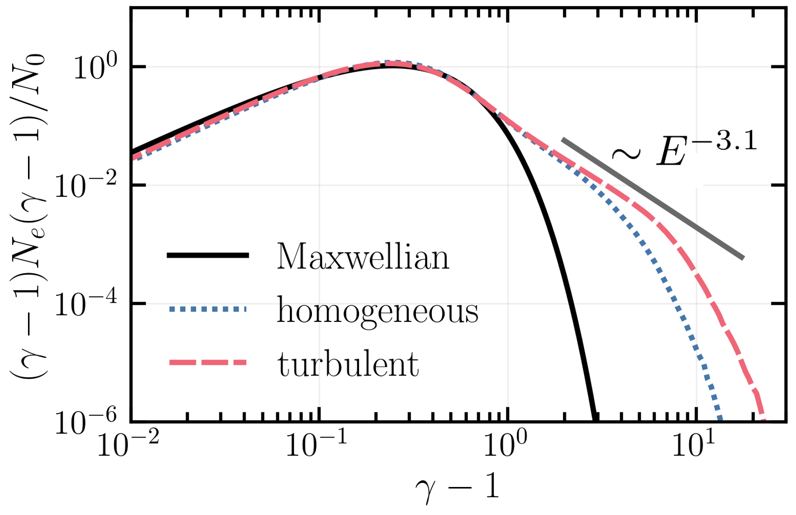
图注：The electron energy spectrum in the downstream regions for runs $\text{T}$ (turbulent; the red-dashed line) and $\text{H}$ (homogeneous; the blue-dotted line). The black solid line denotes a fitted relativistic Maxwellian to the low-energy part of the distribution. The grey solid line represents the slope of the nonthermal tail.
对应解读：对应“建议重点查看的图表”第5项，以及“关键图表逐图导读”中图5关于电子能谱、热峰、非热尾和最高能量的比较。
入选理由：这张图直接给出下游电子能谱，并同时包含湍流 run T、均匀 run H、低能 Maxwellian 拟合和非热尾斜率参考线，是检验“含湍流时非热电子更多、能量更高、非热能量份额更大”的核心诊断。相比其他图，它最清楚地连接到论文摘要中的最终加速结果。
来源与置信度：\(arxiv_source\)；high；\(arxiv_source\) / Fulat-et-\(al_oblique-turb.tex\):figure[9]
Fig08
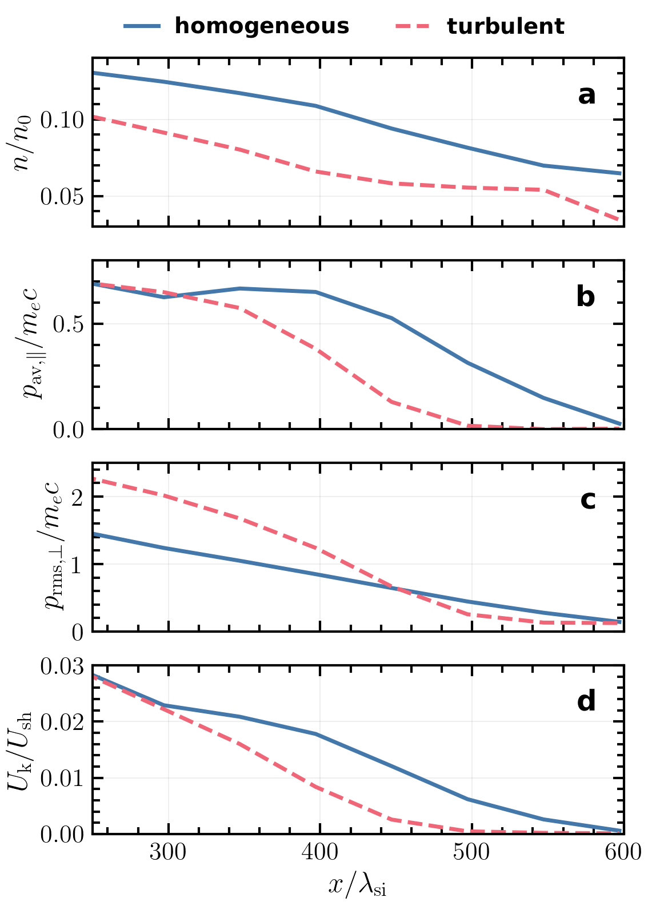
图注：The number density (panel a), the parallel component of the average momentum (panel b), the perpendicular component of the rms momentum (panel c), and the energy density (panel d) of the shock-reflected electrons. All quantities are calculated in the upstream rest frame.
对应解读：对应“建议重点查看的图表”第7项和第6项，以及模型诊断段落中关于反射电子密度、动量、能量密度剖面和前兆区长度定义的讨论。
入选理由：该图给出 shock-reflected electrons 的数密度、平行动量、垂直 rms 动量和能量密度，能够量化反射电子在上游的空间分布和能量携带情况。它比背景电子平均动量图更直接服务于“更短但更热的电子前兆区”和“非热电子能量份额增加”的判断。
来源与置信度：\(arxiv_source\)；high；\(arxiv_source\) / Fulat-et-\(al_oblique-turb.tex\):figure[8]
Fig05
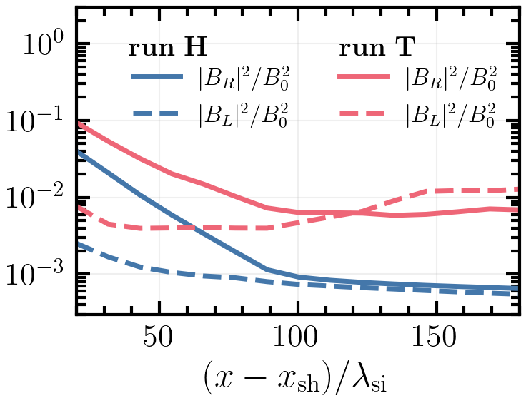
图注：The energy density of the right (solid lines) and left (dashed lines) circularly polarized modes in the foreshock region for run H (blue lines) and run T (red lines). The energy density is normalized to the energy density of the initial magnetic field.
对应解读：对应“建议重点查看的图表”第3项，以及“关键图表逐图导读”中图3关于哨声波不稳定性和波模诊断的部分。
入选理由：虽然它不是完整的频率—波数谱图，但它区分右旋和左旋圆偏振波能量，并比较 run H 与 run T，正是识别 whistler-like 右旋模式增强及其受湍流影响的重要证据。该图能支撑日报中关于湍流改变哨声波不稳定性强度的解读。
来源与置信度：\(arxiv_source\)；high；\(arxiv_source\) / Fulat-et-\(al_oblique-turb.tex\):figure[5]
Fig02
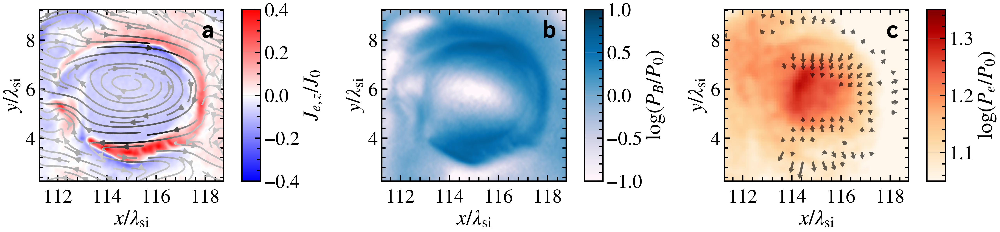
图注：Structure of an example nonlinear cavity observed in the foreshock of the turbulent simulation. Panel a shows the $J_z$ component of the electron current density normalized to $J_0=q_en_0v_0$ with superimposed magnetic-field lines, their colour-shade representing their strength. Panels b and c show the magnetic and electron pressures, respectively, that are normalized by the initial pressure, $P_0=B_0^2/2\mu_0+n_0k_B(T_e+T_i)$. Arrows on panel c represent the $\vb{J}\times\vb{B}$ force field.
对应解读：对应“建议重点查看的图表”第2项，以及详细解读中关于含湍流情形产生更大非线性结构、磁压和电子压耦合的段落。
入选理由：这张图聚焦 turbulent simulation 中的一个非线性 cavity，展示电子电流、磁力线、磁压、电子压和 J×B 力场，能补充说明二维快照中大尺度结构的物理性质。它不如 Fig01 那样提供有无湍流的直接对照，但对解释非线性波包/空腔如何影响电子动力学很有价值。
来源与置信度：\(arxiv_source\)；high；\(arxiv_source\) / Fulat-et-\(al_oblique-turb.tex\):figure[2]
强相关工作
这项工作与电子注入、激波漂移加速、哨声波前兆区和超新星遗迹激波 PIC 模拟直接相关。相近研究通常比较准垂直激波和斜激波中的电子反射，或研究反射电子驱动的电子尺度波动如何把热电子送入非热尾巴。建议检索关键词包括 “collisionless shock electron injection PIC”, “oblique shock whistler foreshock”, “shock drift acceleration electrons”, “supernova remnant high Mach number shocks”。
它也与更宏观的湍流—激波相互作用文献相连。混合模拟和磁流体模拟常讨论上游湍流如何改变离子扩散、磁场放大和激波重整化，但未必能解析电子尺度不稳定性。本文的潜在张力在于：二维 PIC 所得的湍流增强电子加速是否能推广到三维真实湍流；以及不同湍流谱、相干长度和等离子体 \(\beta\) 下，电子注入效率是否仍然上升。检索关键词可用 “turbulent upstream collisionless shock”, “PIC shock turbulence electron acceleration”, “foreshock turbulence whistler instability”。
相似工作：
- https://arxiv.org/abs/2605.21986
基础理论 / 方法工作：
- https://ui.adsabs.harvard.edu/abs/1983RPPh...46..973D/abstract
- https://ui.adsabs.harvard.edu/abs/1987PhR...154....1B/abstract
- https://ui.adsabs.harvard.edu/abs/2011SSRv..160..207T/abstract
相反观点 / 张力线索：
（未提供）
8. First-Principles Turbulence-Driven Deflagration-to-Detonation Transition Mechanism for Near-Chandrasekhar Mass White Dwarf Progenitors
- 来源：arXiv / astro-ph.HE
- 链接：https://arxiv.org/abs/2605.21575v1
- 作者：Krut Patel, Akshay Dongre, Robert Fisher, Alexei Poludnenko, Vadim Gamezo, Mark Ugalino, Chris Byrohl
- 评分：novelty 9/10，importance 8/10，relevance 7/10，final 8.95/10
- 推荐理由：近钱德拉质量Ia超新星中首次纳入实验验证的湍流DDT机制并做全局3D模拟，可能影响Ia爆炸机制和瞬变物理；虽非伽马方向，但在HE瞬变/爆炸理论中重要性较高。
中文题目：近钱德拉塞卡质量白矮星中由湍流驱动的第一性原理缓燃到爆轰转变机制
做了什么：这篇论文把一个经过实验室燃烧研究验证的湍流驱动缓燃到爆轰转变机制，第一次嵌入近钱德拉塞卡质量碳氧白矮星的全球三维流体力学爆炸模拟中。过去的近钱德拉模型通常需要人为指定爆轰何时、何地发生；本文改用湍流增强燃烧达到 Chapman-Jouguet 型判据后自洽触发爆轰。作者发现，在中心点火密度相差约六倍、初始点火形态也明显不同的模型中，爆轰都较早发生，并收敛到相似的峰值合成光谱，接近过亮型的 SN 1999aa。这给 Ia 型超新星延迟爆轰模型提供了一个更物理的触发路径，也解释了为什么多样的点火初始条件可能仍产生相对标准化的观测结果。
为什么重要：Ia 型超新星的宇宙学用途建立在可标准化之上，但爆炸物理长期有一个核心缺口：从亚声速火焰到超声速爆轰的转变往往靠人为参数化。本文的重要性在于，它不是再调一个任意的爆轰触发密度或时间，而是把湍流燃烧理论中的物理判据放进整星尺度模拟，测试它是否能自然产生正常或偏亮 Ia 型超新星。若这个机制成立，近钱德拉质量通道的预测力会明显增强。
理论 / 观测 / 仪器方法价值：对理论而言，本文把小尺度湍流燃烧和白矮星全球爆炸连接起来，减少了延迟爆轰模型中最可调的自由度。对观测而言，它给出一个可检验的预言：不同点火拓扑和中心密度可能在峰值谱上收敛，尤其类似 SN 1999aa 一类偏亮事件。对方法而言，工作展示了如何把实验室验证的湍流 Chapman-Jouguet 条件转化为三维天体流体模拟中的爆轰触发诊断。
为什么应该关注：如果你关心 Ia 型超新星的宇宙学系统误差，这篇文章值得看，因为它试图解释标准化背后的爆炸物理，而不只是经验校正光变曲线。如果你关心白矮星爆炸理论，它直接挑战了过去“延迟爆轰触发可随意设定”的建模传统。如果你做辐射转移或光谱比较，它还给出了一个具体问题：这种高效率的湍流触发是否过于偏向 SN 1999aa 式过亮事件，能否扩展到正常亮度和 Iax 失败爆炸。
展开详细解读：文章讲解、背景、理论、重点章节、图表与相关工作
文章详细讲解
科学问题：近钱德拉塞卡质量白矮星延迟爆轰模型的最大物理短板，是缓燃到爆轰转变本身。白矮星中心碳氧燃烧最初通常被认为以亚声速缓燃形式发展，火焰被瑞利-泰勒不稳定性和湍流皱褶化，释放能量并使恒星膨胀；但要产生典型 Ia 型超新星所需的高速铁族元素和中间质量元素分布，许多模型又需要在某个阶段转入超声速爆轰。过去的全球模拟常用人为阈值，例如指定密度、湍流速度或火焰表面积达到某值就点爆，因此不同研究可以通过调参得到不同亮度和核合成结果。
作者怎么做：本文把一个湍流驱动的缓燃到爆轰转变机制嵌入全球三维流体力学模拟。核心想法是，当强湍流使火焰进入分布式燃烧或强混合状态，并且局部湍流燃烧速度达到类似 Chapman-Jouguet 条件时，燃烧区可以自洽形成能维持的爆轰。作者不再预设爆轰发生的任意位置和时间，而是在模拟中追踪湍流与燃烧状态，使用实验室验证的湍流爆轰判据来决定爆轰启动。模型覆盖了约六倍范围的中心点火密度，并测试了不同的初始点火拓扑，以检验该机制对初始条件的敏感性。
关键结果：这些模型中，湍流驱动爆轰转变非常高效，爆轰启动比许多旧的延迟爆轰模型更早。更有意思的是，尽管初始中心密度和点火形态差异很大，模型在爆轰发生时却被驱动到相似的爆轰构型，因而峰值合成光谱相当接近。论文称这些峰值谱与过亮的 SN 1999aa 匹配较好。这意味着湍流 Chapman-Jouguet 判据可能提供一种“吸引子”：不同早期缓燃历史最后收敛到类似的爆轰条件，从而为 Ia 型超新星的经验标准化提供物理基础。
局限和下一步：本文的结果也提出了新问题。高效率爆轰触发若普遍存在，可能更自然地产生偏亮或 SN 1999aa 式事件，而正常亮度 Ia 型超新星、较暗事件以及 SNe Iax 可能需要更晚触发、触发失败或不同初始条件。论文明确指出，还需研究该机制如何被延迟、如何失败，以及其对前身星组成、金属丰度、对流预燃、旋转、伴星环境和数值分辨率的敏感性。下一步关键不是只增加模型数量，而是找出什么物理条件会让这个高效机制失效或变弱。
背景知识
研究对象是近钱德拉塞卡质量碳氧白矮星的热核爆炸。白矮星接近 Chandrasekhar 极限时，中心密度高、电子简并强，碳燃烧一旦热失控就可能引发整星范围的核燃烧。Ia 型超新星的光度主要来自 \,\(^{56}\mathrm{Ni}\,\) 衰变链，而光谱中硅、硫、钙等中间质量元素提供了爆炸分层和燃烧密度的信息。
历史上，纯爆轰模型会在高密度下把太多物质烧成铁族元素，缺少观测到的中间质量元素；纯缓燃模型又通常能量不足、混合过强，难以产生正常 Ia 型超新星的高速结构。延迟爆轰模型因此成为一个折中方案：先缓燃让白矮星膨胀，再在较低密度下爆轰，既产生足够能量和 \,\(^{56}\mathrm{Ni}\,\)，又保留中间质量元素层。
困难在于，天体白矮星中的缓燃到爆轰转变不能直接解析。真实火焰厚度远小于整星尺度，湍流级联跨越巨大尺度范围，核反应、热传导和流体不稳定性耦合。很多三维模拟只能使用亚网格火焰模型，并在某个经验条件下触发爆轰。这种处理能复现实测光谱，却削弱了模型的可证伪性：爆轰触发条件本身成为最大的调节旋钮。
现在值得重新看这个问题，是因为实验室和高分辨率燃烧模拟对湍流驱动爆轰转变的理解有进展，特别是强湍流、分布式燃烧和 Chapman-Jouguet 型自维持传播条件之间的联系更加清楚。同时，Ia 型超新星样本已经大到可以区分正常、过亮、91T/99aa 类和 Iax 类等亚群；理论模型不能只匹配一个平均光变曲线，还要解释这些亚群如何从爆炸机制上分化。
常见误区之一是把“延迟爆轰”理解为一个完整物理机制。严格说，它只是爆炸序列的现象描述：先缓燃、后爆轰；真正需要解释的是爆轰如何启动。另一个误区是认为 Ia 型超新星标准化意味着前身星和爆炸完全相同。实际情况可能是爆炸存在物理吸引子，使不同初始条件在关键观测量上收敛，但在紫外、早期颜色、星云期谱线或宿主星相关量上仍留下差异。
基础理论 / 方法脉络
基础物理图像从两类燃烧波开始。缓燃是亚声速燃烧前沿，主要由热传导和局部反应速率控制，压力扰动能提前传到未燃物质中；爆轰是超声速燃烧波，激波先压缩加热燃料，随后核反应释放能量维持激波。白矮星爆炸的难点是，起初热失控自然形成缓燃，但观测能量学和元素分布往往要求后期出现爆轰。
在白矮星中，缓燃火焰受到浮力不稳定和剪切湍流强烈影响。热灰烬密度低、未燃燃料密度高，瑞利-泰勒不稳定性使火焰表面积增加，湍流级联把大尺度浮泡运动转化为小尺度速度涨落。火焰表面积增大使总燃烧率上升，但是否能转成爆轰取决于湍流混合是否能建立足够大、足够快释放能量的反应区。
本文的关键假设是使用湍流驱动的 Chapman-Jouguet 条件作为爆轰触发判据。经典 Chapman-Jouguet 条件描述自维持爆轰波后流相对于波面达到声速的临界状态；湍流版本则强调，湍流增强的有效燃烧速度和能量释放必须足以驱动压力波并维持超声速传播。这个条件比简单的密度阈值更接近物理机制，因为它同时依赖局部燃料状态、湍流强度和燃烧速率。
观测联系主要通过核合成产物和辐射转移完成。爆轰发生得早，白矮星尚未充分膨胀，高密度燃烧更多，倾向产生更多铁族元素和更高亮度；爆轰发生得晚，低密度燃烧更多，中间质量元素比例提高，亮度可能降低。峰值光谱中的 Si II、S II、Ca II 以及 Fe 族吸收特征可用来判断燃烧分层、速度结构和温度电离状态。
常见退化包括点火几何、中心密度、组成和爆轰触发时间之间的退化。类似峰值光谱可能来自不同的 \,\(^{56}\mathrm{Ni}\,\) 质量和混合结构，尤其当只看峰值附近光谱而缺少早期、晚期和多波段光变时。系统误差还包括亚网格湍流模型、火焰捕捉方法、有限分辨率、核反应网络简化以及辐射转移中的局域热平衡近似等。
公式与推导
第一步是能量尺度。近钱德拉白矮星爆炸要求核能释放超过引力束缚能，粗略可写为
其中 \,\(E_{\rm exp}\,\) 是最终动能，\,\(E_{\rm nuc}\,\) 是碳氧燃烧到中间质量元素或铁族元素释放的核能，\,\(E_{\rm bind}\,\) 是白矮星束缚能。这个关系说明爆轰触发时机重要：它决定物质在何种密度下燃烧，从而决定 \,\(E_{\rm nuc}\,\) 和元素产额。
第二步是缓燃火焰速度。未受湍流影响的层流火焰传播可由局部层流速度 \,\(s_{\rm L}\,\) 描述，而湍流皱褶会增加有效火焰面积，使有效燃烧速度近似满足
其中 \,\(s_{\rm T}\,\) 是湍流增强后的有效火焰速度，\,\(A_{\rm flame}\,\) 是皱褶火焰面积，\,\(A_0\,\) 是未扰动参考面积。这不是精确闭合式，而是说明湍流通过几何增面提高总燃烧率。
第三步是湍流级联。若在积分尺度 \,\(L\,\) 上速度涨落为 \,\(u_L\,\)，Kolmogorov 型估计给出尺度 \,\(\ell\,\) 上速度涨落
这里 \,\(u'(\ell)\,\) 表示湍流速度涨落。该式用于判断某个尺度上的湍流是否能扰乱火焰内部结构，而不仅是皱褶火焰表面。
第四步是分布式燃烧条件。常用 Karlovitz 数可写成示意形式
其中 \,\(\delta_{\rm L}\,\) 是层流火焰厚度，\,\(\eta\,\) 是 Kolmogorov 耗散尺度。当 \,\({\rm Ka}\gtrsim 1\,\) 时，小尺度湍流开始进入火焰内部，燃烧从薄火焰区向分布式燃烧区转变，这为强混合和爆轰触发创造条件。
第五步是 Chapman-Jouguet 爆轰的基本约束。对一维稳态波面，质量守恒给出
其中 \,\(\rho_0\,\) 和 \,\(\rho_1\,\) 分别是波前燃料和波后产物密度，\,\(D\,\) 是爆轰速度，\,\(u_1\,\) 是实验室系中波后流速。这个式子说明爆轰不是任意压力脉冲，而是受流体跳跃条件约束的自维持波。
第六步是动量守恒，写作
其中 \,\(P_0\,\) 和 \,\(P_1\,\) 是波前、波后压力。结合能量释放后，只有特定 \,\(D\,\) 能使燃烧波稳定传播。
第七步是能量守恒，可写为
其中 \,\(h_0\,\) 和 \,\(h_1\,\) 是比焓，\,\(q\,\) 是单位质量核能释放。该式把核反应能和流体动力学波速联系起来，是从燃烧微物理走向爆轰宏观传播的关键。
第八步是 Chapman-Jouguet 临界条件。波后流相对于波面达到局地声速，即
其中 \,\(c_1\,\) 是波后声速。本文使用的湍流驱动思想可理解为：当湍流增强燃烧能在局部达到维持这种临界状态所需的能量释放和传播速度时，爆轰不再需要人为指定。
第九步连接到可观测亮度。峰值光度常用 Arnett 规则近似为
其中 \,\(L_{\rm peak}\,\) 是峰值光度，\,\(\dot{E}_{\rm rad}\,\) 是 \,\(^{56}\mathrm{Ni}\,\) 与 \,\(^{56}\mathrm{Co}\,\) 衰变在峰值时刻沉积的功率，\,\(M_{\rm Ni}\,\) 是 \,\(^{56}\mathrm{Ni}\,\) 质量。因此早爆轰若增加高密度铁族产额，通常会提高峰值亮度并改变电离状态。
第十步是模型与光谱数据的比较。若用光谱通量残差衡量匹配，可写成
其中 \,\(F_{\lambda_i}^{\rm obs}\,\) 是观测光谱，\,\(F_{\lambda_i}^{\rm mod}\,\) 是模型光谱，\,\(a\,\) 是距离、消光或归一化相关的尺度因子，\,\(\sigma_i\,\) 是误差。即使论文主要展示视觉光谱匹配，这类统计量也是读者判断模型是否真的优于替代模型的基本诊断。
模型拟合 / 应用方法
这类工作的“拟合”不只是调光谱线，而是从爆炸模型到辐射转移的多级比较。第一层参数包括白矮星中心密度、组成、点火核数量和空间分布、亚网格湍流模型以及爆轰触发判据。本文的重点是固定或物理化过去最任意的部分，即缓燃到爆轰转变条件，然后考察不同初始密度和点火拓扑是否仍收敛到相似结果。
第二层是核合成和动力学输出。需要比较的量包括 \,\(^{56}\mathrm{Ni}\,\) 质量、稳定铁族元素质量、中间质量元素质量、总动能、速度分层和未燃碳氧残留。中心密度与电子俘获会影响稳定铁族元素产额，点火越强通常预膨胀越多，爆轰时低密度燃烧比例越高。本文发现湍流触发使爆轰较早发生，因此模型会偏向较亮、较高电离的光谱表现。
第三层是辐射转移拟合。峰值光谱中应关注 Si II、S II、Ca II、Fe III 和 Fe II 等特征的线速度、等效宽度和相对强度。若模型匹配 SN 1999aa，通常意味着温度和电离状态较高，Fe III 特征较强，Si II 相对较弱或呈 99aa 类特征。只在峰值附近匹配并不足以证明模型唯一正确，还需要早期颜色、上升时间、近红外次峰、星云期铁线和稳定镍迹象共同约束。
似然或后验层面，理想做法是把爆炸模型输出作为先验物理模型，辐射转移产生多历元多波段观测量，再用光变曲线和光谱联合似然评估。实际中三维模型昂贵，往往只能做少数样本并与代表性超新星比较。因此读者应把本文结果理解为机制验证和物理可行性展示，而不是完整群体统计拟合。
主要退化包括：更高 \,\(M_{\rm Ni}\,\) 与更低消光都可提高蓝端亮度；更强混合与更高温度都可改变电离线比；观测视角会改变三维非对称模型的线速度和颜色；中心密度和金属丰度都能影响中子化产物。模型可能失败的地方包括爆轰过早导致事件普遍过亮、亚网格湍流速度高估、火焰分辨率不足、或辐射转移没有充分处理非局域热力学平衡效应。
重点章节 / 结果段落怎么读
第一，数据和模型设置部分应重点看白矮星初始模型。读者需要确认中心密度范围、总质量、碳氧比例、金属丰度或 \,\(^{22}\mathrm{Ne}\,\) 处理、温度结构以及点火核几何。因为这些初始条件决定缓燃阶段预膨胀和电子俘获强度，也是与其他近钱德拉模型比较的基础。
第二，方法部分最重要的是湍流驱动缓燃到爆轰转变判据。应仔细看作者如何把实验室验证的机制转译到白矮星条件：使用哪些局部量、如何估计湍流强度、判据在网格尺度上如何实现、是否有保护条件避免数值噪声触发爆轰。这是论文区别于传统参数化延迟爆轰模型的核心。
第三，爆炸动力学结果部分要看爆轰发生的时间、位置、密度和前期缓燃释放能量。若所有模型都在较早阶段被驱动到相似爆轰构型，那么这些量应该显示出收敛性。读者还应检查不同点火拓扑是否真的经历了不同缓燃历史，还是初始差异被数值或判据过快抹平。
第四，核合成与合成光谱部分是连接观测的关键。重点看 \,\(^{56}\mathrm{Ni}\,\)、稳定铁族元素、中间质量元素的质量和速度分布，以及峰值光谱与 SN 1999aa 的线型比较。若模型主要匹配过亮 99aa 类事件，那么它对普通 Ia 型超新星的适用范围需要谨慎外推。
第五，讨论和稳健性检验部分要看作者如何解释“吸引子”行为，以及他们承认哪些条件可能导致延迟或失败的爆轰。尤其应关注分辨率、亚网格模型、燃烧网络和辐射转移假设是否做了敏感性测试。
建议重点查看的图表
-
初始点火几何和中心密度参数表：看不同模型是否真的覆盖了足够宽的初始条件，尤其点火核数量、位置分布和密度差异。
-
爆轰触发时刻的三维切片或体渲染：看缓燃灰烬、未燃燃料、湍流强区和爆轰起点之间的空间关系，判断触发是否出现在物理合理的混合区。
-
爆轰判据随时间的诊断曲线：看湍流燃烧速度、局部密度、Karlovitz 数或等价触发量如何越过临界值，是否存在突然的数值跳变。
-
能量随时间演化图：看核能、动能、内能和引力能的变化，确认早爆轰如何改变预膨胀程度和最终动能。
-
核合成产额表或速度分布图：重点检查 \,\(^{56}\mathrm{Ni}\,\)、稳定铁族元素、中间质量元素和未燃碳氧的总量及速度层化。
-
峰值合成光谱与 SN 1999aa 比较图：看 Si II、S II、Ca II、Fe III 区域的线深、线速和连续谱颜色，而不只看整体形状。
-
不同视角或不同模型的光谱散布图：看所谓“收敛”是否小于观测多样性，也要看蓝端和近红外等敏感波段是否仍有差异。
关键图表逐图导读
图 1：如果论文给出初始点火构型或白矮星结构图，横纵轴通常是空间坐标或半径，颜色表示燃料、灰烬、温度或密度。读图时应看点火核是否集中在中心、是否偏心、是否多泡结构。陷阱是视觉上复杂并不等于物理参数空间广；还要结合表格确认中心密度和点火总能量。
图 2：爆轰触发前后的流体切片通常用密度、温度、燃烧进度变量或湍流强度着色。关键是看爆轰是否从湍流强混合区域产生，而非从人为边界或网格异常处产生。若图中爆轰起点总在类似密度和类似湍流环境，支持作者所谓共同触发构型。
图 3：触发判据时间演化图可能以时间为横轴，以湍流燃烧速度、临界速度比、局部密度或判据函数为纵轴。应检查各模型曲线是否从不同初始状态向同一临界区域收敛。读图陷阱是只看越线时刻；还要看越线前是否有足够时间和空间范围满足条件，避免单格点噪声。
图 4：能量演化图通常以时间为横轴，纵轴为能量。核能上升、引力束缚能降低、动能增长的相对顺序告诉读者爆轰发生前恒星膨胀了多少。若爆轰很早，图上应表现为缓燃阶段较短、动能较快上升，这与偏亮结果相联系。
图 5：核合成产额或元素速度分布图可用质量坐标或速度为横轴，元素质量分数为纵轴。重点看铁族元素是否过度延伸到高速度、中间质量元素层是否足够宽、中心稳定铁族元素是否合理。陷阱是总产额匹配不代表速度分层匹配，光谱线型对后者更敏感。
图 6：峰值合成光谱比较图一般以波长为横轴、归一化通量或绝对通量为纵轴，模型线与 SN 1999aa 观测点或观测线叠加。应逐段看 \,\(4000\,\unicode{x212B}\,\) 附近铁族吸收、\,\(6150\,\unicode{x212B}\,\) 附近 Si II、S II W 特征和 Ca II 区域。陷阱是归一化会掩盖真实颜色和光度差异，最好同时看光变曲线或绝对标定谱。
图 7：若有多模型或多视角光谱散布，横轴仍是波长，纵向可为通量残差或多条模型谱。该图应检验“初始条件不敏感”是否成立。若散布主要集中在蓝紫外或特定线区，说明模型收敛并非全波段收敛，观测上仍可利用这些波段区分点火历史。
论文原图 / 可嵌入图片
Fig01
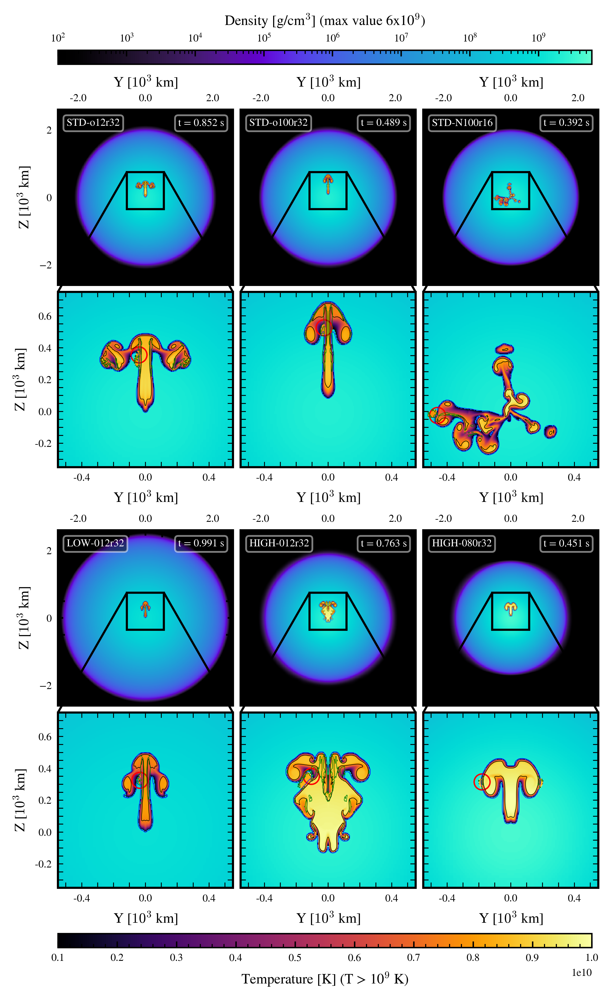
图注：Slices in the $y$-$z$ plane for all six models at the onset of the first detonation trigger, shown at the times indicated in each panel. The upper subpanel of each pair shows the full WD on a density color scale (top colourbar; $\mathrm{g\,cm^{-3}}$; clipped at a maximum of $6 \times 10^9\,\mathrm{g\,cm^{-3}}$), with an inset box indicating the region enlarged in the lower subpanel. The lower subpanel shows the zoomed flame structure on a temperature color scale (bottom colourbar; K; clipped at $T > 10^9\,\mathrm{K}$). In both subpanels, black contours mark the flame progress variable $= 1$ (fully burned material), blue contours mark the flame progress variable $= 0.001$ (leading edge of the flame front), and green contours mark $L/L_\mathrm{CJ} = 1$. Detonation is triggered where the green contours intersect the blue, indicating that the local turbulent flame volume exceeded the critical Chapman-Jouguet scale.
对应解读：建议重点查看的图表 2、3；关键图表逐图导读 图 2/图 3；详细解读中关于湍流 Chapman-Jouguet 判据和爆轰触发构型的核心段落。
入选理由：这是最直接支撑论文主张的图：六个模型在首次爆轰触发时刻的三维切片，明确给出密度、温度、火焰进度变量以及绿色的 \(L/L_CJ=1\) 临界等值线。它能检验爆轰是否确实发生在火焰前沿与湍流 CJ 条件相交的位置，也能比较不同中心密度和点火拓扑是否收敛到类似触发环境，因此科学价值最高。
来源与置信度：\(arxiv_source\)；high；\(arxiv_source\) / main.tex:figure[1]
Fig05
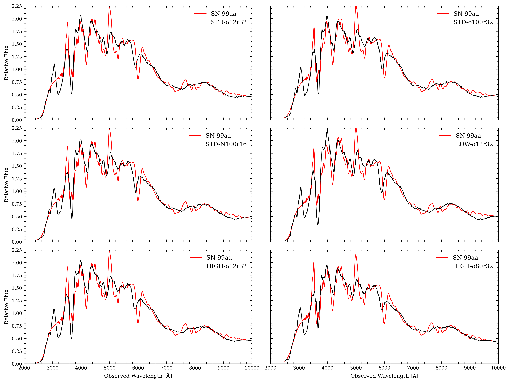
图注：Comparison of synthetic spectra near maximum light (black) with the highest-ranked SNID template match (red) for the six models analyzed here.
对应解读：建议重点查看的图表 6、7；关键图表逐图导读 图 6/图 7；模型拟合中关于峰值合成光谱与 SN 1999aa/99aa 类模板匹配的段落。
入选理由：这张图直接展示六个模型的峰值附近合成光谱与最高排名 SNID 观测模板的比较，是判断作者所谓模型收敛并匹配过亮 SN 1999aa 类事件的关键证据。它对应日报中要求检查 Si II、S II、Ca II、Fe 族线区、连续谱形状以及不同模型谱散布的重点。
来源与置信度：\(arxiv_source\)；high；\(arxiv_source\) / main.tex:figure[5]
Fig03
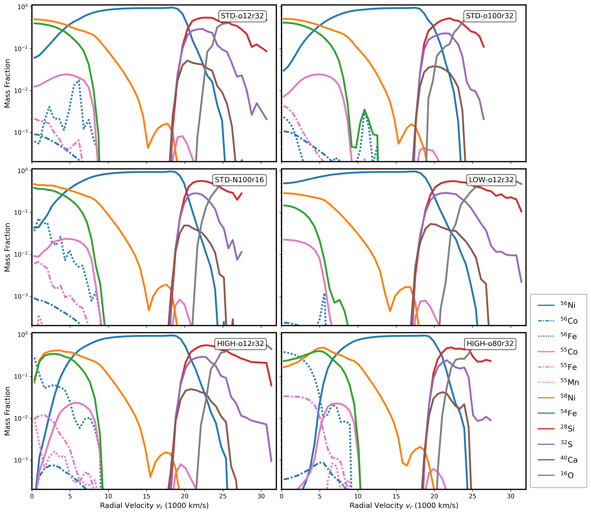
图注：Velocity profiles for major isotopes from a radial average over the domain.
对应解读：建议重点查看的图表 5；关键图表逐图导读 图 5；模型拟合中关于速度分层、铁族元素、中间质量元素和未燃碳氧分布的段落。
入选理由：该图给出主要同位素的径向平均速度剖面，比单纯总产额更能检验爆炸模型是否产生合理的速度层化。日报中特别强调总产额匹配不等于速度分布匹配，而光谱线型对后者敏感，因此这张图是连接核合成输出和光谱诊断的重要证据。
来源与置信度：\(arxiv_source\)；high；\(arxiv_source\) / main.tex:figure[3]
Fig02
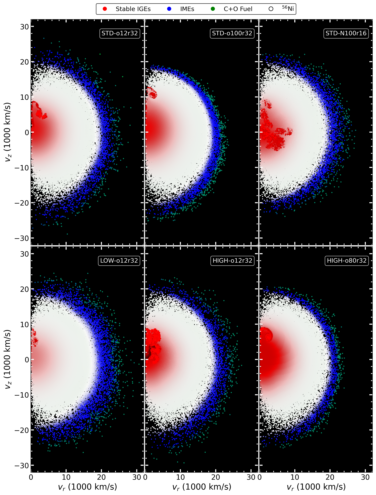
图注：Tracer particles plotted in the z-r velocity space for all six models. The particles are colored on an RGB-W color scale, where red are stable IGEs ($22 \leq Z \leq 30$), green is unburned C$+$O, blue are IMEs (such as $^{28}$Si and $^{32}$S), and white are particles with $^{56}$Ni. For instance, a pink particle would represent stable IGEs and $^{56}Ni$ while a darker red or maroon particle would represent stable and unstable IGEs.
对应解读：建议重点查看的图表 5；关键图表逐图导读 图 5；详细解读中关于早爆轰导致铁族元素、中间质量元素和未燃 C/O 空间分布的段落。
入选理由：该图在 z-r 速度空间中用示踪粒子同时显示稳定铁族、56Ni、中间质量元素和未燃 C+O，可直观看到不同燃烧产物在速度空间中的二维分布和混合程度。相比 Fig03 的径向平均，它保留了非球对称和速度空间结构，对判断三维爆炸产物是否物理合理很有价值。
来源与置信度：\(arxiv_source\)；high；\(arxiv_source\) / main.tex:figure[2]
Fig04
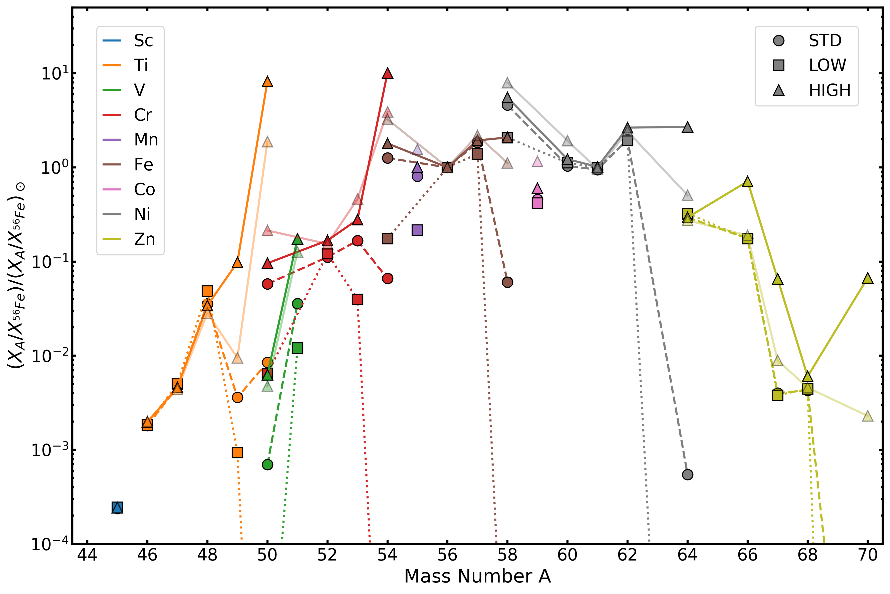
图注：Isotopic abundance ratios of stable iron-peak isotopes to $^{56}$Fe normalized by the solar values from~\(\citet{lodders_2025}.\) Results are shown for four models spanning the progenitor density and ignition-offset parameter space: LOW-o12r32 (squares, dotted lines), STD-o12r32 (circles, dashed lines), HIGH-o12r32 (triangles, solid lines), and HIGH-o80r32 (triangles, solid lines, lighter shading). Isotopes are color-coded by the element indicated in the legend.
对应解读：建议重点查看的图表 5；模型拟合中关于稳定铁族元素、中心密度和电子俘获产物的段落。
入选理由：该图比较稳定铁峰同位素相对太阳丰度的比值，适合检查中心密度变化和中子化过程对稳定铁族产额的影响。它不如触发图、光谱图和速度分布图直接支撑 tDDT 机制与观测匹配，但能补充说明不同 progenitor density 模型在核合成细节上的差异。
来源与置信度：\(arxiv_source\)；high；\(arxiv_source\) / main.tex:figure[4]
强相关工作
这篇工作与经典近钱德拉延迟爆轰模型直接相关。Khokhlov 的延迟爆轰思想、Gamezo 等人的三维模拟、Röpke 与 Seitenzahl 等人的多点火核近钱德拉模型，都展示了先缓燃后爆轰可以产生类似正常 Ia 型超新星的核合成和光谱。但这些工作通常需要经验式爆轰触发条件。本文的贡献是在这一传统框架内替换最不物理的触发步骤。建议检索关键词包括 “Type Ia supernova delayed detonation near Chandrasekhar mass”, “deflagration to detonation transition white dwarf”, “turbulence driven DDT supernova Ia”。
它也和反向观点存在张力。亚钱德拉双爆轰模型、双白矮星并合或碰撞模型同样能解释一部分 Ia 型超新星，并且避免近钱德拉单简并通道在伴星残留、射电/X 射线约束和早期伴星相互作用信号上的困难。近钱德拉模型的优势是高密度电子俘获和稳定铁族元素诊断，潜在适合解释某些星云期谱线；弱点是前身星通道和爆轰触发。本文若能成立，会加强近钱德拉通道的爆炸物理可信度，但并不自动解决前身星形成率问题。可检索 “sub-Chandrasekhar double detonation Type Ia”, “SN Iax failed deflagration”, “single degenerate progenitor constraints Type Ia”。
相似工作：
- https://arxiv.org/abs/2605.21575
- https://ui.adsabs.harvard.edu/abs/2013MNRAS.429.1156S/abstract
- https://ui.adsabs.harvard.edu/abs/2005ApJ...623..337G/abstract
基础理论 / 方法工作：
- https://ui.adsabs.harvard.edu/abs/1991A%26A...245L..25K/abstract
- https://ui.adsabs.harvard.edu/abs/1982ApJ...253..785N/abstract
- https://ui.adsabs.harvard.edu/abs/1985ApJ...294L..17B/abstract
相反观点 / 张力线索：
- https://ui.adsabs.harvard.edu/abs/2010ApJ...714L..52F/abstract
- https://ui.adsabs.harvard.edu/abs/2010Natur.463...61G/abstract
- https://ui.adsabs.harvard.edu/abs/2013MNRAS.429.2287K/abstract
9. Polarized 3D Synthetic Turbulence I: Magnetic Field Line Random Walk
- 来源：arXiv / astro-ph.HE
- 链接：https://arxiv.org/abs/2605.22729v1
- 作者：Matthieu Bouchet, Yoann Génolini, Silvio S. Cerri, Alexandre Marcowith, Philipp Mertsch
- 评分：novelty 7/10，importance 8/10，relevance 8/10，final 8.70/10
- 推荐理由：研究不同MHD极化模式下磁力线随机游走，对宇宙线输运和湍流散射建模有直接影响；虽偏理论/等离子体方法，但对高能粒子传播模型具有较高参考价值。
中文题目：偏振三维合成湍流 I：磁力线随机游走
做了什么：这篇文章研究一个看似技术、但会直接影响宇宙线输运和等离子体混合的问题：在合成磁湍流中，磁扰动的偏振方式会怎样改变磁力线随机游走。作者构造了具有 Alfvén 型、磁声型以及通常文献中使用的随机各向同性偏振的三维合成湍流，追踪磁力线并计算沿平均磁场方向的运行扩散系数。主要结论是，磁力线弥散不仅取决于扰动强度和功率谱，也强烈取决于偏振；尤其在磁声型偏振中，渐近扩散系数随湍流水平的标度接近 \((\delta B/B_0)^4\)，而随机偏振的准线性结果通常是 \((\delta B/B_0)^2\)。
为什么重要：很多宇宙线传播、冲击加速和高能天体等离子体模型把磁力线随机游走当作一个由湍流幅度和相关长度控制的背景过程，但本文说明，若合成湍流没有正确保留 MHD 模式的偏振结构，磁力线扩散可能会被系统性高估或低估。这会传导到垂直扩散、粒子逃逸时间、源区形态和辐射区混合效率等推断。
理论 / 观测 / 仪器方法价值：方法上的价值在于把合成湍流从“给定谱加随机偏振”的简化推进到“给定谱加物理偏振”的可控实验，并用运行扩散系数诊断早期弹道、亚扩散和晚期扩散阶段。理论上的价值在于检验 Corrsin 假设在低湍流水平下对磁力线亚扩散阶段的适用性，并给出不同偏振导致不同振幅标度的清晰例子。
为什么应该关注：如果你使用 test-particle 模拟、半解析宇宙线扩散系数、MHD 盒子湍流或合成湍流来研究粒子输运，这篇文章提醒你：只匹配功率谱不够，偏振投影也可能是一阶物理输入。它还解释了为什么某些高分辨率 MHD 湍流模拟中的磁力线亚扩散看起来不像传统随机偏振合成湍流的结果。
展开详细解读：文章讲解、背景、理论、重点章节、图表与相关工作
文章详细讲解
科学问题：磁力线随机游走是带电粒子垂直输运的几何骨架。粒子在小回旋半径和强磁化极限下倾向于沿局域磁场运动，因此磁力线本身在横向的漂移会影响宇宙线垂直扩散、热传导、等离子体混合和冲击附近粒子逃逸。传统合成湍流常把磁扰动写成许多 Fourier 模式叠加，并给每个模式一个随机偏振，使其满足 \(\nabla\cdot\mathbf{B}=0\)。这种做法方便，但未必对应实际 MHD 中 Alfvén 模式、slow 模式和 fast 模式的偏振几何。
作者怎么做：论文构造了三维合成磁湍流，在相同功率谱、相同扰动强度 \(\delta B/B_0\) 和相同平均磁场 \(\mathbf{B}_0\) 的条件下，改变每个 Fourier 模式的偏振方向。比较对象包括 Alfvén 型偏振、磁声型偏振和文献常用的随机各向同性偏振。随后作者把大量磁力线从初始平面出发，沿平均磁场方向积分轨迹 \(\mathbf{x}_\perp(z)\)，用均方横向位移和运行扩散系数 \(D_{\rm FL}(z)\) 来区分弹道、亚扩散和渐近扩散阶段。
关键结果：最重要的结果是偏振结构显著改变磁力线弥散。随机偏振情形接近准线性预期，渐近磁力线扩散系数随扰动强度近似按 \((\delta B/B_0)^2\) 标度；而磁声型偏振给出更强的抑制，论文摘要指出渐近扩散系数按 \((\delta B/B_0)^4\) 标度。这意味着同一个磁能谱和同一个 \(\delta B/B_0\)，只要偏振不同，磁力线横向散布就可能差很多。作者还发现，亚扩散阶段对偏振尤其敏感；在低湍流水平下，基于 Corrsin 假设的理论描述能够较好再现实验结果。
局限和下一步：这仍然是合成湍流研究，不是完全自洽的 MHD 或 kinetic 湍流。合成场可精确控制谱和偏振，但缺少真实湍流中的非线性相干结构、间歇性、动态演化和模式耦合。论文也提醒读者，MHD 模拟中看到的磁力线亚扩散可能受有限盒子、有限惯性区、模式混合和投影选择影响。下一步自然是把这种偏振可控的合成模型与真实 MHD 数据、粒子轨道模拟以及各向异性 Goldreich-Sridhar 型谱结合，进一步判断哪些结论能直接用于宇宙线输运系数。
背景知识
研究对象是磁化湍流中的磁力线随机游走。给定一个平均磁场 \(\mathbf{B}_0\) 和叠加的扰动 \(\delta\mathbf{B}\)，磁力线不是直线，而是在垂直于 \(\mathbf{B}_0\) 的平面内随机偏移。这个几何过程常被称为 field-line random walk，简称 FLRW。它本身不是粒子扩散，但在强磁化粒子沿磁力线快速运动时，FLRW 会成为粒子垂直扩散的重要组成部分。
历史上，FLRW 与宇宙线扩散、太阳风粒子传播和星际介质湍流密切相关。早期准线性理论通常在小扰动 \(\delta B/B_0\ll1\) 下展开，得到横向位移与磁扰动二点相关函数之间的关系。后来，人们发现仅靠准线性理论不足以描述强湍流、长时间非线性去相关、磁岛和相干结构，于是发展出 Corrsin 假设、非线性导引中心理论以及各种 test-particle 数值实验。
本文所在的问题背景是：合成湍流被广泛用作粒子输运模拟的输入。合成湍流可以避免直接 MHD 模拟的有限分辨率限制，并允许在很宽的尺度范围内生成指定功率谱。但是常见实现往往关注谱指数、外尺度、内尺度和归一化，而把偏振作为随机变量处理。对于真实 MHD 波模而言，偏振不是任意的；Alfvén 模式的扰动方向、磁声模式的扰动方向与波矢 \(\mathbf{k}\) 和平均磁场 \(\mathbf{B}_0\) 有明确几何关系。
为什么现在值得重看：高分辨率 MHD 模拟和高能天体粒子输运研究越来越依赖精细的湍流输入。若磁力线扩散系数对偏振敏感，那么过去只用随机偏振合成场得到的垂直扩散系数、逃逸时间或源区尺寸，可能包含模型系统误差。本文的价值正是在一个可控数值实验中隔离“偏振”这一因素，避免把谱效应、振幅效应和模式几何效应混在一起。
一个常见误区是把“各向同性磁能谱”误认为“所有磁力线统计都已确定”。实际上，磁场是矢量场，除了标量功率谱 \(P(k)\)，还需要知道扰动相对于 \(\mathbf{k}\) 和 \(\mathbf{B}_0\) 的投影结构。另一个误区是把磁力线扩散和粒子扩散直接等同；粒子还受到平行散射、镜像力、漂移、有限 Larmor 半径和时间依赖电磁场影响。因此本文结论应先理解为磁几何输运的结果，再谨慎传递到粒子输运。
基础理论 / 方法脉络
最基础的物理图像是：磁力线的切向方向由局域磁场给定。如果平均磁场沿 \(z\) 方向，即 \(\mathbf{B}_0=B_0\hat{\mathbf{z}}\)，且扰动较小，那么磁力线横向斜率近似由 \(\delta\mathbf{B}_\perp/B_0\) 决定。沿 \(z\) 积分这个随机斜率，就得到横向位移 \(\mathbf{x}_\perp(z)\)。因此 FLRW 的本质是随机斜率的积分过程，其扩散或亚扩散取决于磁扰动沿磁力线采样时的相关性如何衰减。
在合成湍流中，磁扰动通常写成 Fourier 模式叠加。每个模式有波矢 \(\mathbf{k}\)、相位、振幅和偏振向量。无散条件 \(\nabla\cdot\delta\mathbf{B}=0\) 要求每个模式的扰动满足 \(\mathbf{k}\cdot\delta\mathbf{B}_{\mathbf{k}}=0\)，但这只给出一个二维偏振平面，并没有唯一指定偏振方向。随机偏振就是在这个平面内随机选方向；MHD 偏振则进一步要求扰动方向符合 Alfvén 或磁声模式的几何特征。
本文关心的关键量是均方横向位移 \(\langle\Delta x_\perp^2(z)\rangle\) 和运行磁力线扩散系数 \(D_{\rm FL}(z)\)。如果 \(\langle\Delta x_\perp^2\rangle\propto z^2\)，这是短距离弹道阶段；如果 \(\langle\Delta x_\perp^2\rangle\propto z^\mu\) 且 \(0<\mu<1\)，则为亚扩散；如果 \(\langle\Delta x_\perp^2\rangle\propto z\)，则可定义渐近扩散系数。论文特别强调，亚扩散阶段和渐近系数的振幅标度都会随偏振配置改变。
Corrsin 假设提供了连接场相关函数与轨道统计的近似方法。核心思想是把沿随机磁力线采样的相关函数用 Eulerian 磁场相关函数和横向位移概率分布卷积起来。这允许在低湍流水平下从给定功率谱和偏振投影估计 \(D_{\rm FL}(z)\)。本文的一个亮点是指出该假设在低 \(\delta B/B_0\) 的亚扩散阶段表现不错，但不同偏振会改变相关函数的有效投影，因此改变最终标度。
主要系统误差来自有限模式数、有限盒子、最大和最小波数截断、初始磁力线采样、周期边界以及是否真正实现了目标偏振。另一个常见退化是谱形与偏振的退化：改变谱指数或外尺度也能改变运行扩散系数的形状，容易被误读为偏振效应。因此可信比较需要在相同谱、相同归一化和相同数值分辨率下只改变偏振。
公式与推导
磁力线由局域磁场方向定义。若平均磁场取 \(\mathbf{B}_0=B_0\hat{\mathbf{z}}\)，磁力线方程可写为
这里 \(\mathbf{x}_\perp\) 是垂直于平均场的坐标，近似要求 \(\delta B/B_0\ll1\) 且 \(B_z\simeq B_0\)。这一步说明横向位移是磁扰动横向分量的积分。
对上式积分得到横向位移
若对许多初始磁力线、随机相位或湍流实现取平均，就可计算均方位移 \(\langle\Delta x_\perp^2(z)\rangle\)。
运行扩散系数定义为
其中因子 \(1/2\) 对应一个横向方向；若使用两个横向方向之和，规范可能改为 \(1/4\)。当 \(D_{\rm FL}(z)\) 在大 \(z\) 下趋于常数时，该常数就是渐近磁力线扩散系数。
合成湍流可写为 Fourier 叠加
这里 \(A_n\) 由目标功率谱设定，\(\phi_n\) 是随机相位，\(\boldsymbol{\epsilon}_n\) 是偏振向量。本文的核心控制量正是 \(\boldsymbol{\epsilon}_n\)：随机偏振、Alfvén 型偏振和磁声型偏振在相同 \(A_n\) 下会给出不同的 FLRW。
准线性极限下，可把磁力线路径近似为未扰动直线，从而有
其中 \(C_\perp(s)=\langle\delta B_x(0)\delta B_x(s\hat{\mathbf{z}})\rangle\) 是沿平均场方向的横向磁场相关函数。这说明扩散系数由相关函数面积决定。
对应的渐近扩散系数为
若相关长度固定且 \(C_\perp\propto \delta B^2\)，则得到常见标度 \(D_{\rm FL}\propto (\delta B/B_0)^2\)。本文指出这种标度适合随机偏振准线性情形，但不普适。
Corrsin 型闭合把沿随机路径的相关函数写成 Eulerian 谱与位移分布的卷积，典型形式为
其中 \(C_{\rm L}\) 是沿磁力线采样的 Lagrangian 相关函数，\(C_{\rm E}\) 是固定空间点的 Eulerian 相关函数，\(P\) 是横向位移概率密度。偏振通过 \(C_{\rm E}\) 中的投影因子进入。
若用谱表示相关函数，则可写成
其中 \(P_B(\mathbf{k})\) 是磁能谱，\(\Pi_\perp(\mathbf{k})\) 是由偏振决定的横向投影因子，\(k_\parallel\) 是沿 \(\mathbf{B}_0\) 的波数。本文结果可理解为：不同 \(\Pi_\perp\) 改变了相关函数面积和非线性去相关方式。
对磁声型偏振，某些一阶横向随机斜率贡献会因几何投影被抑制，渐近扩散由更高阶项控制，可概括为
其中 \(\ell_c\) 是相关长度量级。这一式子不是普通准线性 \((\delta B/B_0)^2\) 标度，而是本文最值得检查的物理诊断：偏振可以改变扰动展开中最低非零阶数。
模型拟合 / 应用方法
这类工作中的“拟合”主要不是拟合天文观测数据，而是从数值实验的磁力线统计量中估计输运标度。最直接的拟合量是 \(\langle\Delta x_\perp^2(z)\rangle\) 随 \(z\) 的幂律指数和运行扩散系数 \(D_{\rm FL}(z)\) 的平台值。通常会在不同 \(z\) 区间分别拟合弹道、亚扩散和扩散阶段，避免把过渡区混入渐近平台。
参数估计的关键是对湍流实现、初始磁力线数量和模式采样做平均。误差条应反映 realization-to-realization scatter，而不只是单个实现中磁力线数目的统计误差。若模式数不足，某些方向的相干结构会在长距离上造成假平台或假亚扩散；若积分距离接近盒子周期长度，周期性也可能污染 \(D_{\rm FL}(z)\)。
退化关系主要有三类。第一，湍流振幅 \(\delta B/B_0\) 与相关长度 \(\ell_c\) 退化，因为 \(D_{\rm FL}\) 的量纲通常是长度，很多标度可写成 \(\ell_c f(\delta B/B_0)\)。第二，谱指数和偏振投影退化，二者都会改变沿 \(z\) 的相关函数衰减。第三，早期亚扩散指数与拟合区间选择退化，如果起点过短会混入弹道行为，终点过长会混入渐近扩散。
残差诊断应重点看 \(D_{\rm FL}(z)\) 是否真的趋于常数，而不是只看 \(\langle\Delta x_\perp^2\rangle\) 的视觉斜率。对于磁声型偏振，若声称 \((\delta B/B_0)^4\) 标度，需要在对数坐标下拟合 \(D_{\rm FL}^{\infty}\) 对 \(\delta B/B_0\) 的斜率，并检查低振幅区是否受数值噪声或有限模式数影响。对于随机偏振，拟合斜率应接近 \(2\)，否则说明准线性区间或谱归一化可能有问题。
模型可能失效的场景包括强湍流 \(\delta B/B_0\sim1\)、高度各向异性湍流、存在大尺度磁场弯曲、压缩性强且 \(B_z\) 显著波动的情况。在这些情况下，近似 \(B_z\simeq B_0\) 和静态合成场假设都可能不足。实际应用到宇宙线粒子时，还要进一步拟合粒子平行散射率、有限 Larmor 半径平均和时间去相关；FLRW 只是完整输运张量的一部分。
重点章节 / 结果段落怎么读
数据/样本构造部分应首先看作者如何生成三维合成湍流：波数范围、谱形、模式数、相位抽样、归一化方式以及如何保证 \(\nabla\cdot\mathbf{B}=0\)。读者要特别确认不同偏振实验之间除 \(\boldsymbol{\epsilon}_n\) 外是否保持完全相同，否则偏振效应可能被谱或振幅差异污染。
偏振定义部分是全文核心。建议仔细读 Alfvén 型、磁声型和随机偏振的几何定义，尤其是偏振向量相对于 \(\mathbf{k}\) 与 \(\mathbf{B}_0\) 的投影。这里决定了后面为什么相同 \(\delta B/B_0\) 会产生不同 \(D_{\rm FL}\)。
磁力线积分与诊断量部分要看数值积分步长、初始条件、平均样本量和运行扩散系数定义。不同文献对一维横向扩散和二维横向扩散的规范因子不同，比较数值大小时要确认 \(D_{\rm FL}\) 的定义。
主结果部分应按两条线阅读：一条是 \(D_{\rm FL}(z)\) 随距离的形状，另一条是渐近 \(D_{\rm FL}^{\infty}\) 随 \(\delta B/B_0\) 的标度。前者说明输运阶段，后者说明扰动展开的最低有效阶数。
讨论和稳健性部分要看作者如何将合成湍流结果与高分辨率 MHD 模拟比较。尤其要注意他们对 MHD 模拟中亚扩散阶段的警告：相似的亚扩散曲线不一定意味着相同物理机制，也可能反映偏振、有限惯性区或数值投影选择。
建议重点查看的图表
- 湍流偏振几何示意图或模式定义图：重点看 \(\boldsymbol{\epsilon}\)、\(\mathbf{k}\) 和 \(\mathbf{B}_0\) 的相对方向，确认不同模式是否都满足 \(\mathbf{k}\cdot\boldsymbol{\epsilon}=0\)。
- 磁力线轨迹可视化图：比较随机偏振、Alfvén 型偏振和磁声型偏振下横向散布的直观差异，注意不要把单个 realization 的形态当作统计结论。
- \(\langle\Delta x_\perp^2(z)\rangle\) 随 \(z\) 的图：看短距离 \(z^2\)、中间亚扩散和长距离线性增长是否清楚分离。
- \(D_{\rm FL}(z)\) 的运行曲线：重点看是否存在平台，平台位置是否随 \(\delta B/B_0\) 和偏振改变。
- 渐近 \(D_{\rm FL}^{\infty}\) 对 \(\delta B/B_0\) 的对数图：检查随机偏振斜率是否接近 \(2\)，磁声型偏振斜率是否接近 \(4\)。
- Corrsin 假设理论线与数值结果对比图：看低湍流水平下是否吻合，以及偏离从哪个 \(\delta B/B_0\) 开始明显。
- 与 MHD 模拟对比的图或表：重点看亚扩散指数、归一化和可比尺度范围，而不只是曲线形状是否相似。
关键图表逐图导读
图 1：如果论文给出偏振构造示意，横轴和纵轴通常不是数据坐标，而是展示 \(\mathbf{k}\)、\(\mathbf{B}_0\) 与偏振向量 \(\boldsymbol{\epsilon}\) 的几何关系。读图时要确认 Alfvén 型偏振是否主要垂直于 \(\mathbf{k}\)-\(\mathbf{B}_0\) 平面，磁声型偏振是否位于相关平面内，并且两者都满足无散条件。陷阱是把 MHD 波的速度偏振和磁扰动偏振混为一谈。
图 2：磁力线轨迹图通常以 \(z\) 为推进方向，以 \(x\) 或 \(y\) 为横向坐标，或给出三维线束。模型线不存在时，重点看不同偏振下线束宽度随 \(z\) 的增长。读图陷阱是单个线束图容易受随机相位影响，不能代替均方位移统计。
图 3：均方横向位移图通常在双对数坐标显示 \(\langle\Delta x_\perp^2\rangle\) 对 \(z\)。参考斜率 \(2\)、\(1\) 和小于 \(1\) 的线分别对应弹道、普通扩散和亚扩散。应检查各偏振曲线是否在相同 \(z\) 范围内比较，以及过渡区是否被错误解释为稳定幂律。
图 4：运行扩散系数 \(D_{\rm FL}(z)\) 图是判断渐近扩散的关键。横轴为沿平均场距离 \(z\)，纵轴为 \(D_{\rm FL}\)。若曲线在大 \(z\) 达到平台，平台高度才可用于比较不同 \(\delta B/B_0\)。若曲线仍在下降或上升，则所谓渐近系数可能依赖有限积分长度。
图 5：\(D_{\rm FL}^{\infty}\) 对 \(\delta B/B_0\) 的标度图应在双对数坐标阅读。数据点是数值实验估计，直线可能表示 \((\delta B/B_0)^2\) 或 \((\delta B/B_0)^4\) 参考标度。关键是斜率而非绝对归一化；低振幅点可能受数值精度限制，高振幅点可能超出准线性假设。
图 6：理论预测与模拟比较图若包含 Corrsin 模型线，应检查理论线是否只在低 \(\delta B/B_0\) 或中间 \(z\) 范围有效。若高振幅处偏离，不应简单称为理论失败，而可能意味着 Corrsin 闭合中的独立性假设、Gaussian 位移假设或弱湍流近似已不适用。
论文原图 / 可嵌入图片
Fig04
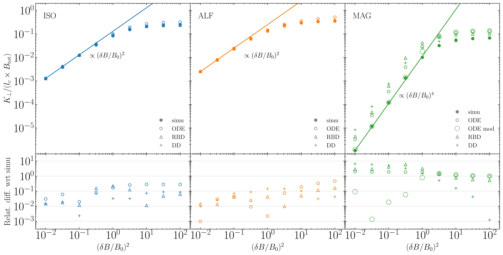
图注：Converged value $K_\perp$ of the perpendicular FL diffusion coefficient in the $\tau$ variable as a function of the turbulence strength. Each panel corresponds from left to right to the polarization cases: ISO, ALF and MAG. Filled circles are the values obtained from the simulations (filled arrows of Fig.~\ref{fig:rdc_tau}), empty circles denote the simulation results, empty triangles the RBD limit, and crosses the DD limit. The absolute values of the relative differences with respect to the simulation are shown with the same legend in the lower panels. In the MAG case only, large open circles correspond to the results from the modified set of ODE, Eqs.~\eqref{eq:sigx2_Dperp_tau_prescription}-\eqref{eq:Dperp_int_tau_prescription}. Solid lines show the scalings $(\delta B/B_0)^2$ and $(\delta B/B_0)^4$.
对应解读：对应“建议重点查看的图表”第5项，以及“图5：D_FL^∞ 对 δB/B0 的标度图”和模型拟合段落中关于斜率2与4的检验。
入选理由：这是验证论文核心结论最关键的图：直接给出渐近垂直磁力线扩散系数随湍流强度的标度，并在ISO、ALF、MAG三种偏振下比较模拟、ODE、RBD/DD近似及相对差异。图中明确标出(δB/B0)^2和(δB/B0)^4参考标度，正好支撑日报强调的随机偏振近二次标度、磁声型偏振近四次标度，以及低/高振幅区理论偏离的判断。
来源与置信度：\(arxiv_source\)；high；\(arxiv_source\) / main.tex:figure[4]
Fig03
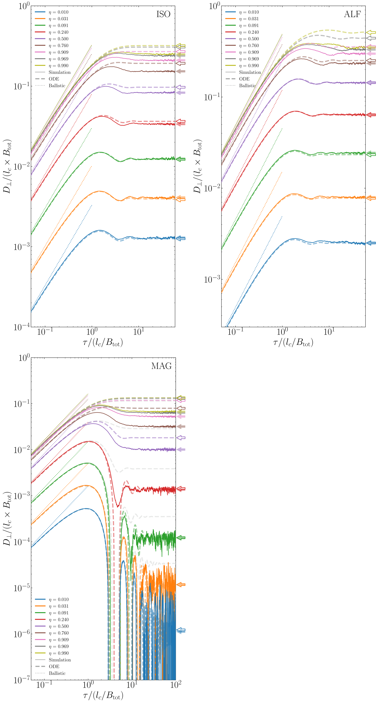
图注：Running FL diffusion coefficient ${ D}_{\perp}$ as a function of $\tau$ for the three polarization cases considered in the paper: ISO, ALF and MAG. The different colors correspond to various turbulent levels $\eta$. We compare the results of the semi-analytical ODE approach (thick-dashed lines) with those of numerical simulations (thin-full lines). The ballistic regimes are displayed with thin dotted lines. Asymptotic values for the two cases, ODE and simulations, are indicated by empty and filled arrows, respectively. In the MAG case only, dashed colored lines correspond to the predictions of the modified set of ODE equations (Eq.~\eqref{eq:sigx2_Dperp_tau}--\eqref{eq:Dpara_int_tau}), while the ones of the original set (Eq.~\eqref{eq:sigx2_Dperp_tau_prescription}--\eqref{eq:Dperp_int_tau_prescription}) are shown with light grey dashed lines.
对应解读：对应“建议重点查看的图表”第4项和第6项，以及“图4：运行扩散系数D_FL(z)图”和“图6：Corrsin假设理论线与数值结果对比图”。
入选理由：该图展示三种偏振下运行FL扩散系数随τ的演化，包含不同湍流水平、数值模拟曲线、半解析ODE理论线、弹道参考线和渐近值箭头。它最能判断曲线是否形成平台、平台如何随δB/B0和偏振改变，并直接检验Corrsin/ODE类理论在不同振幅下与模拟的一致性。
来源与置信度：\(arxiv_source\)；high；\(arxiv_source\) / main.tex:figure[3]
Fig01
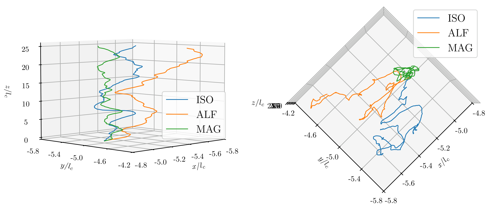
图注：3D integrated magnetic field lines trajectories plotted over few correlations lengths for $\eta=0.03$. The three colors correspond to the three polarization cases used in the paper: isotropic, Alfvènic and magnetosonic. Each case corresponds to an independent realization of the turbulence. Top plot: Z profiles. Bottom plot: X-Y plan projection.
对应解读：对应“建议重点查看的图表”第2项，以及“图2：磁力线轨迹图”的逐图导读。
入选理由：这张图直观比较ISO、ALF和MAG三种偏振下磁力线轨迹及其在X-Y平面的投影，是理解偏振如何改变横向散布的入口图。虽然单个realization不能替代统计量，但它能帮助读者把后续D_FL平台和标度差异与实际线束形态联系起来。
来源与置信度：\(arxiv_source\)；high；\(arxiv_source\) / main.tex:figure[1]
Fig05
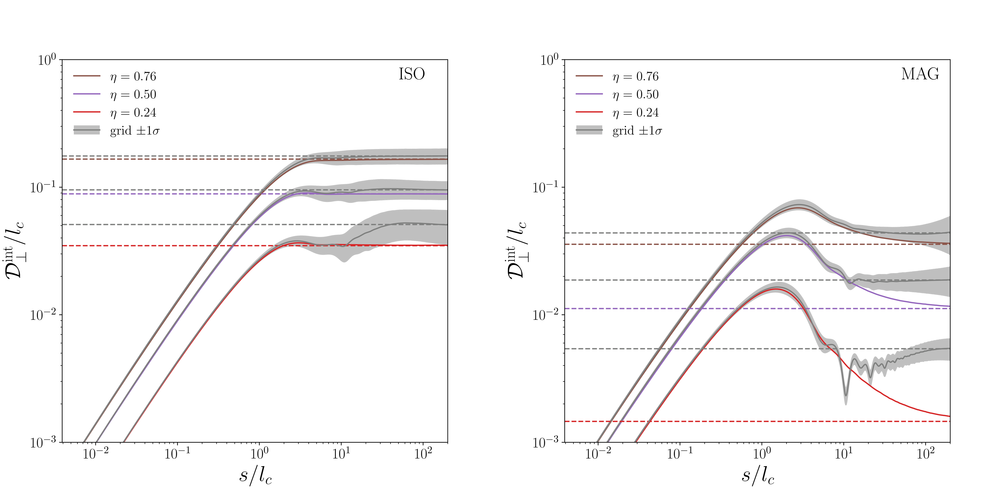
图注：Running FL diffusion coefficients computed using Eq.~\(\eqref{eq:def_int_s}\) in synthetic turbulence simulation using both the harmonic method (colored lines) and the grid method with $L_{\rm inj}=L_{\rm box}/2$ (gray lines). The shaded region around the gray lines shows the standard deviation estimated from ten different realizations. The asymptotic values are shown with horizontal lines. The left panel corresponds to the ISO polarization case, the right panel shows the MAG case. The discrepancy between the grid and harmonic methods, particularly evident in the MAG case and in general for small $\eta$ values, highlights the bias that can arise in computing FL diffusion when the correlation is too close to the box size.
对应解读：对应模型拟合段落中关于有限盒子、realization scatter、假平台和系统误差的讨论，也关联“建议重点查看的图表”第4项的运行扩散系数诊断。
入选理由：该图比较harmonic方法与grid方法得到的运行扩散系数，并给出十个realization的标准差阴影区和渐近水平线，特别指出MAG和小η时盒子尺度/相关长度接近导致的偏差。它是候选图中最能支撑日报关于系统误差、有限积分长度和假平台风险的图。
来源与置信度：\(arxiv_source\)；high；\(arxiv_source\) / main.tex:figure[5]
Fig02
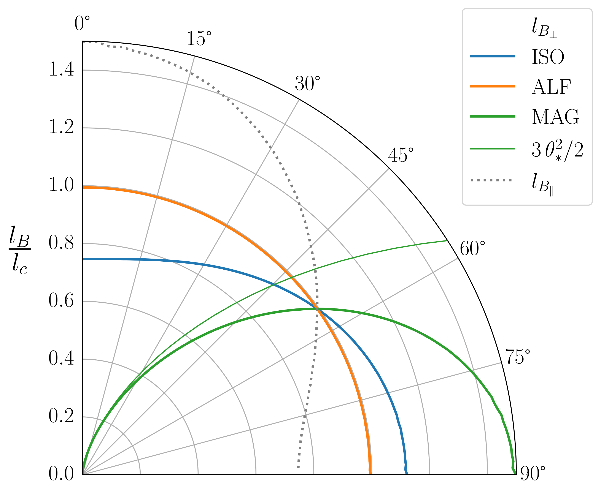
图注：Correlation length $l_{B_{\perp}}(\theta_*)$ (see Eq.~\eqref{eq:lperp}) and $l_{B_{\parallel}}(\theta_*)$ (see Eq.~\eqref{eq:lpara}) represented in polar coordinates for the polarization configurations discussed in the paper. Note that $l_{B_{\parallel}}$ is only relevant for the ISO and MAG cases for which it is the same.
对应解读：部分对应“建议重点查看的图表”第1项，即不同偏振构型的几何/模式定义；也支撑对偏振投影和相关长度退化的解释。
入选理由：虽然它不是简单的k、B0、ε矢量示意图，但它以极坐标展示不同偏振配置下横向和纵向磁场相关长度的角向依赖，能说明偏振几何不仅改变振幅投影，也改变沿场相关结构。这有助于理解为什么相同功率谱和δB/B0会产生不同FLRW输运。
来源与置信度：\(arxiv_source\)；high；\(arxiv_source\) / main.tex:figure[2]
Fig12
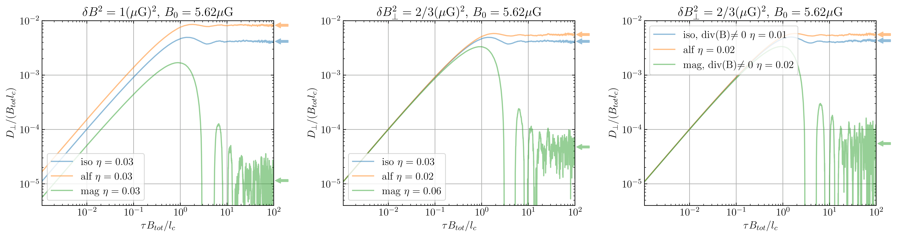
图注：Transverse running diffusion coefficients $D_{\perp}(\tau)$ for different polarizations from harmonic simulations at $B_0 = 10^{0.75} \approx 5.62 \rm{\mu G}$. The arrows on the right hand side of each plot point to the asymptotic value. Left panel: same $\eta = \delta B^2/(\delta B^2 + B_0^2)$ for each polarization. Middle panel: at fixed $B_0$, $\delta B$ is adjusted to reach the same $\delta B_{\perp}$ for each polarization. Right panel: same configuration as the middle panel, but we set to 0 the parallel component of the perturbed magnetic field in the magnetosonic case ($\delta B_\parallel =0$), hence ${\rm div}(B)\neq 0$.
对应解读：对应模型拟合段落中关于偏振投影、δB_perp归一化、B_parallel扰动和模型失效条件的讨论。
入选理由：该图在固定η、固定δB_perp以及人为去除MAG平行扰动分量三种设定下比较运行扩散系数，能诊断偏振差异究竟来自总扰动强度、横向扰动强度还是平行分量/无散条件。它对解释MAG情形为何特殊、以及错误归一化可能如何误导输运比较很有价值。
来源与置信度：\(arxiv_source\)；high；\(arxiv_source\) / main.tex:figure[12]
强相关工作
这篇工作和宇宙线输运中的传统 FLRW、准线性理论和非线性导引中心理论直接相关。可检索关键词包括 “field line random walk cosmic rays”、“Corrsin hypothesis magnetic turbulence”、“synthetic turbulence polarization cosmic ray transport” 和 “magnetostatic turbulence test particle simulations”。与 Jokipii 早期宇宙线扩散理论相比，本文不是重新推导粒子扩散，而是指出磁场几何随机游走本身依赖偏振结构。
它也和近年来直接 MHD 模拟中的磁力线弥散研究有关。MHD 模拟天然包含模式耦合和各向异性，但不容易分离某一种物理因素；合成湍流则相反，可控但理想化。本文的张力点在于：若 MHD 模拟显示类似磁声型偏振的亚扩散，不能立刻断言真实湍流就是某个简单模式；还需要检查谱各向异性、有限盒子、间歇结构和模式分解。建议进一步检索 “MHD turbulence field line diffusion subdiffusion”、“Goldreich Sridhar turbulence field line wandering” 和 “compound diffusion cosmic rays”。
相似工作：
- https://arxiv.org/abs/2605.22729
基础理论 / 方法工作：
- https://ui.adsabs.harvard.edu/abs/1966ApJ...146..480J/abstract
- https://ui.adsabs.harvard.edu/abs/1999ApJ...520..204G/abstract
相反观点 / 张力线索：
（未提供）
10. A Weak Fe K$β$ Emission Line in the Broad-Line Radio Galaxy 3C 111 Observed with XRISM: An Ionized Wind Absorption Feature?
- 来源：arXiv / astro-ph.HE
- 链接：https://arxiv.org/abs/2605.22388v1
- 作者：Kouichi Hagino, Motoki Kino, Lukasz Stawarz, Kenzo Kawamura, Kazuhiro Hada, Hirofumi Noda
- 评分：novelty 7/10，importance 8/10，relevance 8/10，final 8.70/10
- 推荐理由：XRISM/Resolve对宽线射电星系3C 111的高分辨X射线谱揭示异常弱Fe Kβ并可能指示电离盘风吸收；AGN喷流-盘风能量学和XRISM能力展示均有价值，值得阅读。
中文题目：XRISM 观测宽线射电星系 3C 111：异常偏弱的铁 Kβ 发射线是否来自电离盘风吸收？
做了什么：这篇论文用 XRISM/Resolve 的高能谱分辨率重新观察宽线射电星系 3C 111 的铁 K 能段，发现中性或低电离铁的 Kβ 发射线相对于 Kα 明显偏弱。作者提出，一个蓝移的高电离铁吸收线可能正好叠加在 Kβ 能量附近，把本应出现的 Kβ 光子“吃掉”了一部分。若把吸收线解释为 Fe XXVI 或 Fe XXV，对应外流速度分别约为 \(4600\,\mathrm{km\,s^{-1}}\) 或 \(17200\,\mathrm{km\,s^{-1}}\)。风的动能功率估计为 \(10^{41}\)–\(10^{44}\,\mathrm{erg\,s^{-1}}\)，但受吸收体距离和几何因子限制很大。核心结论是：3C 111 中可能同时存在喷流和盘风，而风功率大概率低于喷流功率。
为什么重要：3C 111 是研究喷流—吸积盘耦合的近邻宽线射电星系样本之一。过去许多活动星系核的高电离外流主要来自 CCD 或光栅谱的有限分辨率证据，线识别和速度估计常有歧义。XRISM/Resolve 能在铁 K 能段给出几 \(\mathrm{eV}\) 级能量分辨率，使窄线形状、线心能量、Kα/Kβ 强度比和吸收线重叠问题可以被更严格地检验。这篇文章的重要性不在于给出最终确定的风参数，而在于展示了高分辨率 X 射线谱如何把一个“弱发射线”问题转化为对电离外流的诊断。
理论 / 观测 / 仪器方法价值：对观测而言，论文提供了 XRISM 在 \(6\)–\(8\,\mathrm{keV}\) 铁 K 能段解析窄发射线和潜在吸收线的一个实战案例。对理论而言，它把射电响亮活动星系核中的盘风功率与喷流功率进行同源比较，检验“喷流主导能量输出、盘风次之”的图像。对方法而言，它提醒读者不能只用固定的中性铁 Kα/Kβ 理论线比解释残差；高电离吸收、线混合、连续谱曲率和反射模型选择都可能改变对铁线区的物理解读。
为什么应该关注：如果你关心活动星系核反馈，3C 111 这种有强喷流的系统正是检验喷流反馈与风反馈相对重要性的关键对象。如果你关心 XRISM、Athena 或未来高分辨率 X 射线光谱任务，这篇文章说明铁 K 能段中看似很小的线比异常可以携带外流速度、离化状态和能量预算信息。如果你做谱拟合，它也是一个很好的警示：统计上显著的弱线或残差未必意味着丰度异常，可能是吸收和发射在能量空间中的重叠。
展开详细解读：文章讲解、背景、理论、重点章节、图表与相关工作
文章详细讲解
科学问题：论文聚焦于 3C 111 的铁 K 能段，尤其是 Fe Kα 与 Fe Kβ 发射线之间的相对强度。对于冷的或低电离铁，Kβ 与 Kα 的通量比在原子物理上有相对稳定的预期值，通常约为十几个百分点量级。如果观测到 Kα 清楚而 Kβ 明显偏弱，就需要解释：是铁的离化态、丰度、反射几何、连续谱模型错了，还是有另一个谱线成分在 Kβ 附近造成了吸收？这篇文章的核心问题就是：XRISM 看到的弱 Fe Kβ 是否是高电离盘风吸收造成的。
作者怎么做：作者使用 XRISM 的 Resolve 微量热计谱仪观测 3C 111，在铁 K 能段建立连续谱加发射线模型，并比较 Fe Kα 与 Fe Kβ 的预期关系。Resolve 的优势是能量分辨率远高于传统 CCD，可以把窄发射线、吸收线和仪器响应的影响分开得更干净。作者先确认 Fe Kα 线显著存在，再检查 Kβ 能段是否与给定 Kα 强度所预期的 Kβ 通量一致。发现 Kβ 偏弱后，他们加入蓝移的高电离铁吸收线成分，分别考虑吸收线来自 Fe XXVI 或 Fe XXV 的可能性。
关键结果：在 Fe XXVI 解释下，线的静止能量较高，因此所需蓝移较小，对应外流速度约 \(4600\,\mathrm{km\,s^{-1}}\)。在 Fe XXV 解释下，静止能量较低，要把吸收线移到同一观测能量附近需要更大的蓝移，对应约 \(17200\,\mathrm{km\,s^{-1}}\)。目前数据还不能在这两个识别之间作出决定性区分。通过谱模型得到的柱密度、电离参数和速度，作者估算风的质量外流率和动能功率，得到 \(10^{41}\)–\(10^{44}\,\mathrm{erg\,s^{-1}}\) 的宽范围。这个范围整体低于或至多接近 3C 111 的喷流功率 \(\sim 3\times10^{44}\,\mathrm{erg\,s^{-1}}\)。
局限和下一步：最大的不确定性来自吸收体的位置 \(r\)、覆盖因子和几何厚度。谱线给出的是速度、电离状态和柱密度的组合约束，但很难直接告诉我们吸收气体离黑洞多远。由于风功率通常随 \(r\) 近似线性变化，这会把能量预算的不确定性放大几个数量级。下一步需要更长曝光、更高信噪比的 XRISM 观测，或与 XMM-Newton、Chandra、NuSTAR 的宽能段数据联合，以同时约束反射连续谱、吸收线族、时间变化和可能的多相外流结构。
背景知识
3C 111 是一个宽线射电星系，拥有相对强的相对论喷流，同时又显示典型的活动星系核 X 射线连续谱和铁 K 发射特征。宽线射电星系在统一模型中通常被认为视线方向没有被厚尘环完全遮挡，因此可以直接看到内区吸积盘、日冕以及部分宽线区。与射电宁静 Seyfert 星系相比，射电响亮源还多了喷流贡献，使 X 射线谱的连续谱成分和反馈能量预算更复杂。
铁 K 能段是活动星系核 X 射线光谱中信息密度最高的区域之一。中性或低电离 Fe Kα 线位于约 \(6.4\,\mathrm{keV}\)，Fe Kβ 位于约 \(7.06\,\mathrm{keV}\)，而高电离的 Fe XXV、Fe XXVI 共振吸收线位于更高或相近的能量范围。由于这些线都落在 \(6\)–\(8\,\mathrm{keV}\) 附近，仪器分辨率不足时，发射、吸收和反射边缘很容易互相混淆。过去许多“超快外流”或较慢盘风的证据，正是在这个能段通过蓝移吸收线识别出来的。
历史上，活动星系核外流研究有一个长期问题：吸收线常能给出速度和电离参数，但很难给出吸收体的半径。半径一旦不确定，质量外流率和动能功率就会不确定几个数量级。因此，关于外流是否足以驱动星系尺度反馈，许多结论依赖几何假设。对射电响亮源来说，这个问题更尖锐，因为喷流本身就是强反馈通道；若盘风功率远低于喷流功率，那么反馈主导机制可能不同于许多射电宁静类星体。
现在值得重新看 3C 111 的原因是 XRISM/Resolve 把铁 K 能段的窄线谱学带入新阶段。CCD 谱可以提示残差，但难以判定残差是弱 Kβ、吸收线、连续谱曲率还是反射模型不完备。Resolve 的能量分辨率允许研究者直接比较线心、线宽和线强，这使得“Fe Kβ 偏弱”这种细节变成可靠的物理诊断，而不仅是模型残差。
一个常见误区是把 Fe Kα/Kβ 比值当作完全固定的常数。实际上它依赖铁的离化态、光学深度、反射几何、Compton 肩、吸收遮挡和谱模型选择。另一个误区是把任意铁 K 吸收残差都立即解释为超快外流；线识别必须同时满足能量、强度、电离参数、其他伴随线缺失或存在、以及统计稳健性。本文的价值正是在这些约束之间做了一个相对谨慎的案例分析。
基础理论 / 方法脉络
从物理图像看，活动星系核的 X 射线连续谱通常来自热电子日冕对紫外—软 X 射线盘光子的逆 Compton 散射，形成近似幂律的硬 X 射线谱。硬 X 射线照射较冷的盘、尘环或宽线区云团后，会产生荧光铁线。若铁处于低电离状态，最强的是 Fe Kα，来自 K 壳层空穴被 L 壳层电子填补；Fe Kβ 则来自更高壳层到 K 壳层的跃迁，强度较弱但线心能量更高。
在一个简单反射图像中，Fe Kβ 的强度可以由 Fe Kα 强度和原子跃迁概率估计。若观测到的 Kβ 明显低于这个预期，最直接的解释包括：铁的电离态或光学深度改变了线比；连续谱或反射模型在 \(7\,\mathrm{keV}\) 附近有系统误差；或者有一条吸收线正好位于 Kβ 附近。本文主要探索第三种解释，即高电离外流中的 Fe XXV 或 Fe XXVI 吸收 Kβ 区域的光子。
高电离吸收线的关键量包括外流速度 \(v_{\rm out}\)、氢等效柱密度 \(N_{\rm H}\)、电离参数 \(\xi\)、湍动速度或线宽 \(\sigma_v\)，以及覆盖因子 \(C_{\Omega}\)。电离参数衡量气体所受电离辐射通量与密度的比值，决定 Fe XXV 与 Fe XXVI 的相对丰度。速度决定静止系跃迁能量如何移动到观测能量；柱密度和离子丰度决定吸收线等效宽度。
仪器和数据分析上，XRISM/Resolve 的微量热计通过测量单个 X 射线光子引起的微小温升来获得能量，因而在铁 K 能段具有远优于 CCD 的分辨率。谱拟合时不能直接比较模型光子谱和数据，而要把模型通过有效面积、能量响应矩阵和背景模型卷积后与计数谱比较。对窄线而言，响应矩阵的能量标定、线扩展函数和背景处理尤其重要。
常见退化包括：吸收线深度与柱密度、离化态和湍动速度之间的退化；外流半径与密度之间的退化；反射强度与连续谱斜率之间的退化；以及 Fe XXV 与 Fe XXVI 线识别带来的速度退化。本文中最核心的退化就是同一观测吸收特征既可解释为较慢的 Fe XXVI，也可解释为较快的 Fe XXV，因此风速度和功率并非唯一确定。
公式与推导
第一步，从连续谱和线发射的基本光谱模型开始。活动星系核硬 X 射线常用幂律近似：
其中 \(F_E\) 是单位能量通量密度，\(K\) 是归一化，\(E\) 是光子能量，\(\Gamma\) 是光子指数。这个式子描述日冕连续谱，是测量铁线强度前必须扣除的背景。
第二步，窄荧光线可近似写成高斯线：
其中 \(I_{\rm line}\) 是线光子通量，\(E_0\) 是线心能量，\(\sigma_E\) 是能量宽度。对 Fe Kα 和 Fe Kβ，这个表达式允许比较观测线通量与理论线比。
第三步，低电离铁的 Kβ 与 Kα 可用近似线比表示：
这里 \(R_{\beta\alpha}\) 取决于铁的离化态和光学深度。本文的异常正是观测到的 \(I_{\rm K\beta}\) 比由 \(I_{\rm K\alpha}\) 推出的预期更低。
第四步，若 Kβ 附近存在外流吸收线，观测线能量与静止系跃迁能量由相对论多普勒因子连接：
其中 \(E_{\rm obs}\) 是观测能量，\(E_{\rm rest}\) 是 Fe XXV 或 Fe XXVI 的静止能量，\(z_{\rm cos}\) 是宇宙学红移，\(\beta=v_{\rm out}/c\)。在非相对论近似下也可写为 \(\Delta E/E\simeq v_{\rm out}/c\)，这解释了为什么不同离子识别会给出不同速度。
第五步，吸收线的强度来自光学深度：
其中 \(F_{E,0}\) 是未吸收模型，\(\tau(E)\) 是能量相关光学深度。若 \(\tau(E)\) 的峰值落在 Fe Kβ 附近，观测到的 Kβ 就会被压低，看起来像一条弱发射线。
第六步，电离参数定义为：
其中 \(L_{\rm ion}\) 是电离光度，\(n\) 是气体数密度，\(r\) 是吸收体到中心源的距离。\(\xi\) 决定 Fe XXV 与 Fe XXVI 的离子分数，是判断吸收线身份的核心量。
第七步，柱密度与几何厚度满足：
其中 \(\Delta r\) 是吸收层厚度。结合 \(\xi\) 可得到距离上限或尺度估计，因为通常有 \(\Delta r\lesssim r\)。这也是为什么谱线本身只能弱约束 \(r\)。
第八步，盘风质量外流率常写为：
其中 \(C_{\Omega}\) 是全局覆盖因子，\(\mu\) 是平均分子量，\(m_p\) 是质子质量。这个式子显示 \(\dot{M}_{\rm out}\) 与未知半径 \(r\) 成正比，因此误差很容易很大。
第九步，风的动能功率为：
该量用于和喷流功率或辐射光度比较。本文得到 \(\dot{E}_{\rm kin}\sim10^{41}\)–\(10^{44}\,\mathrm{erg\,s^{-1}}\)，说明风反馈可能弱于喷流反馈。
第十步，观测模型必须通过仪器响应转成计数：
其中 \(C_i\) 是第 \(i\) 个能道预期计数，\(t_{\rm exp}\) 是曝光时间，\(R_i(E)\) 是响应矩阵，\(A_{\rm eff}(E)\) 是有效面积，\(M(E)\) 是天体光子谱，\(B_i\) 是背景。Resolve 的高分辨率价值就在于 \(R_i(E)\) 足够窄，使 Kβ 与吸收线重叠的诊断更可靠。
第十一步，若用 Poisson 统计拟合计数谱，可采用 Cash 统计量：
其中 \(d_i\) 是观测计数，\(m_i\) 是模型计数。当加入吸收线后 \(C_{\rm stat}\) 显著降低，并且残差结构消失，才支持吸收解释；但线搜索的试验因子和系统误差仍需谨慎处理。
模型拟合 / 应用方法
这类谱拟合的第一层是连续谱。通常需要用幂律或包含反射的模型描述 \(2\)–\(10\,\mathrm{keV}\) 或更宽能段的 X 射线谱，再在铁 K 区域加入窄 Fe Kα、Fe Kβ 以及可能的吸收线。若连续谱斜率 \(\Gamma\)、吸收柱或反射强度没有处理好，\(7\,\mathrm{keV}\) 附近的残差可能被错误归因于 Kβ 异常或外流吸收。
第二层是线模型。Fe Kα 的线心、宽度和通量相对容易约束；Fe Kβ 更弱，且处在可能受吸收线、反射边缘和仪器有效面积结构影响的能段。一个关键拟合策略是先用 Fe Kα 推断 Kβ 的合理范围，再检查观测 Kβ 是否显著偏离。如果让 Kβ 完全自由，统计上可能只是得到一个低通量；若引入原子物理线比作为先验或约束，才能更清楚地看到异常。
第三层是电离吸收模型。相比单独加一个负高斯线，更物理的做法是使用 photoionization grid，将 \(N_{\rm H}\)、\(\xi\)、\(v_{\rm out}\) 和湍动速度联系起来。这样可以检查是否应同时出现其他 Fe XXV、Fe XXVI 或较低能量元素的吸收线。本文的难点在于当前数据足以提示 Kβ 附近有吸收，但未必足以唯一地区分 Fe XXV 与 Fe XXVI。
参数退化主要有三类。第一，线识别退化：同一 \(E_{\rm obs}\) 可由不同 \(E_{\rm rest}\) 和不同 \(v_{\rm out}\) 组合产生。第二，吸收强度退化：等效宽度可由较高 \(N_{\rm H}\)、较合适的 \(\xi\) 或更大的湍动速度共同调节。第三，能量预算退化：\(\dot{M}_{\rm out}\) 和 \(\dot{E}_{\rm kin}\) 强依赖 \(r\) 与 \(C_{\Omega}\)，而这两个量通常不是单次 X 射线谱能直接测出的。
残差诊断上，读者应重点看加入吸收线前后 Fe Kβ 区域的 data/model ratio 是否从系统性负残差变成随机散布；同时看 Fe Kα 线心和宽度是否稳定。如果加入吸收线会强烈改变连续谱或 Fe Kα 参数，说明模型并不稳健。还应检查能量标定误差是否小于线位移对应的能量差，否则速度解释会受到系统误差影响。
实际应用场景是用高分辨率铁 K 谱建立射电响亮 AGN 的外流普查。对单个源，结论可能受信噪比和几何假设限制；但若对一批宽线射电星系统一拟合，就能比较风速度、风功率与喷流功率的统计关系，检验喷流是否抑制、替代或共存于辐射驱动盘风。
重点章节 / 结果段落怎么读
数据与观测部分应首先阅读。这里需要确认 XRISM/Resolve 的曝光、能段选择、背景处理、能量标定和响应文件版本。对铁 K 窄线研究来说，仪器状态和校准细节不是附属信息，而是判断线心偏移和线强异常是否可信的前提。
连续谱与基线模型部分是第二个重点。读者应查看作者如何定义基线连续谱，是否包含 Galactic absorption、内禀吸收、反射成分以及窄 Fe Kα。只有基线模型合理，Fe Kβ 偏弱才有物理意义。特别要注意 Fe Kα 的通量和宽度如何约束 Kβ 的预期强度。
Fe Kβ 异常与吸收线建模部分是论文核心。这里应看作者如何量化 Kβ 偏弱，加入负高斯或电离吸收模型后统计量改善多少，以及 Fe XXVI 与 Fe XXV 两种解释在统计上是否可区分。读者还应注意线搜索是否考虑试验因子，因为在有限能段内寻找窄线容易高估显著性。
风参数和能量预算部分需要带着不确定性阅读。速度来自线识别和能量位移，相对直接；但 \(N_{\rm H}\)、\(\xi\)、\(r\)、\(C_{\Omega}\) 决定的质量外流率和动能功率远不如速度稳健。作者给出的 \(10^{41}\)–\(10^{44}\,\mathrm{erg\,s^{-1}}\) 范围应理解为数量级估计，而不是精确测量。
讨论部分建议重点看风功率与喷流功率的比较。3C 111 的喷流功率约 \(3\times10^{44}\,\mathrm{erg\,s^{-1}}\)，若风功率低于此值，就支持射电响亮源中喷流主导机械输出的图像。但这个结论还依赖吸收体半径和覆盖因子，因此应把它看作与理论预期一致的提示，而非最终判决。
建议重点查看的图表
-
全能段或铁 K 能段的 XRISM/Resolve 计数谱与最佳拟合模型：重点看 \(6\)–\(8\,\mathrm{keV}\) 区间的线结构是否清晰，模型是否在 Fe Kα 和 Kβ 附近同时贴合数据。
-
Fe Kα 与 Fe Kβ 局部放大图：重点比较 Kα 的显著性和 Kβ 的缺失或偏弱程度，看 Kβ 位置是否存在系统性负残差。
-
加入电离吸收线前后的残差图：重点看 data/model ratio 或 \(\Delta\chi\) 型残差在 Kβ 附近是否消失，以及其他能段是否引入新残差。
-
Fe XXVI 与 Fe XXV 两种线识别模型的对比图或表：重点看两者的 \(v_{\rm out}\)、\(N_{\rm H}\)、\(\xi\) 和拟合统计量差异，判断是否真的可区分。
-
参数置信区间图：若有 \(N_{\rm H}\)–\(\xi\)、\(v_{\rm out}\)–\(\xi\) 或线能量–线强等二维等高线，应重点看闭合程度和多峰结构。
-
风功率估计表或能量预算图：重点看 \(\dot{E}_{\rm kin}\) 与喷流功率 \(P_{\rm jet}\) 的比较，同时检查作者对半径和覆盖因子的假设。
关键图表逐图导读
图 1：通常应是 XRISM/Resolve 的整体谱或铁 K 区域谱。横轴应为能量，纵轴为计数率、展开后的通量或模型比值。读者应先确认连续谱整体是否平滑，Fe Kα 是否在 \(6.4\,\mathrm{keV}\) 附近显著出现。读图陷阱是不要把展开谱中的视觉线强当作直接观测量，因为展开谱依赖模型；真正要看的是计数谱和残差。
图 2：如果论文给出 Fe Kα/Kβ 区域的局部拟合，横轴会集中在 \(6\)–\(7.5\,\mathrm{keV}\)，模型线可能包括连续谱、Kα、Kβ 和吸收分量。关键是看预期 Kβ 位置附近是否低于模型，以及加入吸收后模型是否能同时保留合理的 Kα/Kβ 原子线比。陷阱是 Kβ 较弱，单个能道的统计波动和响应翼都可能影响视觉判断。
图 3：若有残差对比图，应关注加入吸收线前后的下方面板。横轴仍是能量，纵轴可能是 \((data-model)/error\) 或 data/model。主要结论应是 Kβ 能量附近的负残差被蓝移 Fe XXV 或 Fe XXVI 吸收解释。陷阱是只看残差降低而不看自由参数数目；窄线搜索的显著性应结合统计惩罚和物理一致性判断。
图 4：若有 Fe XXVI 与 Fe XXV 两种方案的对比，可能以模型曲线或参数表形式呈现。读者应看两种方案的线心能量是否几乎重合，但对应静止跃迁不同，因此速度不同。主要结论是当前数据无法唯一识别离子种类。陷阱是把较小的形式统计量差异过度解释为物理判定。
图 5：参数置信区间图可能展示 \(N_{\rm H}\) 与 \(\log\xi\)、线强与线能量或速度与电离参数。坐标轴若是对数尺度，应注意置信区间可能跨越很宽范围。主要结论是风存在性比风功率更稳健；陷阱是忽视未闭合等高线，这意味着参数只有上下限或受先验边界影响。
图 6：能量预算或结果汇总表应把 \(\dot{E}_{\rm kin}\) 与 \(P_{\rm jet}\) 对比。关键是喷流功率 \(\sim3\times10^{44}\,\mathrm{erg\,s^{-1}}\) 与风功率范围的相对位置。读图陷阱是风功率范围跨越 \(10^3\) 量级，不能只引用中心值；应检查作者采用的半径、覆盖因子和厚度假设。
论文原图 / 可嵌入图片
Fig02
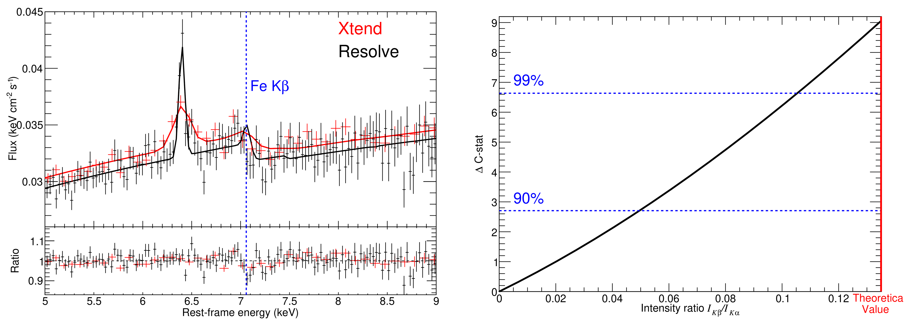
图注：({\(\it\) Left}) 5--9 keV \(\xrism\) spectra of 3C~111. A vertical blue dashed line indicates the \(\fekb\) energy, where a clear residual exists. ({\(\it\) Right}) One-dimensional contour plot of $\Delta$C-stat against the intensity ratio between \(\fekb\) and \(\feka.\)
对应解读：对应“建议重点查看的图表”第2、3、5项，以及“关键图表逐图导读”中关于 Fe Kα/Fe Kβ 局部拟合和 Kβ 附近负残差的讨论。
入选理由：这张图直接展示 5–9 keV 铁 K 能段，并用竖线标出 Fe Kβ 能量处的清晰残差；右侧还给出 Fe Kβ/Fe Kα 强度比的 ΔC-stat 一维置信信息，正好支撑日报核心判断：Fe Kα 明显存在而 Fe Kβ 相对偏弱，并且这种偏弱具有统计约束。它比宽能段总谱更直接对应本文最关键的观测异常。
来源与置信度：\(arxiv_source\)；high；\(arxiv_source\) / \(xrism_3C111_rev1.tex\):figure[2]
Fig03
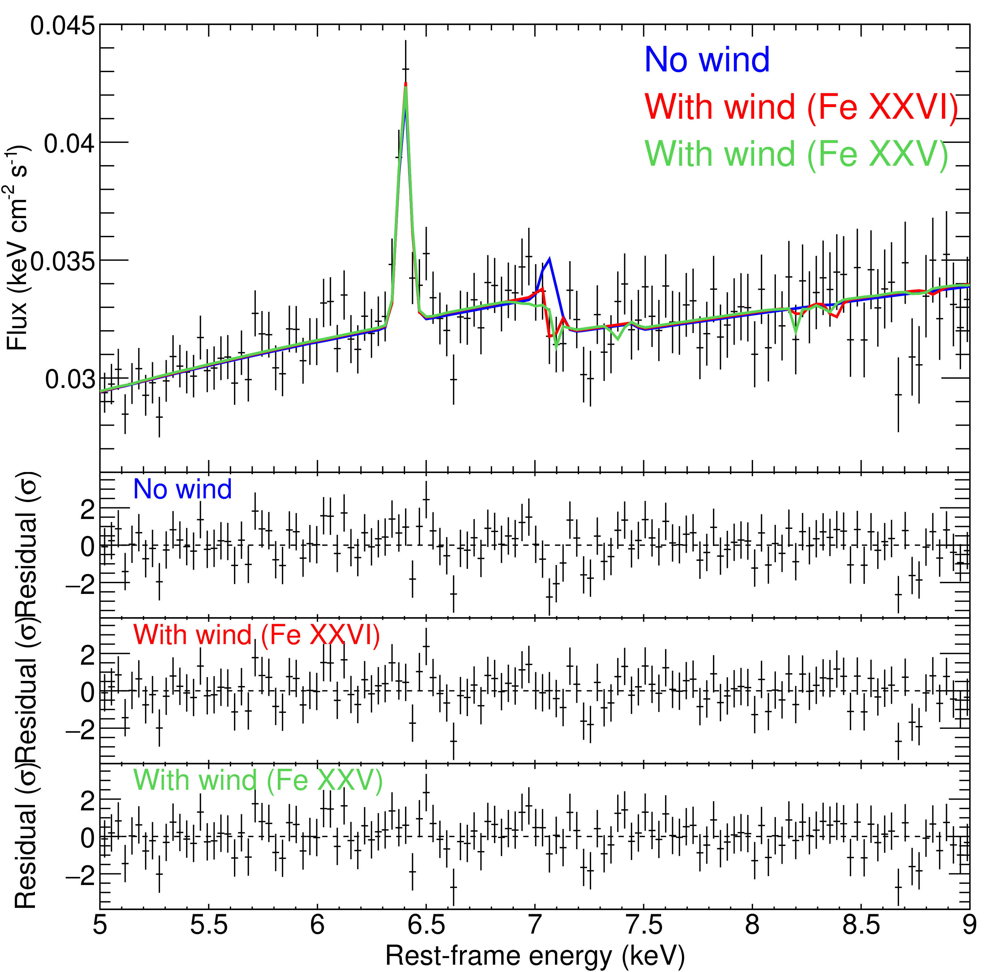
图注：Spectral fitting of the Resolve spectrum at 5--9~keV using spectral models with wind components. These models mainly attribute the absorption line to \(\fexxvi\) or \(\fexxv.\)
对应解读：对应“建议重点查看的图表”第3、4项，以及“关键图表逐图导读”中关于加入电离风吸收后残差是否消失、Fe XXVI 与 Fe XXV 两种识别是否可区分的部分。
入选理由：这张图展示 5–9 keV Resolve 谱在加入风成分后的拟合，并明确比较将吸收线归因于 Fe XXVI 或 Fe XXV 的模型，是验证‘弱 Fe Kβ 可能由蓝移高电离吸收造成’这一主结论的核心图。它能直接支持外流速度两解、模型残差改善和当前数据无法唯一判别离子种类的解读。
来源与置信度：\(arxiv_source\)；high；\(arxiv_source\) / \(xrism_3C111_rev1.tex\):figure[3]
Fig04
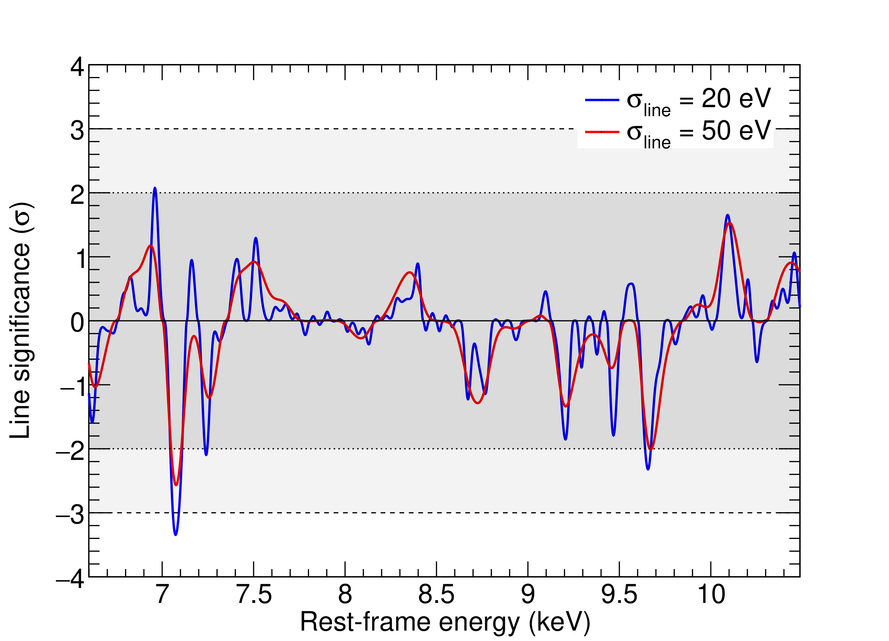
图注：Line significance in units of $\sigma$, obtained from a blind line search in the 6.6--10.5 keV Resolve spectrum with a Gaussian line width of $\sigma_{\rm line} = 20$~eV (blue) and 50~eV (red). Positive and negative significance values indicate emission and absorption lines, respectively. In the 20~eV search, the absorption feature at 7.07~keV exceeds $3\sigma$ confidence level.
对应解读：对应“建议重点查看的图表”第3、5项，以及模型拟合段落中关于窄线搜索显著性、统计惩罚和 Kβ 附近吸收线存在性的讨论。
入选理由：这张盲线搜索显著性图给出 6.6–10.5 keV 范围内吸收/发射特征的统计定位，特别指出 7.07 keV 吸收特征在 20 eV 线宽搜索中超过 3σ。它能补充 Fig02 和 Fig03，说明 Kβ 附近负残差不是单纯视觉印象，而是在盲搜索中也有显著性。
来源与置信度：\(arxiv_source\)；high；\(arxiv_source\) / \(xrism_3C111_rev1.tex\):figure[4]
Fig01
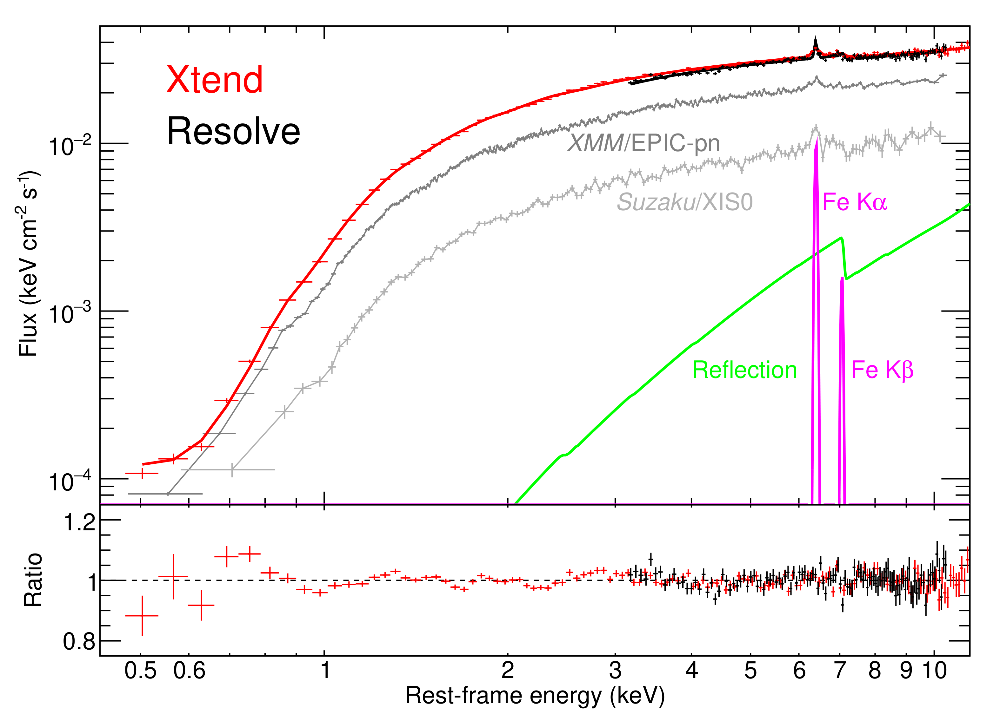
图注：Wide-band \(\xrism\) spectra (Resolve in black, Xtend in red) compared with previous observations. \(\xmm\) data observed in 2009 are shown in dark grey, and \(\suzaku\) data in 2008 are in light grey. Reflection and \(\feka/\fekb\) emission line components are also shown in green and magenta, respectively.
对应解读：对应“建议重点查看的图表”第1项，以及“关键图表逐图导读”中关于 XRISM/Resolve 宽能段谱、连续谱、反射和 Fe Kα/Kβ 发射线组件的说明。
入选理由：这张宽能段 XRISM 谱展示 Resolve 与 Xtend 数据及历史 XMM、Suzaku 观测对比，并标出反射和 Fe Kα/Fe Kβ 发射线成分，适合作为读者进入后续铁 K 局部分析前的全局背景图。其科学重点不如 Fig02/03 直接，但有助于检查连续谱和线模型是否建立在合理的整体谱拟合之上。
来源与置信度：\(arxiv_source\)；high；\(arxiv_source\) / \(xrism_3C111_rev1.tex\):figure[1]
Fig05
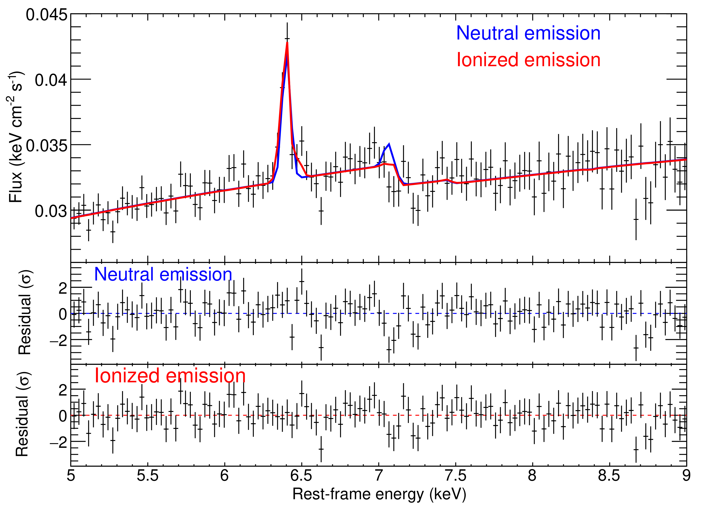
图注：Spectral fitting of the Resolve spectrum at 5--9~keV using a spectral model with ionized emission lines instead of the neutral emission lines.
对应解读：对应模型拟合段落中关于替代线模型、铁 K 发射线离化态和模型稳健性的讨论。
入选理由：这张图展示用电离发射线替代中性发射线的 5–9 keV 拟合，可用于评估 Fe Kβ 异常是否可能由发射线离化态选择造成，而不是必须引入风吸收。它不是日报列出的首要图表，但对检验模型解释的稳健性有辅助价值。
来源与置信度：\(arxiv_source\)；high；\(arxiv_source\) / \(xrism_3C111_rev1.tex\):figure[5]
强相关工作
这篇工作与活动星系核高电离外流研究直接相连，尤其是 Fe XXV 和 Fe XXVI 在铁 K 能段的蓝移吸收线。相似工作包括 XMM-Newton、Chandra/HETG、Suzaku 和 NuSTAR 对 Seyfert 星系及类星体超快外流的研究。可检索关键词包括 “AGN ultra-fast outflows Fe XXV Fe XXVI”, “3C 111 X-ray wind”, “XRISM Resolve Fe K spectroscopy”, “broad-line radio galaxy disk wind”。
它也与射电响亮 AGN 中喷流和盘风相互关系的理论讨论有关。一类观点认为强喷流系统的机械能主要由喷流携带，盘风相对较弱；另一类研究则寻找射电响亮源中仍然存在强盘风的证据，以检验磁驱动风、辐射驱动风和喷流发射区是否共存。3C 111 的结果倾向于风功率小于喷流功率，但由于风半径未知，并不能排除某些几何下风有较大贡献。
基础理论方面，应回到荧光铁线原子物理、X 射线反射谱和 photoionization 吸收模型。检索关键词可包括 “Fe K alpha K beta fluorescence ratio”, “XSTAR photoionized absorber AGN”, “warm absorber ionization parameter”, “XRISM Resolve calibration”。相反或存在张力的方向包括：把 Kβ 偏弱归因于反射模型、铁丰度或仪器系统误差，而不是真实外流吸收；以及不同观测时期外流线是否稳定存在的时间变化问题。
相似工作：
- https://arxiv.org/abs/2605.22388
- https://ui.adsabs.harvard.edu/abs/2003ARA%26A..58..257L/abstract
- https://ui.adsabs.harvard.edu/abs/2015Natur.519..436T/abstract
基础理论 / 方法工作：
- https://ui.adsabs.harvard.edu/abs/1997ApJ...476...70K/abstract
- https://ui.adsabs.harvard.edu/abs/2001ApJS..133..221K/abstract
- https://ui.adsabs.harvard.edu/abs/1995ApJ...438L..63K/abstract
相反观点 / 张力线索：
- https://ui.adsabs.harvard.edu/abs/2018MNRAS.478.4952P/abstract
- https://ui.adsabs.harvard.edu/abs/2013MNRAS.430...60T/abstract
说明
评分由 LLM 给出初评，再由本地阈值策略过滤；IACT、TeV 伽马射线和高能中微子天文学按重点方向处理。